Welcome to Introduction to CSS3! In this course you will learn how to style your pages by taking advantage of the power of CSS3. We will focus on both proper syntax (how to write your styling rules) and the importance of accessibility design (making sure that your style enhances your site, not make it harder to navigate). It is so important that you jump in ready to make mistakes and typos in this course. The only way you will really understand the material is to practice typing it in on your own as often as possible.
Colors and fonts are just the start to styling your page. The nice thing about starting with these properties is that they are usually very straightforward to implement. You pick a color and boom - instant, expected results. This week we move on to new properties that tend to require a little bit of tweaking to get the desired results. In particular we will talk about the Box Model, background images, opacity, float, columns, visibility, and designing for different browsers.
Have you ever noticed on a web page that some links are blue and others are purple, depending upon if you have clicked on the links? How is it possible to style some anchor tags and not others? This week you will learn how to style pseudo-classes (e.g., a link that has been visiting, an element that has the mouse hovering over it) and pseudo-elements (e.g., the first-letter of a heading, the first line of a paragraph). These elements are not difficult to style, but do require careful coding. It is also the first step to adding simple animation to your site. We end this week with the subject of positioning -- how to get elements to stick to a certain part of your page. Think about annoying pop-up ads. How do the programmers get them to stay RIGHT IN THE MIDDLE OF THE SCREEN despite the fact that you keep trying to scroll them away.
This week I am going to do some code review. I will show you how I used pseudo-classes and pseudo-elements to style a table. Then I give you a demonstration of three different navigation bars that utilize different styling options. We will want to step back and talk about how these different options may affect the accessibility of our site. The final step to completing this course is the completion of the peer-graded project. You will have the chance to demonstrate the ability to follow styling guidelines while still putting your own personal touch on the project. Just remember, you need to validate your work for proper syntax and accessibility.
If you would like to do more now that you have finished this course, I have a few recommendations. The most important thing is that you continue to practice your skills and always have "something" that you are working on.
Welcome to Introduction to CSS3. CSS stands for Cascading Style Sheets, a method of styling your HTML documents with various colors, fonts, layouts, and spacing. But that is just the beginning. You can also do some "cool" stuff such as creating transitions or adding animations. There are so many things you can do with CSS, that we focus on the following:
Throughout the entire course there will be an emphasis on the importance of accessibility. Not only will you style your site, but you will test it and other sites on the POUR accessibility principles to ensure that your styling is enhancing your site, not putting up unseen roadblocks.
This course assumes that you already know how to write HTML code and are ready to style your pages. In each module you will be asked to do the following:
The information has been broken down into pieces to help you learn the material in the smallest chunks that still give you enough information to do something with it. The goal is to give you the ability to listen to these during any time you have. You will find that some of the videos have material that makes sense to you at once. Sometimes you may want to replay other videos to clarify the material.
Some of the videos are not traditional lectures, instead they are videos where I demonstrate the concepts from an earlier lecture. I highly recommend that you code along with me while you watch these videos. The key to success in this course is in writing code. I put these videos in so that you have something specific to practice. It is also a great way for you to see how often I mess up when I am coding!!
Each module will include reading material. It is impossible to learn everything you need to learn just by listening to the lectures. There are suggested readings to go along with this course. I also encourage you to seek out other resources online. Anyone who wants to work with technology needs to understand that it is important to update your skills.
The first three modules will each have a graded quiz. These quizzes are intended to reinforce your confidence in the material, not "trick" you. As often as possible each question will be linked to a specific lecture or reading. You can take the quizzes as many times as you like, but there is a limit on how many times you can take each quiz in a certain time period. Occasionally I include an ungraded quiz to help students track their current progress and prepare them for the graded quiz.
There will also be material provided in many of the modules. These may range from links to recent articles to videos on pioneers in the fields of design and accessibility. None of these materials will be required for the quizzes, but rather provide additional ways for you to branch out and learn more about the history of the field or the emerging ideas.
Communication for this course is done via the Discussion boards. The best way to utilize the discussion board is to search for your topic before posting. If you can't find an answer, please try to post your question to the appropriate week. The mentors and Course liaison do a great job of helping people. And, of course we rely on students to help each other as well. If you want to contact me directly, I do check my Colleen@UMSI Twitter account. I cannot respond to emails.
Engaged learning looks different for everybody. In this course, we hope you will define your own measures of success and engage with the material in a way that best suits your needs. We recognize and celebrate the diverse ways learners engage in courses. As you go through this course, we hope you will reflect on your unique skills, needs, and aspirations, and engage in the course material in a way that aligns with your own goals. While the course provides time estimates for completion, you should feel empowered to engage in the material in whatever ways make sense to you.
We expect everyone to be mindful of what they say and its potential impact on others. The goal is to have respectful discussions that do not violate the community space created for these conversations. Here are some productive ways to engage in this course:
We expect all learners to abide by our full Learner Engagement Policy. We will specifically be monitoring this course for language that could be considered inflammatory, incivil, racist, or otherwise unacceptable for this learning space, and we will remove language deemed such.
Please note that external study groups on applications like WhatsApp are not affiliated or endorsed by the University of Michigan. We strongly discourage joining external groups and instead recommend interacting with your fellow learners within the platform.
Please express caution if you do join or post any personal information in these forums or in these groups. These forums are publicly accessible and any information you post may be collected, published, or used in an exploitative manner (scams, etc).
All submitted work should be your own and academic dishonesty is not allowed. Academic dishonesty can be defined as:
Questions and discussion of course material should take place within the course itself. Please do not contact instructors or teaching assistants off the platform, as responding to individual questions is virtually impossible. We encourage you to direct your questions to [forum], where your question might be answered by a fellow learner or one of our course team members. For technical help please contact the Coursera Learner Help Center/edX Help Center/ FutureLearn FAQs support forums.
We are committed to developing accessible learning experiences for the widest possible audience. We recognize that learners with disabilities (including but not limited to visual impairments, hearing impairments, cognitive disabilities, or motor disabilities) might need more specific accessibility-related support to achieve learning goals in this course.
Please use the accessibility feedback form to let us know about any accessibility challenges such as urgent issues that keep you from making progress in the course (e.g., missing or inadequate alt-text, captioning errors).
We welcome all learners to this course. People like you are joining from all over the world and we value this diversity. We strive to create a community of mutual respect and trust, where people from all backgrounds, identities and views are valued and heard without the threat of bias, harassment, intimidation, or discrimination. We pay attention to your feedback, how different types of learners experience this course, and aim to make improvements so the course can best serve everyone. We hope you enjoy learning about topics that are important to you.
Hello, everybody. Welcome to Introduction to CSS3. In the next four weeks, we're going to learn how to take plain simple HTML5 code and turn it into something really beautiful.
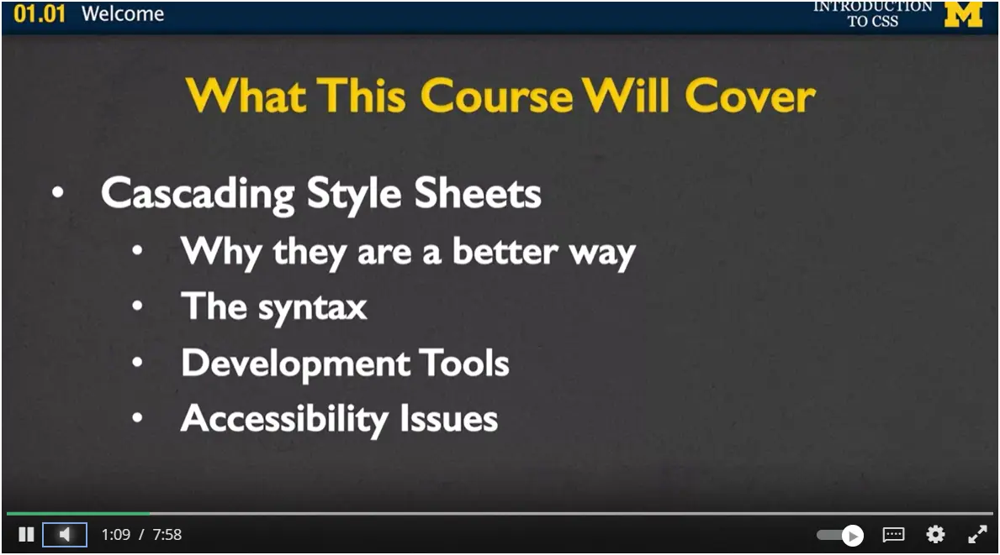What will be doing over the next four weeks? Well, the main focus will be on learning about cascading style sheets. We're going to talk about why they are a better way to style than what people used to use in the early 2000's and late 1990's.
Next, you're going to learn the syntax. Once you know that it's a better way to use it, how can we make sure that you're writing really good code? Once you've figured out the syntax, we'll go on and we'll also talk about development tools.
When you do web design, it's very rare that you just sit there and you code, and you don't look to the left, or look to the right, or go look on the web. Instead, you're going to be using other tools to see how you can change your code without actually having to write the code beforehand.
Finally, as always, we'll be talking about accessibility issues. It's always fun to add colors and animations and cool things to our page. When we do that, we want to make sure that we don't do it at the cost of accessibility. We want make sure everyone can see everything on our page.
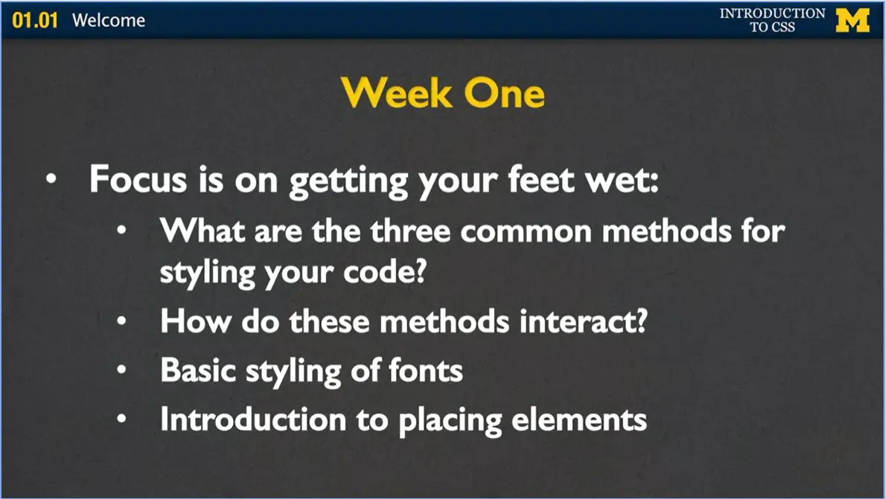Let's talk about what we're going to do on each of the four weeks. In week one, the focus is really on just getting you started, getting your feet wet and getting you a little bit of confidence in knowing that you can do this.
We're going to start by talking about the three common methods for styling code. And once we cover them, we're going to talk about how these methods interact, which ones are better in different situations. And different things that you can feel confident knowing how you can best style your page in any specific situation.
Next, we'll talk about the basic styling of fonts. By the end of week one, I really want you to be able to take a web page and change something really obvious. Can you change the text so that it's cursive, or underline, or a different color? Finally, we'll very briefly talk about placing elements on the page. This is going to be an important element of our entire four weeks. Is trying to figure out how you can put your header over here or an image over there. And it can be tricky but that's okay. Because we're going to repeat it week after week.
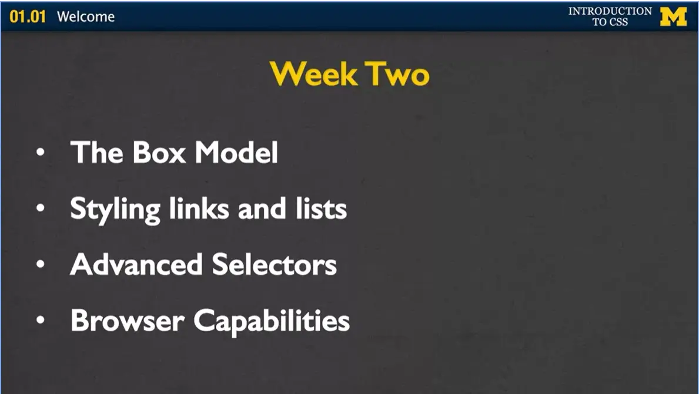In week two, we will discuss the box model. This is a very common concept for any web developer, because we talk about how every element on your page is actually a box.
Next, we'll talk about styling links and lists. We all love the links in our page. The web is the web because we have links, so how can we make them look really cool? Next, we'll talk about advanced selectors. In the beginning of the course, we'll be very careful about styling simple elements such as styling a list or styling a paragraph or styling a header.
Next, we're going to want to talk about what if we only want to style some of the links, not all of the links?
Finally, we'll talk about browser capabilities. Just like when you learned about HTML5, you learned that some browsers support some tags while others don't. In the same way, browsers treat CSS differently. And I want you to know how to best react to that.

In week three, we talk about pseudo classes and elements. These are this cool idea of how we can make different things happen when we hover over a page. It also talks about how we can style just certain things like the last paragraph in the page or the first paragraph.
We'll also talk about transitions. This is a way of changing the look of one of the elements on your page, which is very similar to the idea of transforms.
Transforms are how we can rotate things on the page, skew them, making them bigger and smaller, and doing different things like that.
Finally, again we'll talk about positioning, how we can make things go in a certain spot and stay there all the time. We've all seen really annoying pop-up menus and different pop-up ads. Now you can make your own annoying pop-up ad.

In week four, we're not really going to cover new material. Instead, it's going to be samples, samples, and more examples and samples. In particular, I want to show you different ways that we can style a table and different ways for styling a navigation menu.
The bulk of week four will really be spent working on your final project. I want you to know right off who this class is for and if you're ready and are interested in taking it.
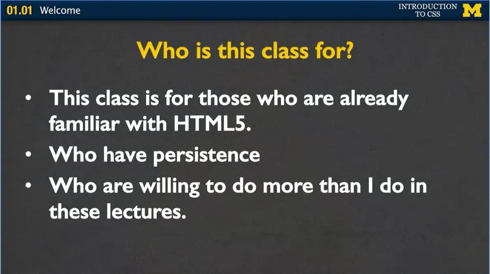First of all, you don't want to take this class unless you know about HTML5 already. You may be taking a course on it. You may be just going online and reading about it, but you need to feel comfortable if I mention things such as tags or elements or validation.
Next, this class is for people who have persistence. You will never code your pages the right way the first time. Even the second time, sometimes the third, fourth, and fifth time. It's really about enjoying the whole process of really wanting to get something to work and feeling little victories when it does happen.
Finally, this class is for those who are willing to do more than what I'm going to do in these lectures. There's only so much information I can give to you. It's up to you to practice it, tweak it, change it, and try to really see what happens beyond what I'm showing you.
If you want to know a little bit more about me and why I'm choosing to teach this class, here's a little bit of background information. I have a PhD in Computer Science. But to be honest, that's really the least important part. What I really have is two decades of teaching experience. And during this time, I've taught a wide range of students and a wide range of topics. And I found that I really enjoy explaining things in different ways, and I really enjoy reaching out to students who maybe have more questions. My emphasis on education has always been running around the classroom, helping students debug, meeting with them one on one.
Let's talk about how you can succeed in this course. In a perfect world, you get together with friends, you'd code together, you'd learn from each other’s' mistakes, and you'd also learn from each other’s' successes. While we don't have that one-on-one experience, make sure you use the message boards. Not only to ask questions but to see what other questions people are putting. You can learn a lot that way. I really can't stress enough that I don't want you to feel like I'm trying to trick you, or that I'm giving some sort of gotcha problems. If you're ever working on something and you're stuck on it for more than 15 minutes, move on. This is CSS, it's styling. There's always something you can change, and you can find something else that you prefer to work on.
Make sure that you're looking things up on your own. There's no way I'll be able to teach you everything you need to know. And, that's why you can go on the Internet and look at different resources, and see if there's something out there that you would like to recreate.
Finally, it's really important that you practice this as much as you can. If you do the minimum required for this course, and you're happy with that, that's great. I'm glad that you're able to learn something. But if you really want to be a web developer, it's so important that you're enjoying what you're doing, and you're going off on your own, and you're creating something beautiful whenever you can. I welcome you to the class, and I can't wait for you to join us as we learn more about cascading style sheets. Thanks.
The preferred way to code in this class is editor software (Notepad++, TextWrangler, Sublime, etc.). If you do not have the ability to access or install this type of software, there is an online editor at: http://www.w3schools.com/html/tryit.asp?filename=tryhtml_intro .
You can also use CodePen (there is a link below). It is important that you find a way that you can enter code and still test your work.
All of the code I cover is available from a CodePen repository. I hope you can play with the code to test the different concepts we will cover. Here is a link to the CodePen repository for the Week One code. http://codepen.io/collection/noEQed/
Here is a list of the lectures this week that use CodePen, and the name of each file that they use:
This tutorial can be found at https://learn.shayhowe.com/html-css/building-your-first-web-page/.
This is a great resource for a lot of my students. I particularly like that the author uses CodePen. This is a great feature that lets you open, edit, and run the code as you learn about it. The lesson "Building Your First Page" gives a brief overview of HTML and the structure of pages. I am going to assume you already know about that, but it is a good refresher. The second part of this reading explains many of the key terms that I will be using throughout this course.
You might find it easier to read through this after going through the lectures. Or better yet, read this first, watch the lectures, and then review the material again, but this time play with the code to see if you can change the pages.
Welcome to our first truly technical lecture in our CSS course. It's about adding style to your pages. If you've come to this course with me from our HTML course, you know that I know that you can make general HTML files. But up until now, you may not have styled them at all.
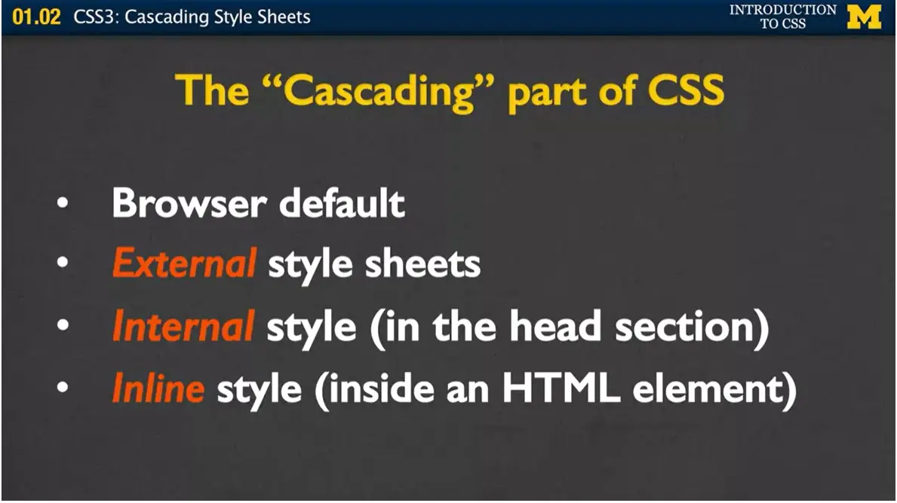What I want you to know before we even begin styling, and you start putting your own little twists on the pages, is that the same HTML file may look different when viewed on different browsers, and there's a few reasons for that.
First, some tags aren't supported in some browsers while they are in others. If you've ever used the details tag, you can see that sometimes your page will have little arrows or different little markings on them and other times it won't. That comes down to tags that are supported. But also, every single browser has its own different default style. And what that default style says is this is how I want my H1 headings to look, or this is how much padding I want around my paragraphs. If you go to the exact same page on different browsers, it may be hard to tell, but you'll see tiny little differences in how things are made. But in general, this default look is really plain. And most people I know, they don't want their pages to look plain. They want to put in some style. Let's begin looking at ways you can do this. One way to add style is to think about adding it directly into the text.
Now as HTML evolved, we went from having tags that were distinctly about color, and about different centering, and things like that. To saying no, no, we don't want tags that have to do with style. We only want tags that have to do with content. People said, okay, we can do that, but I want to make it pretty.
How they did this is they added style attributes. In this case, I've taken an h1 tag and added the style attribute and simply said "color:blue". And what this is going to do is it's going to make this particular h1 heading have blue font to it. It's very simple. It's a nice way to just go in and add simple styling to your page. However, this still kind of breaks our rule of wanting to separate content from style. Because if you want to change it to, say, red or green or something like that later, you're going to have to go in and change the tag, because you're going to have to change the attribute. I really tried to go out of my way to not use this at all, and instead, get in the habit of doing things the right way. And the right way to style your pages is to use CSS.
Cascading style sheets are basically a way for you to write rules that say how you want to style all the paragraphs, or how you want to style all your headings, or how you want to style some of your images. It's a really nice, specific way that everyone can follow to make these styling choices. And the rules are set up like this.
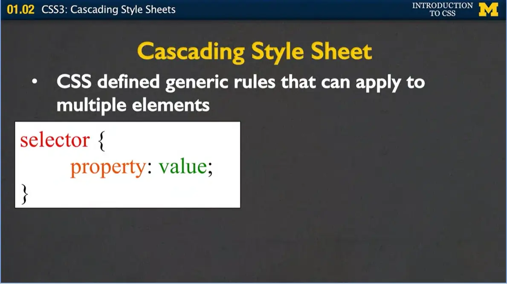First you have to put up your selector, and selector is just kind of a fancy way of saying what it is you want to style. In our case, we'll start off by just giving the selector different tag names such as h1 or paragraph. Once you find which tag it is you want to style, you say which property it is you want to change. We can look at things such as color, background color, how much space we put around it, we're going to cover all of those.
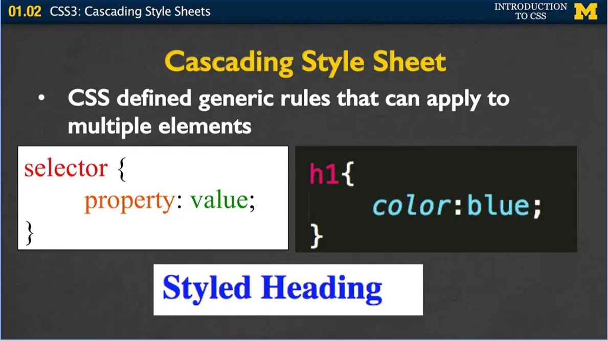But for right now, we're going to start off really simple and deal with colors. Then, you have to give each property a value, saying which color you want it to be. On one side, we have the very generic, how we write a rule. And on the other, I've written a very specific rule that says, hey, whenever you see an h1 heading, I want you to make the font color blue. We've done exactly what we did when we embedded using the style tag, but now it's very generic, and we're not talking about a specific heading. We're not talking about a specific tag.

When you write those rules, the syntax is very important. A lot of times, when you write HTML, the browser is really nice to you and if you forget to close a tag it says, that's okay, I know what she wants me to do and it'll go ahead and put the page up anyway. When you're doing CSS, if you're sloppy with what we call your syntax, you're going to get in trouble. The brackets and the semicolons are very important. Let me show you again when we go back here, you can see that I've got a beginning bracket and a closing bracket, and I've got this semicolon right at the end. You need to remember to include those.

And one of the reasons I talk about this is that when you start writing your code, when you pick a good editor, and most editors are pretty good, such as Sublime or TextWrangler, TextEdit, Notepad++, they will put colors in for you. So, all of a sudden if you're looking at your CSS rules and you're like, woah, I kind of expected things to be different colors, but instead everything's white or everything's red. It gives you this hint that you've messed up on your rule syntax. In the same line, I want to put comments in to help you debug and explain to yourself what you're doing. This is how comments are done in CSS. You just do the /*, */ again.
What happens if you want to do more than just one property? What if instead of saying just you want the color to be blue, you also want the background color to be yellow? Well, no problem. You can have as many property value combinations as you want. You just need to remember to separate them with semicolons.
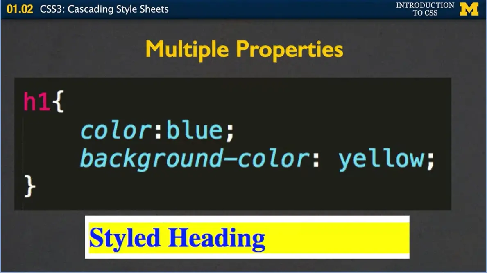In this case, again, I've set the color to blue and the background color to yellow.

All right so now that you know how to write a rule how do we actually get them to work? There's two ways and the first way I'm going to tell you about is called using an Internal Style Sheet. As you can see over here in my code, I've got the basic template of our file. And inside the head tags, I've put this style tag in, that's where you're going to want to put your rules, they're defined right within that style.
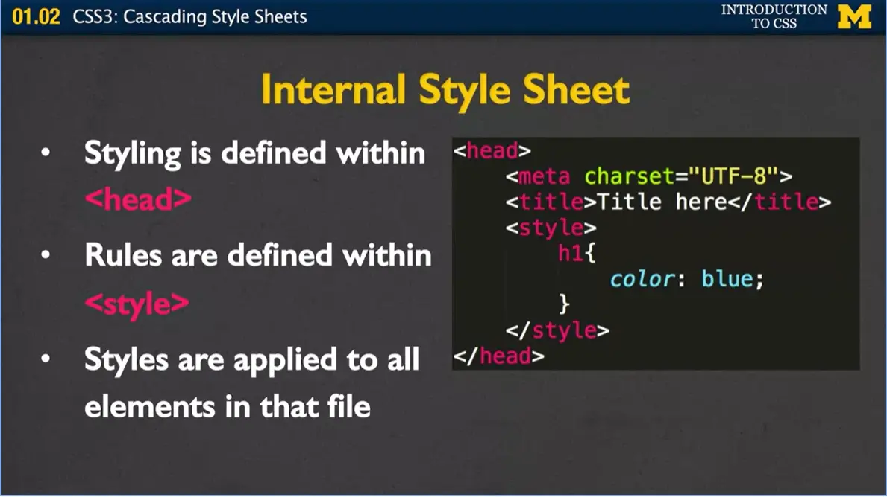Inside the style tag, I've added the h1, the color blue, and I've ended my style tag. What happens now is that when the browser opens your page, it gets to the head section it says, oh great, she wrote some rules, let's see what she wants me to do. And it's going to know to go through your page and apply this rule to all the H1 tags. And if you have multiple rules including paragraphs, images, things like that, it's going to know, I want to apply this to all instances in the entire file.
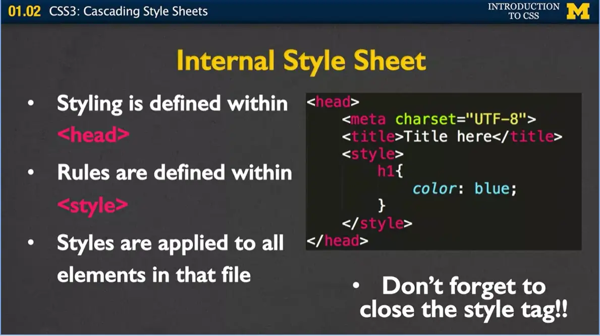There is a really good chance you're going to mess up because I do this 80% of the time when I'm developing in class, and what I do is I forget to close this style tag. And if you forget to close that style tag down at the bottom, well actually your page may end up being blank. So don't freak out when you first start doing this if your page is blank, it probably means you forgot to close the style tag. All right.
Internal style sheets are really nice when you're just trying to style up one page. All right? And I often do it just so I can keep all my code in one file instead of going back and forth and back and forth. Imagine that you have site where you're going to have 10, 20, 1,000 different pages and you want them all to have a very consistent look about them. You don't want to have to go in and say if you want to change a color, you don't want to have to go in and open every single one of those files so you can change the color to red or green.
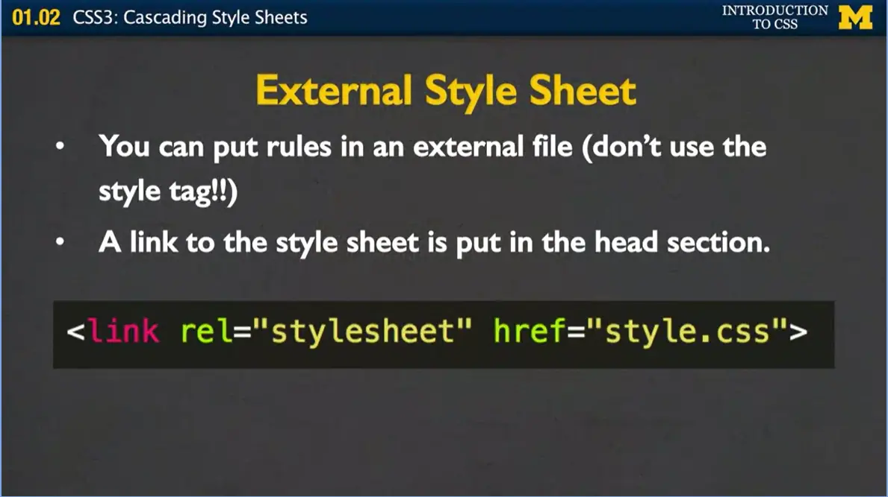Instead, what you want to use is you want to use something called external style sheets. The way it works with an external style sheet is that you put your rules in a different file. You open up a file, you're going to save it something such as like my style with a .css file extension. Now the browser knows, oh everything in HTML, that's the content. Everything in .css, that's the layout. When you make your external style sheet, it looks just like we just did in the internal, except for you don't use a style tag. Then, once you've put your rules in a separate file, all you need to do is add a link into the head section. In this case, I've gone in, I've put my link, I need to let it know the relationship because of the style sheet. And you have to remember to put the file name. Once again this is where it's going to be really important that you're naming things in ways that they make since to you. You can link to as many different style sheets as you want, most of the time we start with one.
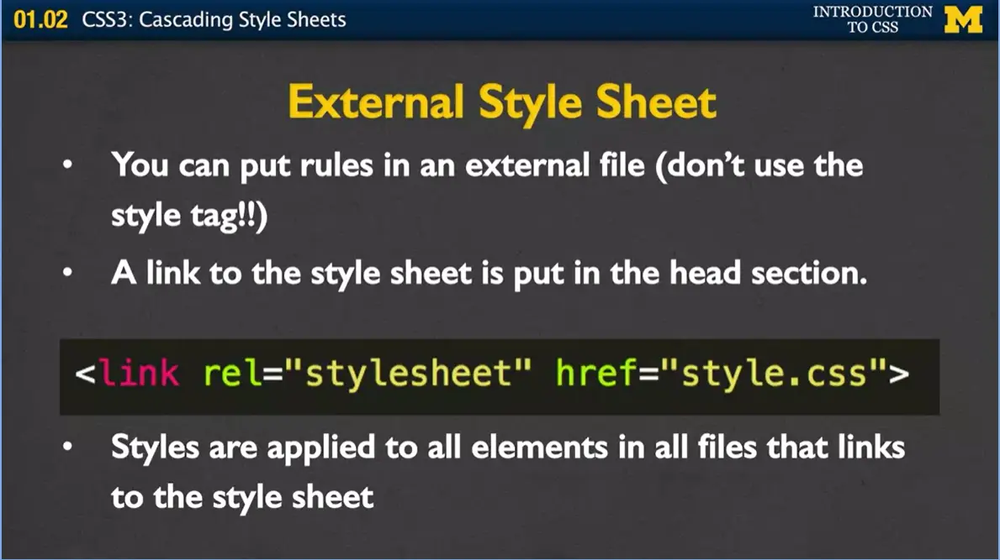Now that we've had that style sheet, every single file that links to it will all share that style sheet. Remember when I mentioned that you might have a site with 10, 20, 1,000 pages to it and you decide to change that color from blue to red or green or something like that? This is great. All you need to do is open up style.css, change one line of code, and you've now just changed potentially thousands of pages.
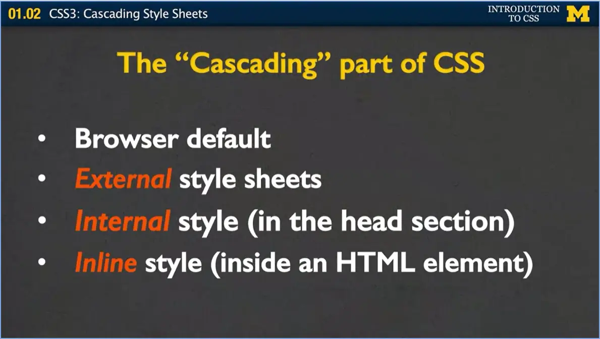Let's talk for a second about this idea of cascading style sheets. What does it mean that we're cascading? Well, when the browser goes to make your page, the first thing it's going to look at is go, all right, maybe they're not telling me anything. How do I normally make h1 headings? How big do I make that font? Have its own kind of default values. But then it goes and it looks and it says, oh are there any external style sheets. Because if so, I'm going to overwrite my browser defaults and put in the rules that are in this external style sheet instead.
Next, it's going to check for internal style. That style you have in the head section. Because in general, the browser thinks, maybe there's something really special about this particular page, and here she wants me to do these rules instead.
Finally, any of those inline styles where you use the attribute tag, those are going to have the highest precedence of all. It can be really confusing, because you might start writing up different rules, and you can't figure out why some are working and some aren't. This is where the cascading part comes in again. First it looks at defaults, then external, then internal, and then inline. Which is why really you want to avoid using any inline style because it pretty much nullifies all your styling rules.
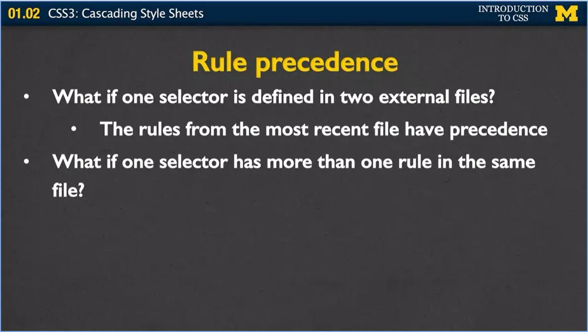Alright, so we know how those four go, but what if you have a selector and, you've linked to two or three different style sheets, and that same H1 has been defined to be blue, green, and yellow, but in different files. How does the browser know what to do?
Well, how it works is that the rules from the most recent file have precedence. And what I mean by the most recent file, it means it goes up into the head section and it goes one, two, three, and it kind of looks at what order you listed them, and the last one you listed is the one that's going to have precedence.
Okay? Well, what if you have a selector in the same file, and you've written H1 multiple times. This can actually happen quite a bit. Especially if you decide to go off and be part of a big development company, you write some code, and then someone else writes some code, or, as I tell my undergrads, maybe you went out and had a really good time one night, and you came home and decided, I'm going to code! And you forget that you've already written some rules. Well, if that's the case, once again, the browser's going to look at the one it saw last.
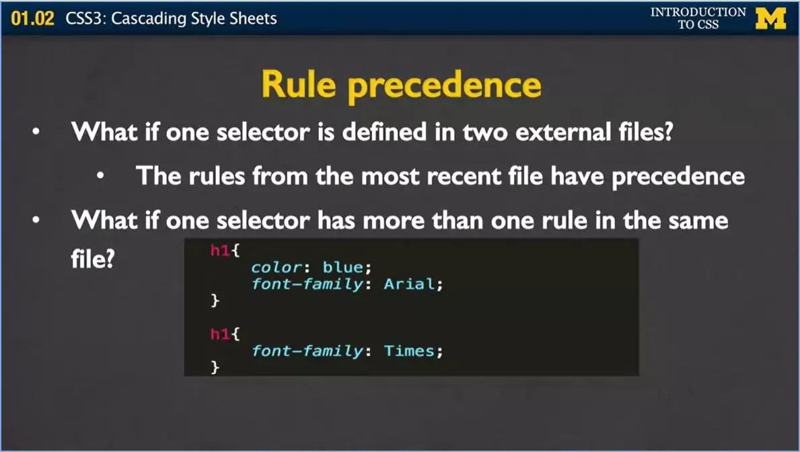In this case, I have two rules for h1. One writes at the color to blue. And I said, hey I want you to use this aerial font family. And then later, there might be a whole bunch of stuff in here, might be nothing, and I say hey, I want you to use a font family Times. How the browser's going to look at this is it's going to go down, and say, I'm going to make all the font blue, and I'm going to go ahead and make the font family Times. It's just always is going to use the last one it saw.
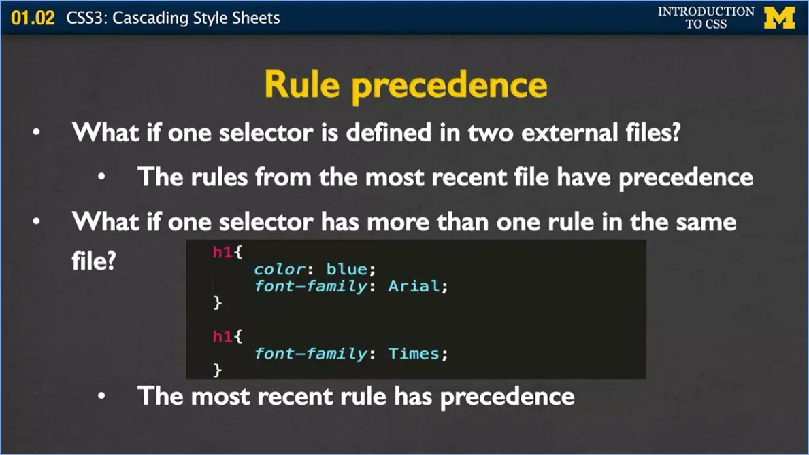Again, the most recent rule has precedence, whether it was inside your code or it came from different files.
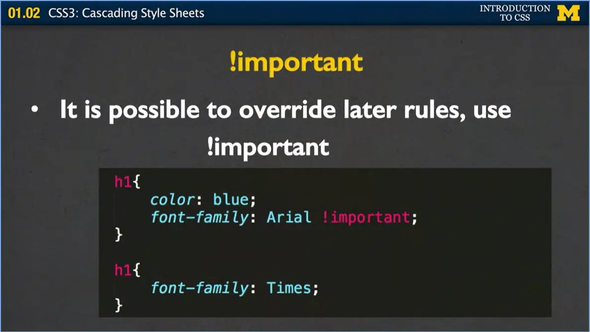There is, however, one way to overwrite this. Suppose you're writing something and you know you want something to be that way. You don't care if anyone else overwrites it. You really want to make sure people aren't using inline style, different things like that. What you can use is you can use the !important Attribute right here. Right here I've got font-family, Arial, and I've got important right here. Even though later I decide to overwrite it with times, the browser's going to say nope, I know that she really wanted me to use Arial, and it works out.
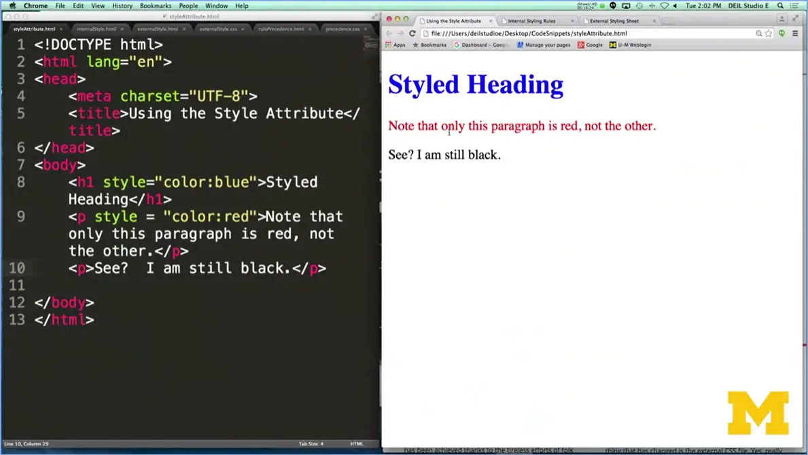Let's go ahead and look at an example of what I mean by all those precedents. I know just listening to me can get a little overwhelming, so I've got a quick example showing you the different ways and then I'll kind of wrap up this lecture.
Let's start off using the style attribute. As you can see in here, I've written the code, and I've used the style attribute for this h1 heading, and this one paragraph. In this case, I want my h1 heading to be blue, and my paragraph to be red. And what I really want to show you is that the only paragraph that was changed to red text or red font was the first one. The other one's still black. The only way to style is if you go in and you change each and every tag to make it look the way you want it to. If I wanted all the paragraphs to be red, I'd have to go in there and put style equals, style equals. In this example there's only two, but you can imagine how it'd get really annoying if you had a lot, okay.
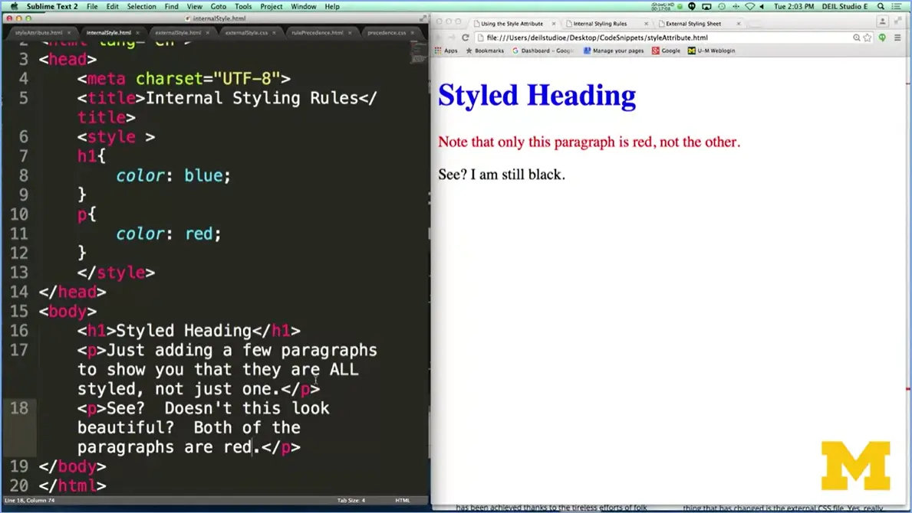In our next example we have an internal style. In this case, I've put in my style tag up at the top and I've added rules for paragraphs and H1 headings, and it should handle both. Now there's nothing in here anymore, my tag is all by itself. And if you look at the result, let's go over here.
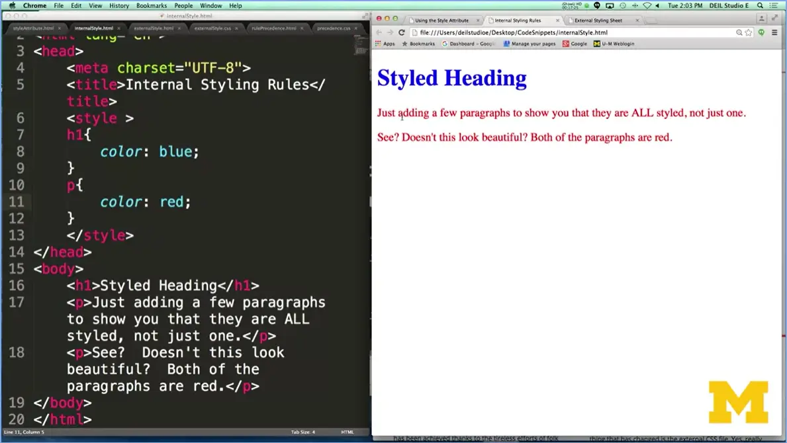You can see that now, even though my HTML doesn't have any type of styling in at all, both of the paragraphs are red over here and so's the heading. All right?
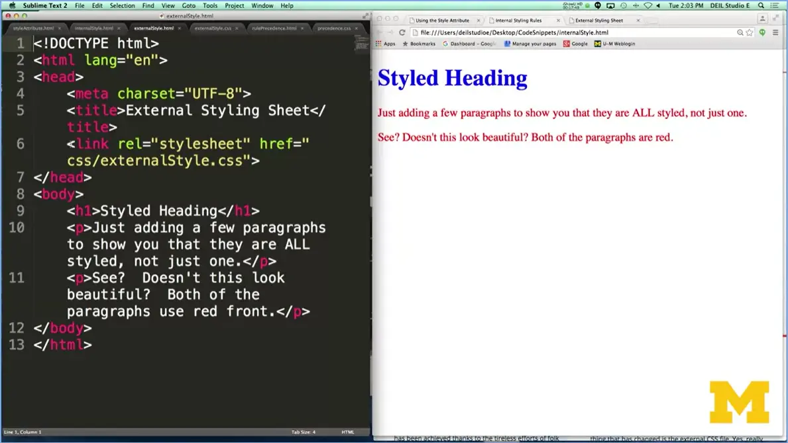The last example I had for you is, I took these exact same rules and I put them off into an external style sheet. Again, there's no style tag here. It's just the rules themselves. And then I had to go back to the HTML file, and you can see right up here, near the top, I have hey, let's link to the style sheet I want. Now, I want to point this out very carefully to you.
If you notice, I have css/externalStyle sheet. This means that my style sheet is in a special folder called css. Developers really stress that you do this, because you want your code to be kind of organized into different parts. Again, in the same way, I now have a page that uses external style sheets and looks really good. All this code is going to be available for you to look at it, but I want you to kind of play with it as much as you can.
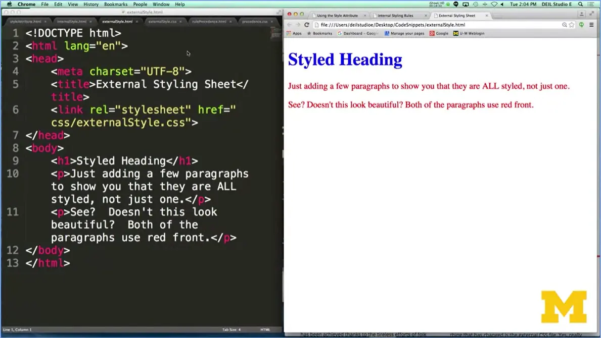But I want to use this final example to help you understand how the cascading works. Right here, I have my external style sheet. I'm going to go over here for just a second. Go to my, and I'm going to add,
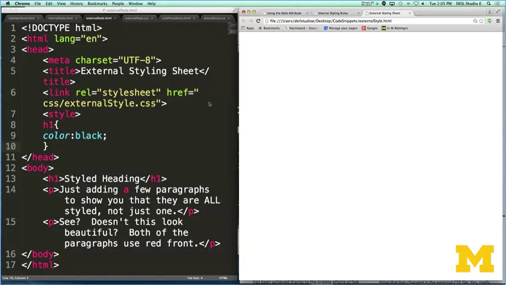One last thing. Sorry, this is going to be awkward. And I'm going to say you know what? Instead, I want that font to be black again, and I end it. I'm going to show you what happens when you mess up really quickly. I'm going to save it; I'm going to reload my page and everything disappeared. This was what I was talking about. You really want to make sure you include that style tag. Do it.
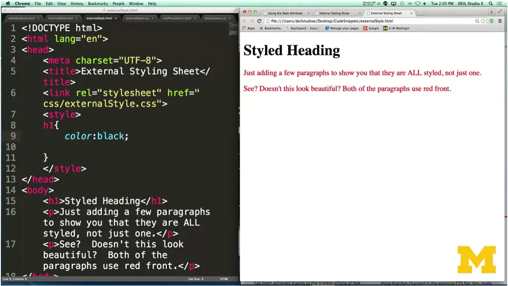Make sure you close it up. All right. Now what I have going on here is my browser has its browser default. It has an external style sheet, and now it also has an internal one. Let's see what color it's going to be, if it's going to be blue or if it's going to be black. And as you can see, it's black. As you start styling, it's going to be very important that you look at different ways for separating your content from your formatting. As well as looking at the different ways that you can do that formatting.
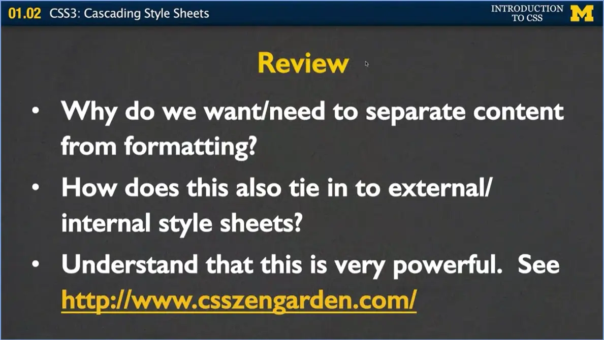One of the first things I want you to think about is how this idea of external and internal style sheets really plays into the separation of content from formatting. And at the same time, I want you to understand that we don't always follow every rule. In the beginning we always have to start with really simple examples to help you solidify what's going on with CSS. I'm just going to end this now with a brief demo from an example they have at csszengarden.com because I think it really brings home the idea that CSS can be very powerful. Let's take a look.
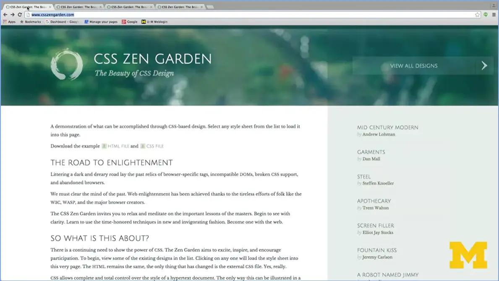At this site, CSS Zen Garden, they've actually done a really great job of showing all the different ways you can format an exact same file but in different ways.

Up here, if you take a look, you can see that this is one person's style sheet for decorating or styling this document. Now, without changing any of the HTML at all, someone else came in and said, hey, you know what, that's nice, but I'm going to style it this way.
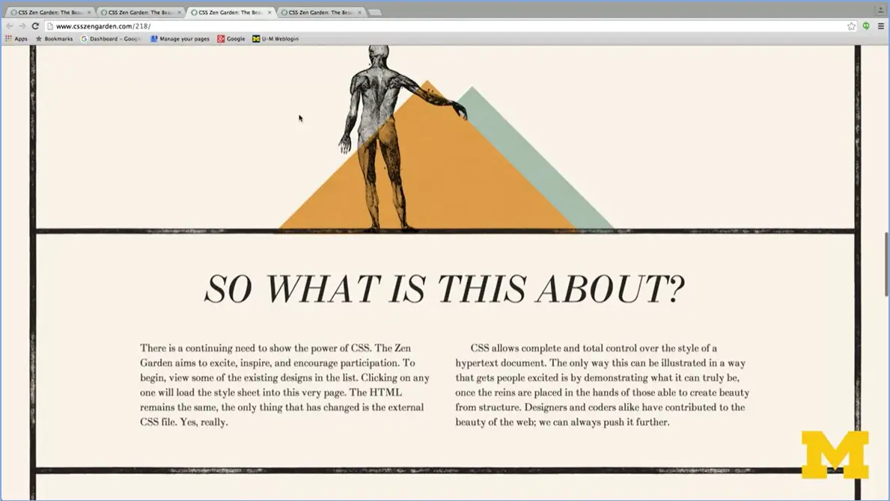It looks completely different. It's the same exact HTML but it looks completely different.
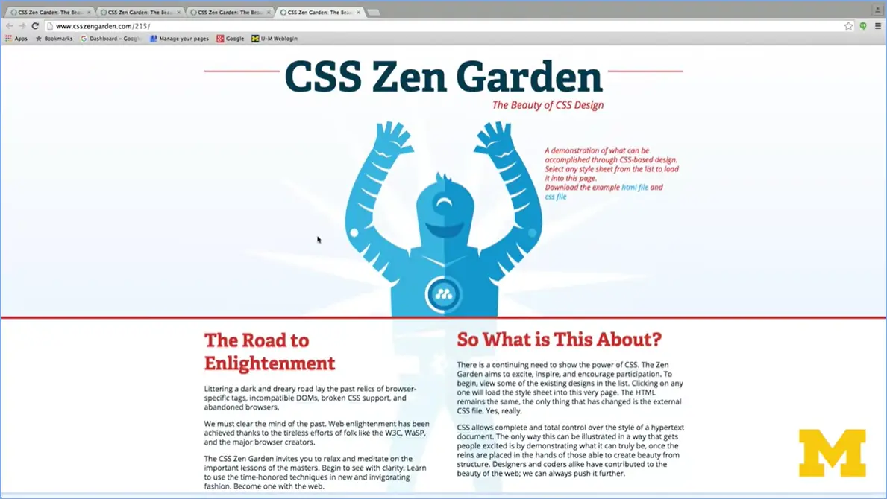In the same way, we've got this one right here, same exact HTML. But you couldn't look any different, because they've added some CSS and JavaScript to it that's different. Come on with me. We're going to code a lot in this course. We're going to be playing a lot with this course. You're going to be messing up a lot in this course. But I can't wait for you to develop something that really reflects how you want your page to look. Thanks.
Hi. In today's lecture, we're going to be talking about colors. Before I really jump in, though, I just want to remind you that I'm a computer scientist, and art and design are not necessarily my core background. In fact, I'm pretty bad at it. So, what I'm going to be talking to you about today when I'm talking about colors is the best way to code up colors. Instead, when you're really looking for advice on what the best color schemes are going to be. I'm going to direct you to different places online and let you use your own expertise to kind of figure out what goes best with each other. But let's begin with how we use colors on your web page.
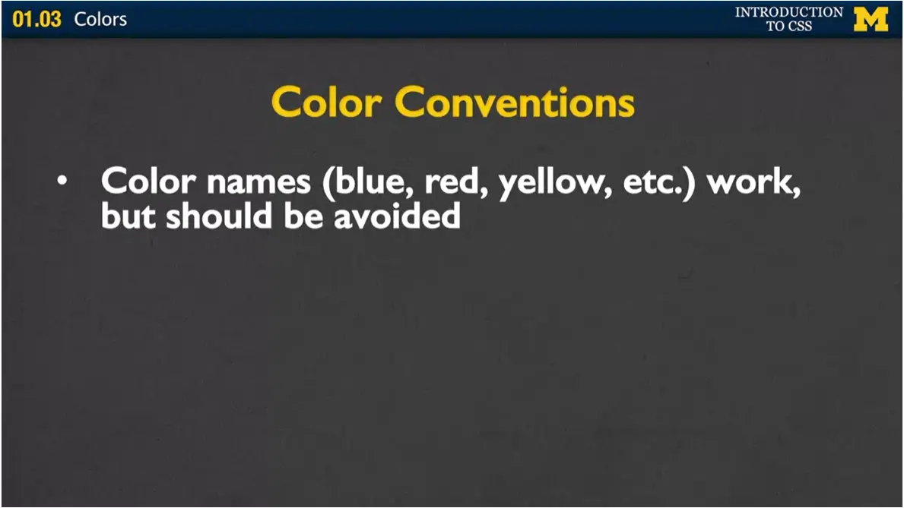We talk about the three different basic color conventions, the main ones that people use. Conventions is just another word for suggestions. It's not a rule. You don't have to follow the rules I'm going to give you. It's just the way that most programmers program so that they can understand what you're trying to do, when they look at your code. One way that you can add color is to just simply use the English word. Blue, red, yellow, etc. These work, and they'll show up fine on your page. The problem is, is that it's not consistent across the pages. What's yellow to one browser is not the exact same shade of yellow to another browser.
In general, we avoid color names when your final project is coming up. When you're just coding and hacking away, you just want to pop something up on the screen. No problem. Use blue or red or yellow but then later what you're going to want to do. It changed when these other two conventions I'm going to talk about.
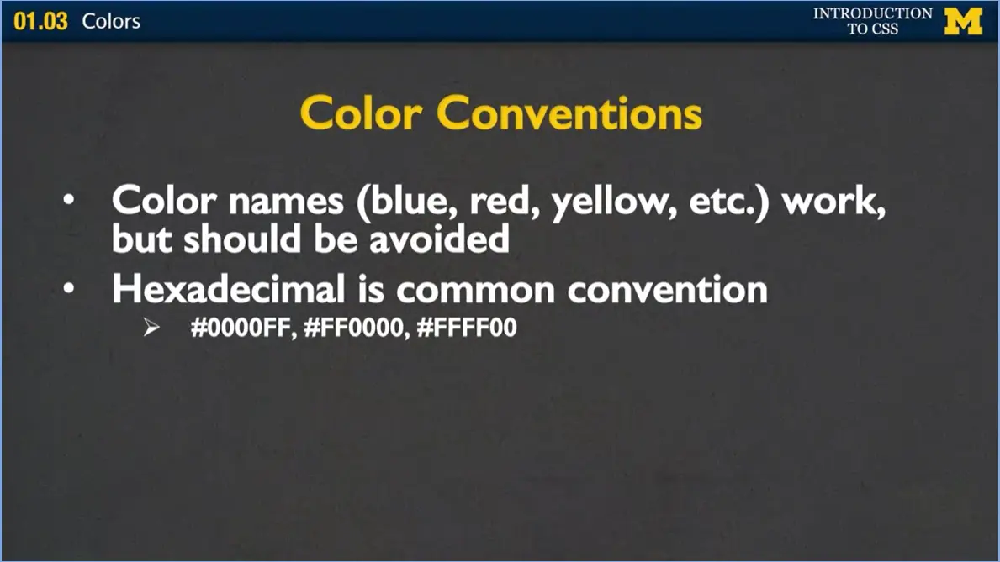The first one is called hexadecimal. Hexadecimal you might recognize the decimal part, that's how we count from zero to nine. Hexadecimal just means they have sixteen digits instead of ten. You can use zero to nine, but then also A, B, C, D, E, and F. And F is kind of like the strongest, most powerful number you can use.
When you do hexadecimal, it's always set up the same, where you have a pound sign followed by either three or six digits. The examples I have here for you are six digits. And the way it works is that you have a red, green, and blue value, and the bigger the number you put in there, the more red, green, or blue you'll see.
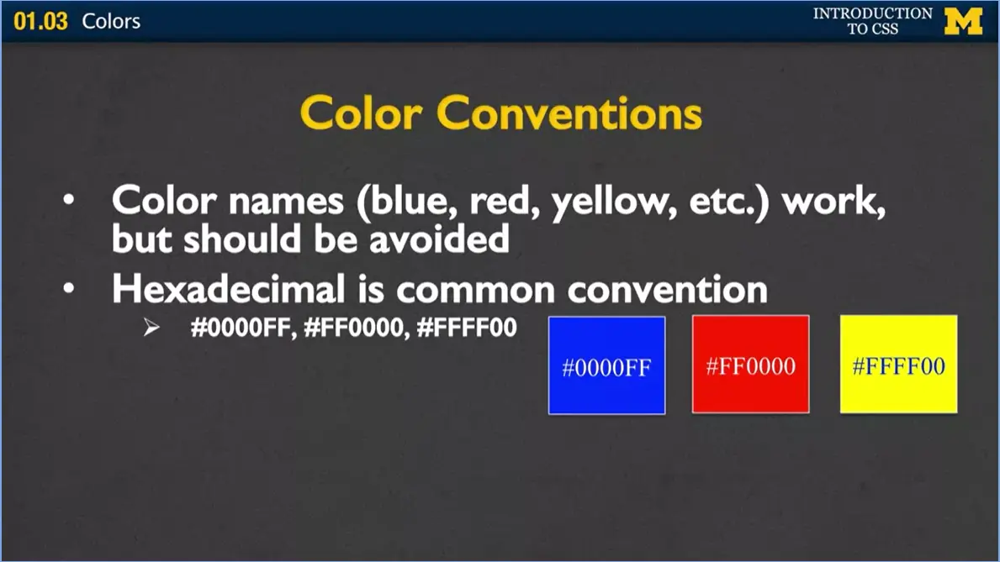Here's my example. I have an example of blue, red, but also yellow because depending on how much of these different values you put in, it's can change the color that's going to show up on your screen.
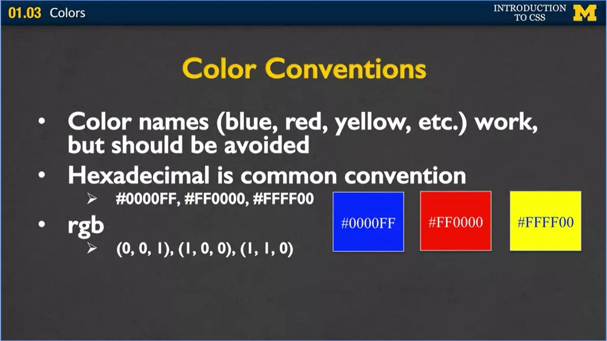Now hexadecimal is probably the most common way of doing colors when you look at a lot of people's pages, but another way that's coming up a lot is the RGB. Again, it's the same idea that we have red, green, and blue, but instead of using these kinds of strange hexadecimal numbers, the zero to F, instead you're using numbers between zero and one. Here I've done the same thing, I've just done one, one, and one, one. I could have just as easily put 0.5, 0.8, 0.6, and that would change the strength of the color.
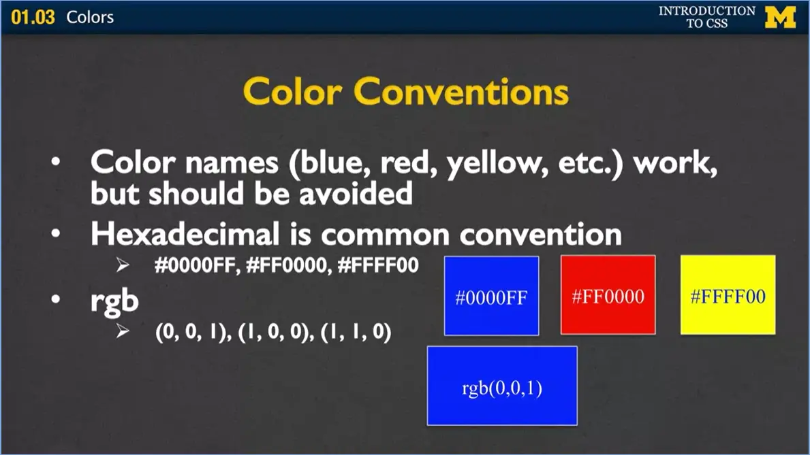Here I have rgb (0,0,1). One of the reasons that people have been switching over to rgb is that there's another option called rgba.
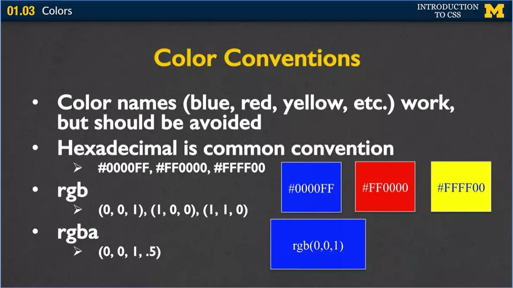And for the longest time I really had to think about what that a meant and what it stands for is alpha transparency. You have a fourth value on the end that says, you know what? I want to use this blue color, but I want to kind of make it a little bit see through.
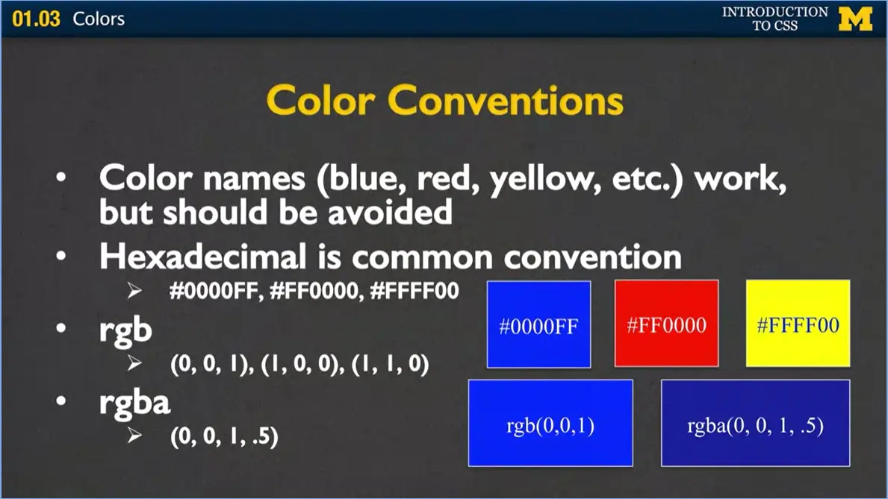When it comes up, if I were to actually make it zero it would be completely see-through. If I were to give it a final value of one, it would look just like the regular rgb value. Different monitors can display colors in different ways. I want to show you an example of how you can see some of these different colors and how they're working.
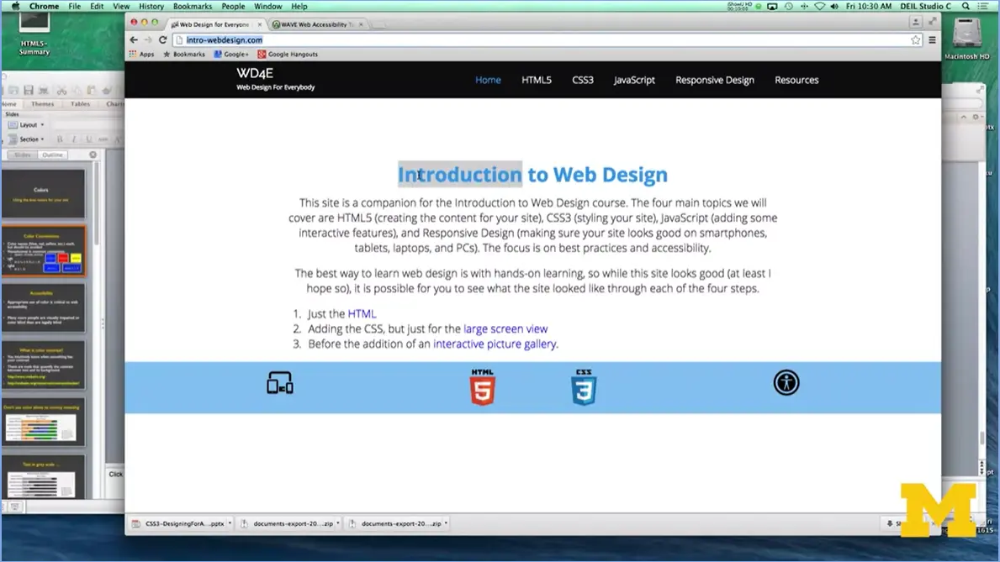What I brought up here is my course webpage and it's okay if you can't see it. I know it's kind of small. What I want to show you is me using something called Inspect Element to really look at my page, and look at the colors, and a quick way for me to see how I can make it look different.
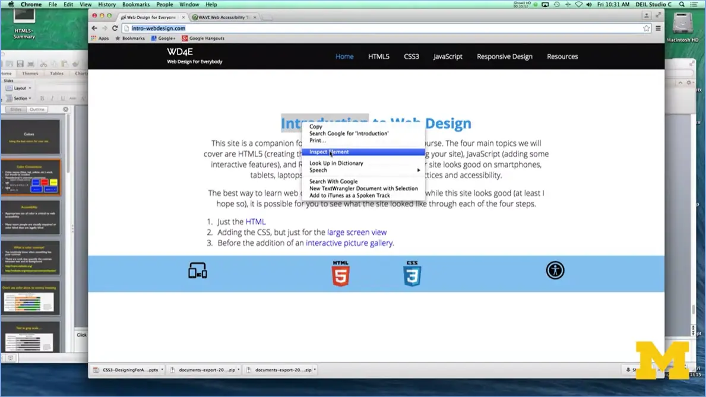I have my mouse, right here. I'm going to right-click, and I’m going to go down to Inspect Element. Now for some of you, this part may pop over to the side or underneath.
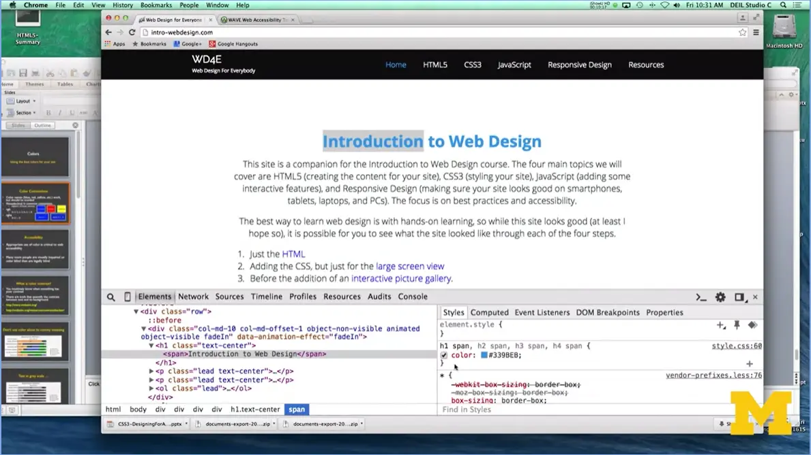You can move it around by clicking on this button over here. But as you can see, I'm going to highlight my h1 and go down here to the span.
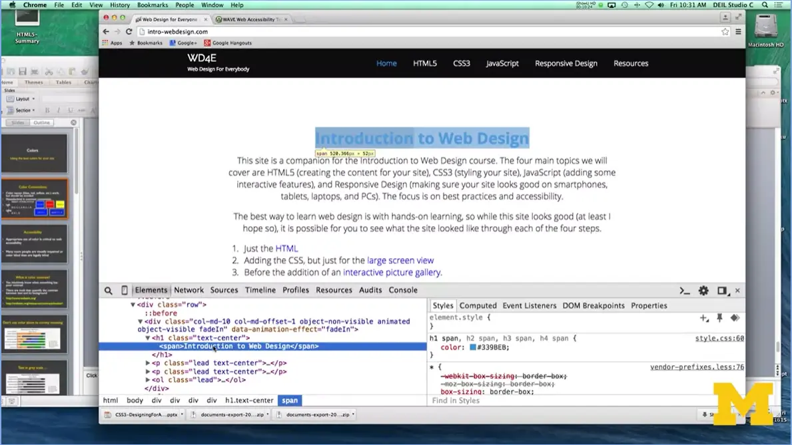And you can be like oh, there's the color I'm using.
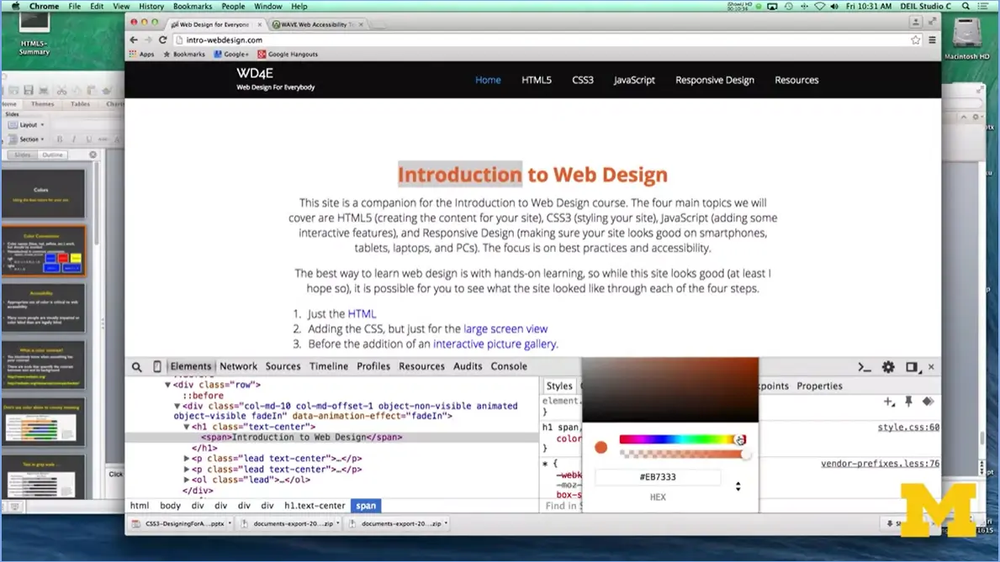I'm going to click on this, and as you can see I can actually in real time, play with which different colors I want. I like that one better than the blue and you can see that it is changing the hexadecimal value for me down there. If I wanted to, I could find the perfect color, this green is not the perfect color. I could find the perfect color, grab that hexadecimal value and put into my style sheet.
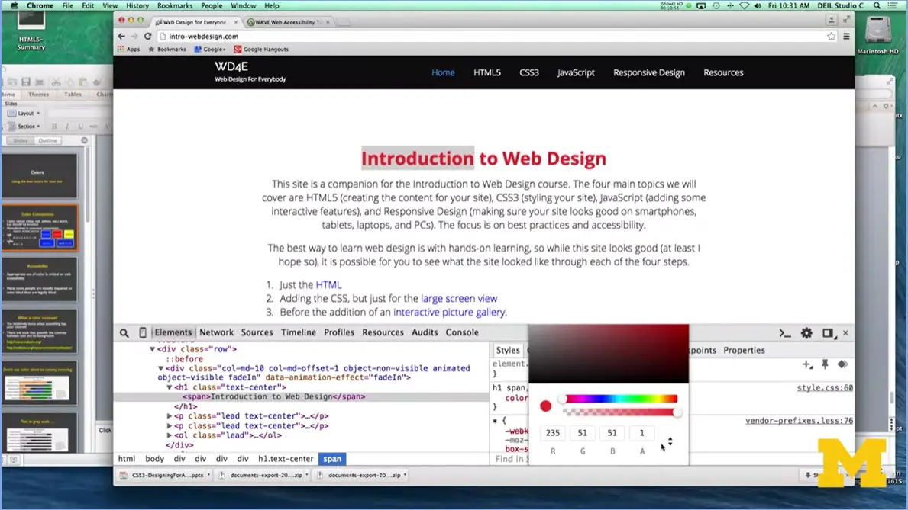They also give you the option of the RGBA value as well so you can do it either way you want. I love using expect element to play with the colors because it's so much easier when you can see what's happening as you're designing it.
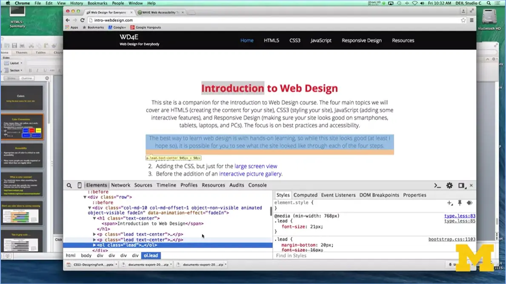If you want to check something else, I can even go down here, each thing as you highlight you can add colors, do different things along the same line. I wouldn't suggest this, but I'm going to add a background color.
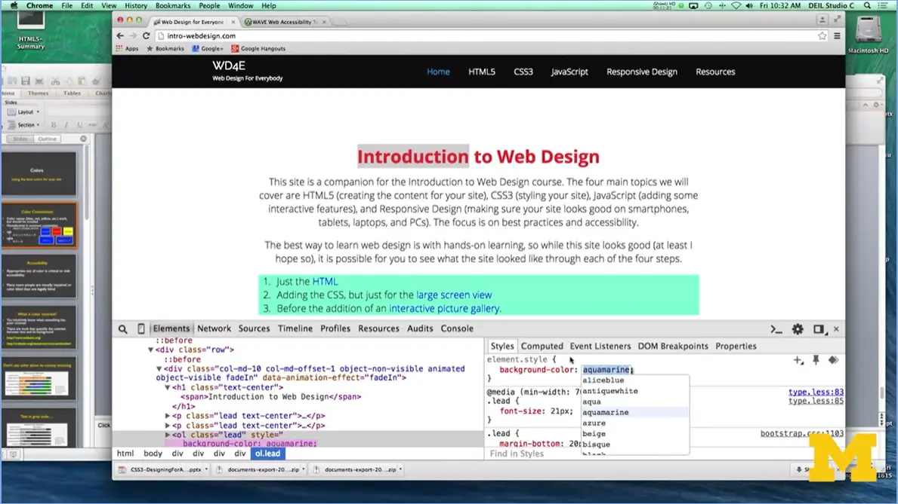And as you can see, they have the actual names. Because it's very unlikely that if you were to scroll through the different hexadecimal values you have any idea what it's talking about. And instead of actually using the word beige, once again I can click on that box. It'll pop up the hexadecimal value for me. This is where it can get really fun and really bad, because you can just start falling down this rabbit hole. And you're like, oh I like this color. No, this color's better. You're beginning, you're starting off, just pick a color, play with it, and keep going with it. But let's go back.

One of the things that happens when people are using color is there's this really natural tendency to want to use color to emphasize something, or explain how important something is. You may have seen when you filled out forms that it says make sure to fill out everything that's in red. Well, this can be a real problem when it comes to accessibility. And I want you to make sure that you're trying to think about the most appropriate way to use your color when you're designing your page.
And one of the things you need to think about is that it's not enough to think, someone can use the screen reader. I'm going to use HTML tags to really make sure that they can pick up the semantics from the page. No, there are a lot of people reviewing your site who aren't legally blind. Instead, they're visually impaired or they're just color blind. They're, many more people are color blind than you would ever really get. You want to make sure that when you're using your page, you're thinking about whether the colors are conveying meaning or just style.
Think about your color contrast and what color contrast it that when you look at a page is the text on a good color for the background? Most of us intuitively know when something has really poor color contrast. We're squinting at it. But to be honest, very few of us know what the really exact level is of where you need to go.
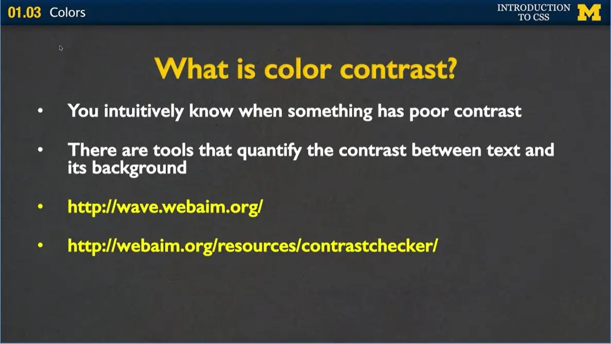What you can do is use different tools to help you quantify the contrast between text and its background color. I've put in two links here. The wave.waveaim.org, and the Wave contrast checker. And I'm going to show you just a quick example of how you can use these to check a page. I go over here, and I've got the wave.webbing.org. And you can type in any URL. I'm going to go ahead and put in my own personal web page from UMISH, which may change by the time this comes up.
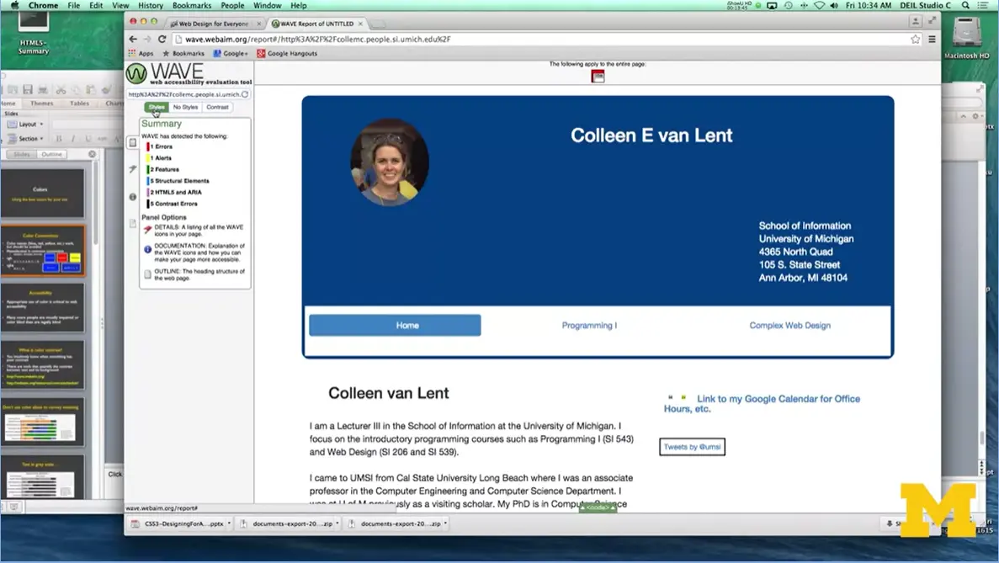And, as you can see, you can go over here and it'll check your styles, it'll check your different HTML.
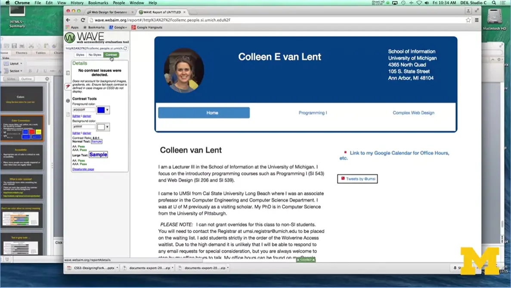But if you check where my mouse is, you can also check on the contrast. And it'll go in and it'll say, nope, this looks good. There were no color contrast issues detected. You'll be surprised how much, though, you will get examples. They can be extremely picky and if it's really something that you feel strongly that you can see, absolutely, stick with it. But you want to take their suggestions with a grain of salt.
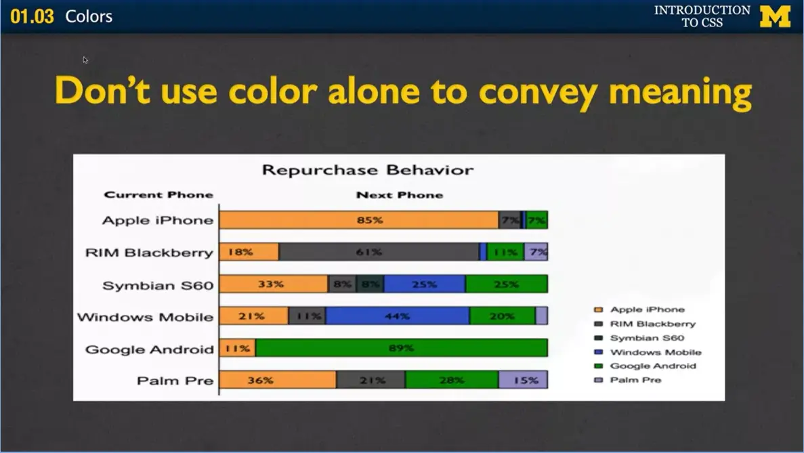The one thing I really wanted to talk to you about again, is just this whole idea of don’t use color alone to convey meaning. This is a typical bar graph for people to use colors to say, hey this is how much share is Apple iPhone, the Pre Palm, different things along that line.
Let's look at that same graph but in grayscale. And suddenly you can see it's pretty much useless to anybody who's really trying to pick out these parts in the middle where the colors are extremely similar. Instead, if you're going to use a graph like this, I'm not saying you can't, I'm saying make sure you're providing alternatives. Make sure you've got alternate text or you've got a caption or someplace else where people can link to get this information.
All right, I know I didn't talk a lot about the different colors that you can use, or the different colors that go together, again, because that's not really something I need to lecture you about. It's something that you can go off on your own and learn. What I did want you to understand is how those different color conventions work. How that you know you can use hexadecimal or RGB, RGBA, or even the words themselves, but you want to get away from that.
Finally, when you're done, when you've got your colors going, don't get too attached to them. Because you're going to be surprised at how often, when you check your site using a contrast checker, that what you thought looks really great really isn't something that's accessible to everybody. Have fun with the colors. Use inspect element. Everyone loves to play with these different design elements of your page. And I hope that you've learned something here that's useful as you continue programming, and keep styling your site.
Hi, in today's lecture, we're going to talk about styling your text on your webpages. One of the best and easiest ways to really make your page look a little bit different than the standard default is to think about how you might want to style your text to bring maximum impact. So many options and we're going to talk about some of them today.
One of those options is to think about basically your font. Some of the things you can style are the font family, the font style, the font variant and the font size. We can also think about styling the color and background of your font. We can talk about alignment as well. And finally, we're going to talk very briefly about line-height.
These are all four things that you can do to highlight or emphasize the different things you would like your style to bring about.
First let's talk about font family. Font families are just different types of text. If you've used Word before, you've gone in, and you can pick Arial or Wingdings or all these different types of fonts. You can do the same things on your webpage.
I've got a couple of examples up here for you of the more common. You have Helvetica, Courier, Courier New, Comic Sans, cursive or Verdana. I tried to put the font type here in the slide, but it might be hard for you to see. And I did that on purpose, because what looks obvious to you when you're designing doesn't always look obvious to the people who are looking at your page. I also picked these particular ones because I wanted to show you that some are a single word, such as Helvetica. But Comic Sans MS is multiple words, so I had to put it inside quotes.
How it works is, again, how you use your syntax rule. You have your selector, your property, and then your value. In this case I've said whenever you see an h1 heading, don't use the browser default heading, instead I want you to use the Arial font. It changes the font slightly to look like this example here.
Now every single browser doesn't support everything. We've seen this even with HTML 5. Some browsers support some text, some don't. In the same way some browsers support some fonts and others don't as well. What you can do is provide alternatives.
In this example, I've given the browser three different alternatives to use. I'm saying, whenever you come up to an h1 tag, I want you to use the Courier font. But if you don't have the Courier font, use the Impact font. If you don't have that one, use Arial. Now, one of questions you might ask yourself is, what if it doesn't have any three of these fonts? It doesn't have Courier, Impact, or Arial. Well, if you remember, when we first talked about cascading style sheets, we said if you give it a rule and it can't support it, it will always go back to the browser default. So, you don't need to worry about font disappearing because you gave it a bad font family. It'll always come through.
When you pick your font families, there's a few things you should think about. The first one is maybe the most important, is some fonts are much more user friendly than others. There are basically two categories. You have serif fonts and sans-serif fonts. The serif fonts are the ones that have the fancy edges along the side that you used when you were learning calligraphy. The sans-serif fonts are very clean, there's no drop downs. When it comes time for someone to blow your page up, and they want to make it look bigger. Serif fonts can really get messy, so avoid those whenever possible.
I personally don't use custom fonts myself, but I've never been an artsy type of person. If you do decide that you want to have your own font, or some sort of special web-safe custom font, you need to use something special here called a font-face rule.
What we do, is you can see in the first example, you say, hey, I'm going to define my own font-face. I'm going to happen to call it mySpecialFont. You can call it anything you want to call it, and then you need to give it a source. That source, this is a new one you haven't seen before. We're not using href, we're not using source, we're using url. And the url says this is where you can find the file that defines my special font. And once you do that, once you write the font face rule once, throughout the rest of your style sheet you can go ahead and reference it. Now every time I use an h1 font, you're going to use mySpecialFont.
Let's talk about font style. It's a much fancier word than you might expect, but we're simply talking about do you want your font to look normal, which is the default, or do you want it to be italic? Or do you want it to be oblique, which is basically just a special kind of italic. Normal font will happen no matter what if it's just how it's going to be. If someone else has written a style sheet and they've made it all italic, that's when you might want to say, no, I'm going to overwrite it and make it normal. Italic is always a certain kind of lean, basically, to your font. An oblique is when you really want to be extra special and define exactly what angle you want to have your text lean towards.
The font variant, we really only have two options here. We have normal and we have small-caps. People use this quite a bit when they're trying to do very consistent and yet somewhat fancy look to it. Here I've said again, always using h1, I want my font variant to be small-caps. Now when you look at my text, my h1 text down at the bottom, I've written <h1>Small caps variation.
But when the browser displays it, it's going to display it in small caps. This keeps you from having to go back and forth to remembering to change all your text to uppercase or lowercase. It doesn't matter how you write it; the browser will always show it in uppercase.
Now font size is something that we'll be talking about pretty much throughout this entire course and in other courses we're going to be doing as well, such as responsive design, because it's really a lot of different ways to do it. Let's just start with the most basic. Your options are, you can use font size equals extra-extra-small, extra-small, small, and smaller. I don't really like those very much, because it doesn't really give me a frame of reference.
You can have medium, you can have large, extra-large, xx-large, and larger. Very few people use these options, but they're out there so I wanted to tell you what they were. Instead, what many people use is they use pixels.
I'm going to include on the website this nice table for you that relates how many pixels to an inch, how many pixels to picos, so you can get a feel for it. But most people do something along the lines of 20 pixels, 35 pixels, 80 pixels. And this is a very consistent look and it's something that people can feel what it should look like. However, I tend to use percentages instead. Percentages are going to allow us to change the font size as we resize the screen much more easily. If you were to say use 100% it's going to be the default size. If you say use 110% it will be slightly larger. If you were to use 75%, it'd be three-quarters the size.
Next, let's talk about color and background color. The color attribute is the color of the foreground, which is the fancy word for just the text itself. The background-color is the color of the background behind the font that we're looking at. And depending on what kind of text you're styling; it can look very different.
Here I've done one rule, and you haven't seen this before. I'm going to style two different selectors. I'm going to style h1 and span. If you put a comma between the h1 and the span, you can put as many commas as you want, and write as many selectors as you want. In this case I've said, hey, I want my color to be blue, and I want my background color to be gray. And if you're not sure where these strange numbers came from, go watch the colors video. It'll explain everything for you there.
Now I've gone in, and in my HTML, I have colors in an h1 tag, and I have the word inline inside a span tag. And what I want you to notice is that for the h1, the block element, the background color covers the whole width of the page. But for span, for inline elements, the background color only goes around just the element and the text itself.
Next let's talk about aligning text. Aligning text is simple. It's probably one of the easiest things you can do in HTML. And you're going to be really happy. Because later when you decide you want to align other things, it's so hard and you're just going to want to put everything in text. Your options are when you use text align you can use left, which means just align the text to the left. That's what we do already. You can have right, which means align everything to the right, center, and justify. Center everything as much as you, along the middle of that division. Justify tries to spread it out to use as much space as possible.
Let me show you some examples because that's really the best way to understand what's going on here. Here I've got a left alignment. Everything lines up along the left-hand side of the screen.
The next one I've used text in line equals right. And you can see that everything is lined up to the right. It looks really weird. There are very few reasons you're going to use this. Unless you have something else going along in the side 7in the middle here.
The next one we're going to do is center. People use center quite a bit. They almost use it too much, but it is a nice way to break up your text and have it look a little bit different.
Justify is really hard to explain, and even when you first look at it, you might not notice what's going on. But with justify, the browser is putting in little bits of extra space to help you spread it out so it has the exact same width all the way along.
I'm going to show you the justified with the left. And I think that's the best way to see the difference, is that you basically don't have the empty space here. They've spread it out over here, so no one place has too much blank space.
Next, we're going to talk about line height, and line height is really different because it's not affecting the font itself. It's not affecting your text. It's affecting how much space is around your text. Some of you may have used Word before, and you can go and just how much space there is between the lines. Maybe you want it to be one line, one and a half lines, double spaced. That's what we're talking about here.
My first example I said line-height equal 50%. And the next one I said line-height equals 200%. In the first rule, that's a weird rule to write because I'm saying I want things to overlap with each other. In the second rule I'm saying I want you to really spread out far. I'm going to put an example later online where I can show you exactly how these things would look. Or even better, I'm just going to turn this into a teachable moment and have you go in there and type it yourself and look at how these two different rules affect the text.
Let's review. I know I went over a lot of things, and it can be overwhelming. One of the most important things is with everything we do in this course, is take five, ten minutes, type some stuff in, take a look and see what happens. Make as many mistakes as you can, because this is the time to make mistakes, when you've got me and the rest of the crowd here to answer the questions on the different boards.
Practice on toy problems. Don't make a huge webpage and try to style it. Create a page with three or four paragraphs, a couple links, and practice on those, because it doesn't matter, you don't need to practice on a big page, you can practice on the small problems and it really makes a big difference. And finally, if you decide that you're ready to code and you are ready to do that large project, make sure you design your larger projects on paper first. I can't stress enough that if you start coding and styling without really having a clear plan, you're just going to get very frustrated and hopefully, not hopefully, you'll get very frustrated and you'll quit. And I don't want you to do that.
Plan all your projects on paper first. If you follow these suggestions, if you practice, practice, if you do toy problems, if before you jump into big problems you sketch it out first, I think you're going to have a lot of fun, and you're going to have a really great page that you're going to be proud of.
One of the challenges of teaching about web design is that there are always multiple ways to demonstrate different concepts. For this course I am always going to choose the way that most closely illustrates our most recent lectures.
If you are an experienced web designer you may certainly prefer a different method, probably even a "better" method. But for now, I am going to stick to the most basic of properties. I encourage you to post in the discussion sections if you want to share alternate methods.
In the next module (1.5) I am going to walk you through some code. I hope you will take the time to play with this code or make your own version of the site. If you check the Resources tab you will find all of the code I use in this course. If you would like to find a direct link to this code though, you can find it at:
Un-styled code: http://codepen.io/ColleenEMc/pen/MaOrmE
Styled code: http://codepen.io/ColleenEMc/pen/MaOrmv
Hi, everybody, welcome back. One of the things I really want to stress in this Introduction to CSS course Is that there's this need to stop and practice and review what we've learned so far. I'm going to make sure that I include little things that I'm going to call Code Together.
If you're watching this right now, and you don't have your laptop next to you or whatever you're using to code, I really hope you'll stop, go get that, and code along together with me because just listening with me doesn't really give you the true experience you need to type it in and make mistakes as we go along together.
Okay, so let's begin. What I'm going to do in this module is I'm going to go back to an oldie but a goodie that we did in HTML five. And I want us to go in together and style it. Alright, let's start by making our CSS file. I'm going to go ahead and create a new one now, go up here to file, new file, or you can do command N.

And the first thing you want to do is you want to save this as a .CSS file, so then that way your editor knows to color things the way you want it to color. Now, whenever I'm designing pages, I keep all of my HTML files in one folder and my CSS files in another folder. And I really encourage you to do the same thing.
I'm going to go into my CSS folder. And I'm going to call it together-1.css. It's really important that you remember to put that file extension, or things aren't going to work.
All right, so here's my old, boring page. What people typically do is they style from the top of the page and work their way down. I want you to pick your own values, but let's together go ahead and style my header. Oops, wrong thing here.
And we can give it a background. I'm going to try B3B3B3. We can give it a larger font if you want. I'm going to say font size. Let's make it 150%. Just a little bit something different. I'm going to save this, and I always really encourage students to make small changes to their code and then check and see what happened. Let's see if we changed anything over here. And so now I'm going to reload it and see what happened, and if you notice, nothing happened. Well, the problem is I didn't link the style sheet correctly to the HTML file. Remember how I told you I always think put things in a folder called CSS? I need to include that. All right, come back. Reload.
Oh, hey! I’ve got a little bit of something going on there. All right? So, now let’s go ahead and just add a few more things. I know it doesn’t look exactly like my example. But one of the things I want to do next is, I want to go ahead and style, let's see, my header. Let's give the entire header a background color. All right. You can pick anything you like. And I'm going to pick background: I think I have 666666, all right. And let's go ahead and I really want to align that text. I'm going to call it text-align: center. Save, refresh.
The page is starting to look slightly different all the time. Now the one thing that's confusing me is it doesn't appear to like my background. Save it here. Refresh. There we go. Now these colors are really ugly and really hard for you to see. And I realize that. Let's go ahead and play with things to make this a little bit easier to see. Let's go ahead and put in.
Let's change the h1 so it's a different color and let's go ahead and change the navigation. So that we have, I'm going to change the font, let's try the font variant. I like the font variant. It lets you put things into uppercase, lowercase, different things like that. We also have font size. I'm still not happy with the size, so I'm going to make it 150%, and the last one I'm going to do is font family. Now if you recall, with font-family it's very customary to give it more than one value because not every browser supports every font-family. So, in my case, I'm going to go ahead and try putting in Arial, Times New Roman. If you have a font that's made up of multiple words, you need to put them inside the quotes. And then finally just Serif. Let's see what happened.

You can see I'm going to make it a little bit bigger, we're starting to get there. Let's go ahead and just style a few more things together, and then we'll go on and learn a little bit more. I would like to see you pick your own things for h2. So h2 I'm going to pick a different color, let's try same color 666666 and a different background. I'm going to use 00B7EA. So, does it matter? Does it matter whether I type it as EA uppercase, lowercase? It doesn't matter at all. The important thing is for you to usually be consistent so you don't mess yourself up as you're going back and forth. All right? We'll refresh again. All right.
It's starting to look much different. This isn't a lot of style. It's only one, two, three, four, five. Five rules and we already have a much different look. I'm going to go ahead and make the screen smaller because when I put in that font size 150%, it makes a big difference.
All right. One last thing I'd like you to try to do is go ahead and try to style the summary in the details. Because if I want to make just the details italic; I grew up in Ashtabula Ohio part, how can you make those italics but not the rest? If you remember what the HTML code looks like, let me show you a quick example, is that right down here I have my details tag and if you haven't seen it before, I put the word open in which means by default show it is open, so no one has to click on it. I've got my details. I've got my summary where the My Childhood part came up, and then I have all this part. If you want to make those italics, and only those, how do you do it?
What we're going to start with, is we are going to style the details tag. And I'm going to scroll up here a little bit so you guys can see a little better, hopefully. And what I'm going to say is I want to make everything italic, and the way you do that is you go and put in font-style: italic. Now this isn't going to be exactly what we wanted because what I've done is I've italicized everything. So now you want to go back and say, but you know what? I don't want the summary in italics. How you make it so it's not italics, by default most things aren't, you can actually put in the word normal. All right. That's it.
Now we've got this part in italics and this part in bold. For the most part we're finished but I am going to add one little thing, because it’s really common for people to style their header and their footer in a very similar manner. Let's go and add style my footer. And what I want to do is I want to give it the same background color that my header had. Background, one, two, three, four, five, six, boom. And there you go. What we've done now is we've gone from a very simple, basic HTML file and we've started adding just a little bit of color, a little bit of font size, a few different things like that.
Let me show you what the original file looked like again and we'll look at them next to each other. I'll comment out my style sheet. I'll open it up and you can see these are two very different looking pages. But they're exact same HTML. Okay great, these are the type of things you're going to need to do for the homework in this section. Practice here, come back and watch me, if it helps you out a little bit getting over humps. But the important thing is, code, code, code, good luck.
Hi, today we're going to be talking about Display and Visibility on Your Webpage. Now when it comes time to making your page, again and again I'm going to tell you that laying out where you want things to be is key to a really effective page.
And one of the things you need to remember is that every element we look at is basically a box. And the box model is something we're going to cover in a future lecture. But before we get to the specifics, I just want to talk about some details. Because how the display on your display element works affects all the neighboring elements on your page. Before we begin, I just want to remind you every element on your page is a box. Just think of it that way. And display is how you can decide whether the boxes should be next to each other, underneath each other, and different things like that.
When we talk about display, there's some common values that pretty much everyone uses or they're just a default so you've been using it without even knowing it. Elements that are inline will sit next to other elements, they take up just enough width and height and no more, when you're putting them on the page. I think of these as my good children in the minivan elements. It's fine if I want to put three kids in the backseat. They're not going to elbow each other, they're just fine. They're going to get along.
The other type of display is block. And what block does is it forces a line break in between your elements. Again, with my example, I've got one kid who really just can't sit next to anybody else. I have to put them in their own row. Even though she's really tiny and she doesn't take up that much space, she has a whole row all to herself when we're driving in the car.
What's nice about block elements is, while they take up all of the horizontal width and just enough height, you can go in and you can set a height and a width on those elements. Even though it's block, and you've reserved the whole width of the page, you can say, but I really only want it to be 40 pixels, or half the page, or something like that. With inline, it takes up just enough space, and you're not able to change that. You don't get to say, I want it to be bigger or smaller. If it's inline, that's all you get. With block you have a little bit more flexibility, but you do have the problem that you're reserving a lot of space. So of course, what we came up with is this idea of something that takes the best of both.
And this is inline-block. Elements that have display inline-block are going to be the same as inline and that they can be next to each other, but they'll also accept height and width. If you have two things that want to be next to each other, but you want to give them a lot of room, and right now they're inline. Well, go ahead, change it to inline-block, and then you can give it a height and a width. And if you have something that's block and you want two of them next to each, again, no problem. Change them to inline-block and you can set the width and height.
The fourth one which we don't really use as much is the idea of display none. And what happens here is if you have an element on your page and you give it display none, it's as if the browser completely ignores that it exists. It's as if it lifted it up and took it out of the page. These four, the inline, the block, the inline-block and the none are the ones that we're really going to start playing with at the beginning.
What I have right here is just a simple file that's going to have three span elements, three div elements and three paragraph elements. If you remember, span elements are inline, so they're only going to take up as much space as they need. But the divs and the paragraphs, those are block, so they're going to take up more space. On the side over here, what I've done is I've added a little bit of styling, which may or may not make sense when we first talk about it, but I gave each of my spans a height and a width. Basically, all my elements, a height and width and a different background color.
If we're to look at it right now. You would see that I've made all my spans green, all my divs blue, and all my paragraphs a pinkish purple color. And each one lays out exactly by default as how it would go. The reason the divs are as big as they are and the paragraphs are as big as they are is, again we put that in our style sheet.
You can see my height and my width. If I didn't include these by default, these divs and paragraphs would take up the whole width of the screen, and they'd be really small because they would only need enough space to have that text. Let's go ahead and play with this. Normally, I would go into my style sheet and I would put different things in, try different displays and different things like that. I'm hoping it'll be a little clearer for you if instead, I do this at the same time. So, you can follow along with me with what's inspect element, or you can go ahead and change the code in your file, save it, refresh, save it, refresh.
I got to inspect element over here by right-clicking, and what I'm going to do now is I'm going to right-click on one of these span elements. Inspect Element and it pops it up for me. Any element on your page, you can play with, you can either play with just that particular element you're poking on right there or I can say I want to play with all the spans. Let's look down here. Right now, I have a height and a width for each one of my span elements. But they're not actually very big. So how do we change that? If something's inline, but you want to give it a height and a width, we go down to display, and I'm going to go here.
And I'm going to try inline-block. Boom, right away my spans have taken on those properties. So before when they were inline, they were small. When they're inline block, I can shape them really nicely.
And if I'm changing them to just block, you can see now they're on top of each other because block elements don't like to be next to each other. The final property I'm going to show you right here is this idea of none. When you have none, it's as if the spans didn't even exist. You didn't save any space for them, it's not as if you would even know looking at the page that they were ever there. Kind of interesting thing to do and you might use it later if you want things to appear some times and not others but you don't want to leave a big white space.
Go ahead and take a second and I'm just going to click on a few of the other things. For instance, my divs, I can go and I can say, you know what, I want to make just this one div, I want to make it inline-block, and let's see what happens. Well, the odd thing is I changed it and nothing actually happened and I'm wondering if you know why. When you have inline-block, you're saying oh, go ahead and put me next to other people if I fit.
If your neighbors are also block, it's not going to work. Now, instead of changing just one, I'm going to change all the divs. And you can see that, oh, because they're about 45%, two of them fit next together but the last one doesn't. There's really no good way to feel comfortable with display until you take this code and start switching things around.
What happens if it's inline? What happens if it's inline-block? What happens if it's span? And pay really close attention to the fact that it's not enough to know what the display is for the one element you're working on, you also need to know the display for its neighbors. But, let's go ahead and talk a little bit more.
When we're talking about display, it's pretty common to also talk about two other properties as well. And these are called float and clear. And what float and clear do is they don't necessarily say where you want the page to be, the element on your page to be specifically, but where you generally want to put it. By default, when the browser is putting things on the page, it starts in the upper left-hand corner. And it just starts putting them in, so looking at your site, it'd be like first thing, first thing, oh, the next one is block so I better put it underneath. And it just keeps adding things in. If your browser's really big, you can fit more span elements next to each other, if it's small, you can fit less.
Well float lets you actually reposition things, and it says hey I want you to float this anywhere, and if I say float right, I want you to put it as far to the right as you can. If I say float left, I want you to put it as far left as you can. The other elements are basically aware of one another, and when you use float, they won't overlap but things are going to look a little bit crazy. And when you add float again, you're affecting your neighbors because your neighbors need to know where you're going. Which is why we have this additional property called clear.
Sometimes when you're coding, you want to just make sure that things aren't floating to your left or your right. You want that space all to yourself, in which case you can use clear left, clear right, or clear both. Clear left to make sure there's nothing floating to you on the left. Clear right means there's nothing floating to you on the right. And clear both, well as you can guess, it means nothing should be floating next to you at all.
Let's go ahead and take another look at one more example where I'm going to play with that same code but I'm going to start using float and clear as well. We're going to look at the same exact file we were just looking at when I was playing with display block, inline, none, etc. But now, we're going to throw float and clear into the mix as well.
Here is the code we're looking at, and here's the website. And the first thing I'm going to do is I'm going to play with the spans up here and I'm going to try floating them. Remember, when you float something, you're basically saying put it as far over to the side as you can and the other elements are almost going to act as if they're not there but they're not going to overlap it. I'm going to go down here, go to my float. Say float.
Now, the first thing I'm going to do is I'm just going to float it to the left, which means they're not really going to move too much. What I want you to look for is that right now, there's a little bit of space between each one of my spans. When I change it to left, that space goes away and the div actually goes underneath it as well, because the spans are on top. Now when I try changing it and floating it right.
When I float it right, I want you to notice that not only do they not have space in between them, that they're right next to each other again. But if you look, the order of the A, B, and C is different. Because the first elements it's placed on the page is span A and so it moves it as far to the right as it can. And then when it's doing span B, it's moving as far to the right as it can, and span C as well. This is kind of something interesting, and you can see that if they were to the left, the divs would overlap them.
All right, so let's go ahead and do a few more of these things. And I'm going to do a change all my divs, so that they are also. Let's go here, float left. By now the page is looking crazy because things are going all over the place and you really, you probably don't want it to look this way. Particularly if we wanted all of our paragraphs to really be at the bottom of the page. I'm going to go up here to my paragraphs.
I'm going to say, I'm not going to float these. Instead, I'm going to say I'm done with floating, please stop floating things around me. And I am going to clear both sides. The paragraphs are now saying, get me away from all this floating craziness. I just want to be down here. Floating, clearing, different things like this.
When we do these really simple code examples in the lecture, they're not always going to make as much sense as when you're putting them in as part of something bigger. But the problem is I can't show you examples of something bigger because you'd all fall asleep about three or four minutes into the code. So go ahead, do what we've always been doing and just play with these a little bit until you get the idea of what they do. As time goes on, you'll start to figure out when you want them to actually do these kinds of actions.

One of the things you may have noticed as you've been going through other code is that sometimes when you mess with the height and the width of an element. You find out that it no longer is big enough to hold all the text that you wanted to show.
What can you do when the content doesn't fit any longer inside the box that you've made with your height and width? You can use a property overflow to determine how people are going to be able to access that content, or if they're even going to be able to access it at all.
The four values for overflow, include visible, which basically means if you've drawn a box. And there's a whole bunch of text inside of it, the text is actually going to go outside the box. No matter what, the content is visible even if it goes outside the lines.
Hidden does pretty much the opposite. It says, if you have something inside this box and it's too big, it's gone. You can't see it. Now this isn't a great idea, because it's going to cause problems if the user increases the font size on their browser. If you've made some sort of 600 by 800-pixel box, and you think, oh this'll be great, no problem. Anyone will be able to read this. What's going to happen if someone goes in and increases the font size? Your box doesn't get any bigger, but the text does, so they might not be able to see the content.
A third option is to give overflow scroll. And what this will do is it will actually give a horizontal and vertical scrollbar to the element. Even if it's just a paragraph, all of a sudden, your paragraph has a scrollbar so people can see everything that's in it.
The final value is auto, and what it does is it says, oh, I'm only going to add scrollbars as needed. Depending on how the person's viewing the site right now. I'm going to go ahead and list some resources to show you some examples of how overflow looks. But for right now, we're going to go ahead and keep moving on.
Because what I wanted to share with you is this idea of other display values. Again, browsers are always changing. HTML5 and future versions are always changing and they're trying to add new support. The problem is when you see these new cool tools they don't always work on every browser. So inline, inline block, block and none will work everywhere.
But here are a few more that are slowly beginning to gain acceptance. And those are table, grid and flexbox. For grid and flexbox, I'm going to leave it to you to kind of play with it. But I did want to show you an example of where a lot of my students find the table display really helpful.
How a table display works is that you don't make an actual table with your HTML code, nor do you have the tag table. But you're telling your browser that you want to structure it as if it is a table. You would make any type of containing element display:table. And then anything that you want to line up in nice columns, you would use display:table-cell. This sounds very confusing so I wanted to make sure I gave you an example to go through with me. I have here a div, a couple divs with some paragraphs in it. And what I wanted to do was I wanted to make sure that they didn't have all the exact same content.
As you can see, each of the divs is now next to each other because we've told it we don't want them to be underneath each other. But this really isn't what you were hoping for it to look like.

Let's go ahead and try adding that float left. Save, I'm going to go ahead over here and refresh. And you can see, it does look a little bit better. This is great because we wanted everything to be next to each other. But what I'm going to do now is I'm going to show you something that doesn't work out really well. And that is this idea of when I resize it.
Now you can see this idea of that the overflow might be really important because now things are going outside the divs themselves. Plus, I really don't have any type of margin between them. Let's go ahead and add overflow, Hidden, or scroll, just to show you what I was talking about there for a second. I'm going to go ahead and refresh it. And now you can see that everything is contained within the content box, and I can actually go in here and I can scroll each and every one of these. I'm actually not a huge fan of this, because I don't like that people would need to know that they can scroll.
We're going to try something new here, instead what I'm going to do is set the width to 30%, and I'm going to go ahead and use the inline-block. And let's take a look at what this looks like now. I need to remember, I'm using a new style sheet, so I need to go in and change my HTML so I'm using that style sheet. The number of times when I was coming up with these examples for you where I forgot to change the style sheet, or I forgot and named it wrong was really embarrassing. I'm hoping you'll avoid those same problems I had. Over here I'm going to refresh it. You can see this is not the look that we are hoping for. It resizes, but it's just not doing what we want because each one has its own particular height because we really want it to just fit that.
This is where table cell comes in. I'm going to change my display from inline block to table cell. And for once, when I go to hit refresh, I'm going to actually know why this doesn't work. But I want to show you, when I hit refresh, it looks actually okay right here because it's made it so that it all works out. Now depending on what browser you're on, this may not work. Because what you really want to say is, if I'm going to go ahead and make this used table cell, don't forget to go into your body and say display.
All right and I'm going to refresh and it's going to look the same, it's just going to be a better coding style. Now, I'm going to try to put a lot of examples of coding in here, in this CSS course, so you can play with it. But I can't stress enough that, sometimes it's not going to work exactly the same for you, because you might be using a different browser. You might be using the same browser, but a different version. The most important thing is for you to go in there, and keep trying these new values, seeing what happens and playing with it. When it comes time for your final project, that's when to be really specific about making sure that everything looks good on every browser.
The last thing I want to mention very quickly was this idea of visibility. And it specifies whether or not an element is going to be seen by a user. Now we talked about this earlier when I talked about display none but what goes on visibility is you can actually see that space was left for it. There's just nothing there.
When you use visibility, the options are visible, hidden or collapsed if you're using tables. If you see this and you're wondering what the difference is between display and visibility. Just remember that with displaying none the browser acts as if it's not even there. You don't see anything. With visibility hidden, the browser is going to leave the space that that element would take up, it just doesn't show it.
So finally, let's go ahead and review. Display is just one tool of the many we're going to use for positioning the elements on your page. Early design, deciding what you want your page to look like before you start coding, is going to make things easier. Don't code thinking I want to use float right design, and then decide oh, I'm going to have to use float right here.
Utilize all the different tools we have, such as inspect element, to see your different options. And it's going to make your coding life so much easier. We want to avoid save refresh, save refresh. Instead, use those tools and you'll find that you're making really good decisions in your design and your code. Thanks.
When you write code, it is important to get into the good habits of organizing your code. While there are no specific rules about how and where to place your code, there are definitely conventions. (Conventions are suggestions that most programmers follow. This way other programmers can quickly and easily understand their code.)
The most common organization is to have one main folder with your html files in it. There are also subfolders (folders inside the main folder) for your CSS files and image files. (In this example I also have JavaScript files.)
When we use CodePen we use that idea of separating our code. However, be aware that CodePen doesn't require many of the things you should have in your code. For instance, in the HTML files it ignores all of the information in the <head> section. If you develop in CodePen, make sure to test your code later using the proper folder/file structure. You will need to include links to the style sheets and images.
It can be very frustrating at first to master folder. However, understanding folder structures will help you, even if you never code again.
I am going to end with a screen shot of my computer.
My css folder is in the SAME directory as my html files.
My link will be:
<link rel="stylesheet" href="css/style.css">
It is important that you even use the proper case. Because on some computers it matters and this would not work:
<link rel="stylesheet" href="CSS/style.css">
This homework is also described in a video lecture. Make sure to watch it to get a better feel for what I am looking for.
In this assignment I have created a three-page website about a game called Ultimate, or Ultimate Frisbee. We are going to use this site for all three assignments in this course. You can view the “before” site by visiting https://intro-webdesign.com/CSS/assignment-1/index.html and clicking on the Home, Teams, and History links. You can see the styled pages here: (Obviously I can't give you a link, otherwise you could see my style sheet!!)
You will need to get the code to get started. You can do ONE OF THESE TWO THINGS:
https://intro-webdesign.com/CSS/assignment-1.zip or from Course Resources. (When you click on this link it will automatically download the a zip file. Mac extracts the files automatically, if you are running Windows you will need to extract them with extra software.) When you peer grade, you can put the CSS code directly into the css folder. Make sure to save a copy of your code so you don't lose it!!
I have included a video showing examples of each of these styles.
Hi everybody welcome back. It's time for us to start coding. One of the things I've noticed over the past couple years of teaching is that students really differ in the way that they jump in and handle different types of coding classes. Some will sit down at the computer, never read the book and just hack, and hack, and hack. Some of you may be a little bit guilty of doing all the readings, listening to all lectures, but never actually trying out any of the things we've talked about. So that's what this homework is for. A chance for you to finally go through and put down some of this code and see what goes on when you try to apply styling to your HTML.
The objective for this homework assignment is for you to show me that you can write one CSS file that can go and style three different HTML files.
Here are shortcuts to some examples of our before and after for this assignment.
http://www.intro-webdesign.com/CSS/assignment-1/index.html
http://www.intro-webdesign.com/CSS/assignment-1/index.jpg
http://www.intro-webdesign.com/CSS/assignment-1/teams.html
http://www.intro-webdesign.com/CSS/assignment-1/teams.jpg
http://www.intro-webdesign.com/CSS/assignment-1/history.html
http://www.intro-webdesign.com/CSS/assignment-1/history.jpg
I've put the links here above, but it's really going to be much clearer when I show you the homework in action. Let's take a look at it.
When we start, I'm going to give you three HTML files that are really not well styled. They start off, they have a navigation, they have three very large pictures, some are smaller. And then they have the content. All three pages that you'll look at, home, teams, and history have different content.
What I want you to do is write your own CSS rules that will take these types of pages, and turn it into something that looks like this (above). Now, I know this isn't a huge jump, but this is exactly how I want you to start coding. I want you to make small, incremental changes that can take you from something that's hard to read to something that's much easier to read. Let's go ahead and step through the different things that you'll need to change in order to achieve this separate look.
The most important thing to understand is that you must leave the HTML alone. I don't want you to change it at all, instead I only want you to style things and edit things within the style sheet. And the things that you're going to need to add are styles for the header, the headings, the section, the links and the images. Let me go through and show you exactly what you need to look at.
For your header, it's pretty straightforward. I want you to go in and I want you to add a background color.
For your headings, both h1 and h2, I want you to change the font color. Now remember, this is different from the background color. It's the color that the text shows up in. Next, I want you to make sure that all the headings are displayed in capital letters. So, if you go back, we'll take a quick look. You can see that watch your head and ultimate frisbee are in capital letters, while in the original HTML version, they're in lower case. So, I want you to use CSS to make that change.
The next thing I want you to do is just for the h1 heading I want you to center the text.
Next make one quick change to the section part of your HTML. I want you to style the different section so it has a different background color from the other elements in your page.
Next, let's take a look at the links. The changes you're going to make here are very subtle. They're not very obvious if I didn't specifically tell you what you're looking for. And what I want you to do is I want you to change the background color, and the font color, for your links. After you've done that, go in and center the text, similar to the way that you're going to the center the texts for the h1 headings.
Finally, the last thing that really messes up our HTML page initial example is these huge pictures that just get in the way. For now, since we haven't talked about the best way to style images, I want you to remove them from the page. But remember, this might be the trickiest part of the whole assignment because I don't want you to change the html. I want those pictures to be there. I just want you to use CSS3 to remove them from the page.
I hope between looking through this example and looking online, and looking at my before and after shots, that you'll be able to do this homework assignment.
When you're done, we're going to be using peer grading. When we do this, grades are going to be based on basically how well you were able to finish what we were doing. When I talk about aesthetics, I'm talking about did you pick pretty background colors and font colors. We don't really care about this.
This is our first homework assignment. I really just want you to feel only success. However, proper standards do apply. And what I mean by that is don't use color names, use hexadecimal or RGB, and don't put all your rules on one line. Make sure your CSS style sheet is easy to read. Other than the styles that I listed please don't change other things for right now. It makes it much harder to grade. But don't worry. As we go through this course you will have the chance to put in your own unique looks as your styling elements. For right now all I can say is good luck and make sure you go on those discussion boards if you have any questions.
Here is a link to the CodePen repository for the Week Two code. You can play with the code to test the different concepts.
http://codepen.io/collection/DVYVpB/
Here is a list of the lectures this week 2 that use CodePen, and the name of each file that they use:
Hi. Today we're going to talk about the box model. And what the box model is, is really a general concept of CSS that helps you size and place your element where you want them to go.
One of the first things we're going to talk about is height and width. I know I've already used this a little bit in some of my other lectures, but I wanted to be very specific in how it works. And one of the first things you need to know is that the height and width of any inline element is the content itself. So, if you have a link, the height and width of that link is just the text of the clickable part of the link.
Elements that are not inline, things that are block, inline block, things like that, they can take height and width properties, and we saw this in the Display lecture. Any time you have something that's inline, if you give it a height and a width, the browser just ignores it. Anything else, the browser goes great, I can go ahead and change that for you.
Some of the other things we want to think about then, when we have elements, is how they fit on the screen. One of the easiest ways for you to strategically place things on your page is to put borders around them. Even if you don't want those borders later in your final product, I find it's very helpful to have this idea of how much space an element is taking up. Any element can have a border around it whether its inline, or block, or inline block.
And those border properties specify what style border you want, what width of border and what color. They're pretty straightforward.
The border style is the only one that must be specified. If you don't specify a color, or you don't specify a width, no problem. It'll default to black and probably one pixel. But you have to decide what kind of style you want.
In this case, I've said, for all my divs, I want them to have a solid one pixel border around them, and I can't tell you what color that is, because I'm not quite that geeky yet, but I'd guess something like blue.
The border style that you want to specify, while most people always use solid, there's a lot of different styles. You can use dotted, dashed, grooved, ridged, hidden, inset, outset. There are a lot of different things you can do, and it’s really kind of a stylistic difference on your part. I don't really pay much attention to them because I've always just used solid myself. Once you've decided what kind of style you want, you can specify the width and color.
When it comes time to set the width, if you decide to, is you can set it in a number of pixels or you can use the key words, thin, medium, or large.
When it comes time to do the color, you can do the same thing we've been doing all along. You can just use the name, such as blue, the RGB value, the hex value, or just so you know, it's also transparent. It can just take the color of whatever's underneath it.
When it comes time for you to specify how big you want your border to go, you can specify in four different ways.
In the first example, you just give it one number. In this case, three pixels. And what it's going to do, is it's going to put a 3 pixel border around the entire element just like this. If you decide to give it two values, is it's going to set a 3 pixel border on the top and the bottom, and a ten pixel border on the left and the right. This is a really common way to set things up when you're doing borders and other properties, because it's a really nice shorthand that's still very simple to understand and read.
If you give it three values, it's a little bit trickier, and I always stumble over what it is, so I'm going to pop the picture up just to make sure. The first value is always the top. You want your top border to be 3 pixels. The 10 pixels is for the left and right, and the 20 pixels is for the bottom. The last one is when you give four values, and when you give four values, that basically means top, right, bottom, left. And that's going to set the border to four different values.
Most people either use the one value, the four values, and a few people use the two values as well. Mostly, and one of the reasons I show this to you is, it can be really intimidating, and you're wondering what people are doing when they're going on. This is what they're doing. They're using shorthand’s so that they don't have to have border right, border left, border top, border bottom.
Margin is basically that space that's outside of your border. It's between, when I say you and your neighbor, or what I should really say is between the element, and the element's neighbor. It gives you that elbow room where you don't want anybody touching you. With margins, whenever you give it a positive margin, you're basically saying, move your element to the right or down. If you give it a negative margin, you're actually having it move closer to the neighbor. You are having it move left or upward.
Padding is very similar in concept to margin, but instead this space is between the element and its border. It's giving it a little bit of extra space inside. You might almost think of it as squishing the text in some cases. In the same way, whenever you have positive values for padding, you're moving it outward from the element. You're giving it more space. If you give it a negative padding, you're actually moving the border close to or maybe even on top of the elements that are next to it.
With margin and padding, all you're going to do is give a numerical value. You're going to give it something like 3 pixels or 10%. You don't give it any type of color. It's always going to be transparent. The padding is always going to be the same color as the element, and the margin's always going to be the same color of the parent, probably the body of the page.
They, just like the border, can be defined in that one to four values. If you put margin three pixels, it will be a three-pixel margin around everything. If you say padding, ten pixels, five pixels, you'll have top, bottom, left and right.
So let me show you a quick picture of what I'm talking about. In this case, here is my text is my actual element. I've said this is what I want to go on. The blue is the border around my element. The yellow is the padding. It's that space between my text and the border, and that orange is the margin, and what you're saying is, don't put me near anything else. Give me this much space around myself. So, it might move your paragraphs down. It might move your divs down and over. So, just practice this. And as you play with it more and more, it'll make more sense which one's a margin and which one is the padding.
One of the things you need to understand when you're doing padding and border and margin, and all these things is that in HTML says, your height and your width is additive. What that means is if you decide that you want the width of your element to be 200 pixels, you probably need to take into account how big all those other aspects and properties are.
So, in this case, part of the width is the margin, plus the border, plus the padding, plus the actual element width itself. And so, it all really adds up to get what we consider the actual width of your element. And this is going to matter when you're looking at your page and you're designing it and trying to decide how much space you want each element to take up.
If we look at this example right here where I have the width is 100px, the padding is 10px, the margin is 5px and the border is 1px. I'm hoping that right now, you're doing the math in your head, and I promise not to give much more math than this, but you're doing it to figure out how much width does this element, does this div, actually need on the page.
And in this case the width is 132 pixels. The 100, plus 10, plus five, plus one, plus one, plus five, plus ten. It all adds up.
The height, in the same way, is your height plus the top and bottom padding, top and bottom margin, and the top and bottom border.
All right, so when we talk about margin, I just wanted to throw this slide in even though it doesn't mesh with a lot of the other things we've been necessary talking about. But it's because margin is very important for when you want to center elements on a page.
When we want to center text, we could just use text align center, and everything looked really good. But when you want to center elements, it's a little bit more difficult. And so, the default way to do this is to use the command margin zero auto. If you remember, that first zero, that stands for top and bottom, and so it's going to not really care about that. The auto is what puts it left and right. Now this is only going to work if the element happens to be display:block, if the element is not floating, is the element has a width that's not auto, which means that you set it. And this last one is if the element is not fixed or absolute position.
Now I haven't covered position yet. And so, the good news is, since I haven't covered it, you probably haven't messed with it, and you don't have to worry about these two things. But as you try to send your elements, come back to this slide if you need to, and check these off to make sure that all these properties fit. And that's the best way to center things right now.
Finally, when we talk about this, I want to add one more option, and that's called box-sizing. And what box-sizing does is it takes some of the math out of that additive height and additive width. What your options are is you can have content-box, so box-sizing content-box, and that's just your default additive. You're going to have to remember how much space you're using.
The next one is called border-box. And border-box actually takes the width, the content, the padding, and the border all into consideration. So, if you say you want the width to be 200 pixels, it's not going to actually make the element 200 pixels. It's going to make it 200 pixels minus the padding and border. One of the last things to remember is that we'll take into account padding and border, it won't take into account margin.
So finally, one of the things I'm going to be showing you in this example in just a second, is different ways you can set the height and width of different elements. And there's two common ways to do this.
The first one is called absolute, and that's when you set an element to a specific size. You say I want it to be so many pixels, or so many millimeters, or so many centimeters. Pixels is a very common way to set sizes. The other type of measurement is what I call fluid, and it sets the size relative to surrounding elements or the parent elements. You can use things such as percent. You can use vw, which stands for viewport width, vh which stands for viewport height. You can even use things such as em and rem, which aren't commonly used, but they actually set the size relative to its parents.
Let's go ahead and move to my example so we can play with this just a little bit. It's not going to be enough to demonstrate everything that we can do, but hopefully it'll get you started. What I have here is a very simple HTML file where I have a left side and right side. But as you can see, they're not to the left and the right now. They're just on top of each other. The first thing I want to know is, can you put these divs next to each other? We're going to have to use a kind of combination of display, and height, and width, and padding. Let's go ahead and do that.
The code I am about to play with here is boxModel.html and boxModel.css. Make sure you play with this code and try to get it to do what I am about to do.
Over here in my CSS file (to the right), right away you can see this background things I've done. Now, when you want things to be next to each other, you have to give them a width, because right now they take up 100%. One option would be for you set it to some sort of pixels. And say maybe 200 pixels and 200 pixels, and see what would happen, see if it works out.
The problem with doing that, as I uncomment my code here, is that as people go on different browser sizes, your numbers might be too big or too small. What I've done here is I went ahead and I set my width to 48%.
Now doing that is really great, and I'm going to come out of this one line for just a second, because most people get that idea that you want to set the width to something smaller. What they forget, is that even though they're only taking up 48%, in fact I'll even just make it something really small.
20%, they're not going next to each other. You need to remember that you want to use those fluid measurements. Let's go back here, I'm going to put it back to 40%. Even if you make it really skinny, until you tell the browser, oh, I know this is blocked but I'm going to change it to in-line block, it'll never let block elements be next to each other. That's why you have to remember to do both of those elements. Let's go ahead and save and reload.

You can see that I've done my width. I've done my display block. I've got my padding. I've got my border, and I've got some margin. The last thing I'm going to do, just to end this up to show you what's going on. Let’s change this to 50%, because this is a really common mistake people make. They say oh, I want two things next to each other. I'm going to make them each 50%. Don't forget when you do that, it doesn't work because that's 50% before you put the border into account. Make sure that you're playing with all these things, that you're playing with the margin, you're playing with the padding, you're playing with the border. Because that's how you're going to get things to work, by tweaking, tweaking, tweaking.
When it comes time for you to start implementing all these ideas, your box model with your padding, content, margin, etc., you really want to design sketches on paper first, because it's really hard to shove things in after you've already come up with an outline, all right? Design first, code second.
The second thing you might want to do is use the box model to reduce the complexity of your code. Or at least the complexity of your math trying to figure out what things fit where. Finally, no matter what you do, you need to remember that margin always has to be considered. It can be tricky when you first start trying to put your page together, and getting things to go exactly where you want them to go, and we haven't even talked about positioning yet, which would be even another element.
For right now, practice these things in small ways. Use Inspect Element to play with it and not have to change your code so much. Until you get things looking just the way you want them to look. And don't worry, we're all making mistakes. We're all doing this together. But I think your page is hopefully getting closer and closer to something that you would really want to put out on the web. Good job.
In the next module (2.2) I am going to walk you through some code. I hope you will take the time to play with this code or make your own version of the site. If you check the Resources tab you will find all of the code I use in this course. If you would like to find a direct link to this code though, you can find it at:
Unstyled code: http://codepen.io/ColleenEMc/pen/yYPppz
Styled code: http://codepen.io/ColleenEMc/pen/WQXddR
Hi, everybody, welcome back. Once again, I'm going to ask you to stop learning and start coding and practicing. And we're going to use the same example we used in our first coding break.
I wanted to show you what our old page was, right here. And see how we can change it into something that looks a little bit more like our new page over here, where we've been implementing some of our margins, paddings, and widths and heights. All right, so let's go ahead and get started.
The first thing I want to do is use the exact same style sheet I used for the first one. There's absolutely no need to recreate your style sheet when you can either just use this one and amend it, or if you'd like, use two style sheets. I'm going to use just one. And the first thing I'm going to fix is the fact that I made what you might call a mistake in my earlier version. I have two rules styling h1. That's not a problem. The browser will apply all these styles. But what I really meant to do was I meant to style the body tag.
So, let's take a look at what it looks like right now. And let's go back to our current version. And there we go. That already looks a little bit better than what we used to have. All right, so now that I'm on a good starting place for when I start, let's talk about the different things we can style in our page, all right?
One of the first things I want to do is I want to add a little bit of margin to my page. If you look over here, there's not much space between the edge of the page and the actual browser. I want to add just a little bit. You can add a little bit, you can add a lot. In fact, while we code today, I'm going to add a lot, just so you can see the effects. How do you do that? How do you add that space between the element and its neighbors? You go in and we're going to add a margin. And, like I said, I think I’m going to make it a little bit more pronounced than in the code I showed right there. I’m going to go ahead and make it 4%. When we do this, I’m going to go back to the page. I’m going to reload. And you can see everything is moved in, all right? Margin just adds a little space and makes it more visually appealing to your users, all right?
Let's think of some other things that we want to do. Clearly, I probably want to add a little bit of space between my links and the bottom of the text. This is a little bit different. I'm not saying to separate the elements, I'm saying I need more space between my border and the element itself. In that case, what we want to use isn't margin, we want to modify the padding. Let's go in and see where we think we would do that. All right, so I need to add padding inside the whole header. I'm going to change it to, padding, again you can pick anything you want. You can use pixels, you can use percents. I'm just going to put in pixels. And I'm going to say please add 15 pixels of space between the border and the bottom. Make sure I save.
And refresh, and you can see I've added padding all the way around the entire thing. If I really only wanted padding to be on the bottom, I could have said padding bottom, or padding right, or padding left. All right, let's go ahead and style something else.
One of the big things I changed is that instead of having one underneath each other, I've changed these so they're next to each other. Remember, by default, sections are block, they're display block, which means don't let anyone else come next to me. In order to change it so they're next to each other, we can either use inline or inline-block. Almost always when given this choice, you're going to use inline, because when you use inline-block, you can include a height and a width.
All right, go back to my CSS file. I don't want to change the header. I think I'm pretty good with h1. The nav, the h2, oh, you know what? I don't have anything that I can change here, so let's go ahead and put in a new tag. Section, all right, I want all three of these sections next to each other. What I could do is I could pick maybe 400 pixels each. Well, that would mean that the browser has to be at least 1,200 pixels. I could pick 150 pixels each. Well, that means they're going to be really skinny even if they don't need to be. Let's use percentages. I'm going to use 30%, not 33%, because I want to give a little bit of elbow room for paddings, margins, borders, etc.
All right, let's go ahead and look at it right now, I want to see what it looks like. You can see I've made it 30%, but they're still not next to each other. That's because they're still block.
Let's change them to inline-block, Display. And let's hope for the best. There we go. I've got all three things next to each other. Still not looking exactly the way we want, but it's step by step. It's making this little bit of progress at a time. I'm going to go ahead and fix this fact that they aren't all lined up at the top.
And I'm going to say float: left; refresh and we're getting closer, we're getting closer, but there's something still a little bit wrong here. First, they're squished. I don't like them all squished together. So how do you separate different elements from each other? How do you add a little bit of space between elements? All right, if we were in class, I'd have that one student that's like ooh, ooh, I know, yes, it's margin.
Let's say margin-right. And I will make it something small like 2%. All right, we're getting closer. We're getting closer. Still not quite what we wanted, but this is how it works. You add a little bit. You adjust. You add a little bit. So, one of the big problems here is that when you float things to the left, or when you float things, once you're done floating when you don't want those next elements to float. You actually have to go in and say, oh, but I don't want to float this part. Once we're done with these three sections, we don't want the footer to also be have them next to them.
Let's go in and adjust the footer code. Down here. All right, if you remember if you don't want things to float next to you, we're going to use clear: both, which means don't let anything float on either side of me. Oh, much better, right? It looks much, much better. And other than the fact that I've got weird colors, we're very close to right here. I actually like the gray on the header and the footer so I'm going to leave it.
But what I do want to do, is I want to make that picture smaller. This little icon right here, let's make it look a little more like this. And that's very simple for the approach we're going to use right now. Let's go ahead. I'm going to add an image. And I'm going to go ahead and just hard code it right now. So, I'm going to make it 75 pixels. Oops, going to have to say width:75px. Let's take a look at how we did. Yeah, that looks okay. If I didn't like it and I wanted to play with it, I wouldn't go in here and try 100 and then 80 and then 52.
What I would do is I'd go in here and do Inspect Element again. And I would, oh, make this much bigger because otherwise everything looks really crazy. And I would go into the image and I'd say, okay what does it look like if instead I make it 150 pixels? Does that look better?
Or what if I make it 125 pixels? Do I like that? Pick a value you like, and once you find something that looks good to you, copy that value into the style sheet. Because if I refresh it right now, my inspect element values go away. All right, let's go in here, fix it, save it, and refresh.
All right, so this is great, these are the types of things I want you doing in this class. I want you grabbing an HTML file and saying ooh, can I change this around? What can I do to make it different? Clearly, this page we've created right here isn't a finished product. It's not exactly how you'd want it to be out there on the web.
We're going to keep learning new things and we're going to keep styling things in different ways. And as you keep practicing, your confidence and your ability is really going to grow. And that's what I want. I want your confidence to be very, very high by the end of week four that you can do this. So good luck.
Today we're going to talk about styling links and styling lists. When it comes time to style the links on your page, it's really important that you remember links are what make up a website. It's that interconnectivity that helps people gain knowledge. It's what helps search engines help link your text and content to somebody else's text and content.
Today we're going to talk specifically about links because I want you to think about how you're styling. In general, when you go to style a link you can use all the same different attributes that you've been using for everything else. Your headers, your paragraphs, things like that. However, links do have one special additional property called text-decoration.
In this example right here, what I have going on is that instead of having my links be inline, which means they go next to each other, I'm going to say, hey, I want my links to be separated, one on top of each other. Hopefully, most of this code looks familiar to you. You have this idea that the display is block, it'll go underneath each other. The font-weight, I want it to be a little bit bold. I've set a new color and a new background color.
Now I've set a width, and, if you try to set a width and it doesn't work, just remember, links by default are inline and they don't take a width unless you change them to block or inline block. I also am going to align the text, add some padding, and this text decoration, none, this is new. This says, hey, I want to get rid of that underline that usually shows up underneath links.
I've gone from this up here in the top corner to something that a little bit more styled down here at the bottom. In fact, it almost doesn't even look like a link at all. Let's talk about that.
Sometimes when installing their links, people really try to make it look much more like buttons. And we want to avoid that because we want to be semantic. If you want a button, use a button element instead.
And you can do that very simply by just putting in the button tag instead of the anchor tag. And again, in the same way you can style it in many different ways. But what I want you to understand is there are so many different things you can do with links and so much styling you can do with them, make sure that people understand that it's a link that they're looking at. Or, if they're using a screen reader, it's a link they're hearing about.
Another new thing about links, that we haven't seen before, is this idea that links have states. Have you ever noticed that, when you go to a web page, sometimes some of the links are blue, and some of them are purple? And, you realize, after a little bit, the ones that are purple, they're there because you have visited them, before.
What we have, are we have these different states. And I'm going to go over them very quickly and later, when we talk about what are called pseudo classes, we'll talk about them even more. But quickly, an ‘a’ with this colon right here link simply says this is just a normal link, you've seen it before, a:visited says here's a link and my browser tells me. It knows that I've clicked on it before. By browser default, it will be a different color. We also have a link with the hover activity over it. You've probably seen that when you hold your mouse over something, kind of like I'm holding the pen over here. Is that it'll do something crazy. Maybe it'll change the color or different things like that. Hover is activated by holding your mouse over a link. Which brings up an interesting question of does this work on touch screens?
When you're developing your page, you need to remember that hover isn't necessarily going to work if people are accessing it on a phone or a tablet. Which brings me to another state called focus. The focus state is what happens when somebody is tabbing through your page. As they hit tab it's going to jump from element to element. And when it gets to this particular link, it's going to know I'm in focus, so if you want to do something different, maybe the same thing you do when people hover, this is how you can trigger that activity.
The last one is the one I really think is the weirdest one of all, I would maybe even call it dumb, but I didn't create the Internet and HTML and I respect, but it's really weird, because what this one says is hey, this is the link just as I'm clicking it. And the reason I think that's weird is because for most of us, when we click on a link, we're going to a new page so we're not even going to see what styling happened. All right? Let's go ahead and talk about how we do these. But before I do, once again we are coming back to this idea of precedence. Cascading style sheets are very big on this.
If you decide that you want to use these different states, there are a couple of rules you need to remember when you're writing your style sheets. One, if you're going to use a:hover and a:visited must come after a:link. And next, a:visited must come after a:hover. It's just this hierarchy that's going on while you're coating your pages.
Let's look at an example now of some code and how I'm styling my links. In this example, what I have here is I just have three links that I haven't styled in any way. I've got a link to introduction to web design, a link to the University of Michigan, and a link to Kent State University, which is where I did my undergrad.
But what happens when I add some CSS to it? Up here on the top I have all the typical things we've been talking about before, the width and the color. I've added the text decoration, and what I also wanted to add is this idea of margin where I can center each of my links one on top of each other with a little bit of space in between them. All right, so let's take a look at what that looks like and you can see I have each links looks really much different, okay.
And you can see when I see my pen, when I hover over each one of these, what happens is the color changes. How I got that to work is right over here. Whenever my link goes into a hover state, it knows to change the background color and the font color. Okay, well what is a:focus, and what I've got down here a little bit, a:active? What's going on here is that I've put in the a:focus for those people that are tabbing through my page. As you tab, you can see Introduction to Web Design goes into focus, and then the University of Michigan, and then Kent State, and I'm doing that by tabbing through the page.

The last rule, the active rule, is something that I'm going to show you and then break off from there. How the active works is that when you're actually clicking on a page, it's going to add a border around that link. Now, the odd thing is that as soon as I'm done clicking, we're going to go to a new page. It breaks off, you don't really get to see that border unless I hold it down very deliberately. In this example, I tried to show you the two different ways that you can style links. Now let's go on and think about this in a little bit more detail.
When you style these links, once again I can't stress enough the importance of accessibility, we want to make sure that your links are links and that people know that they're there. Once you're done playing around with links, let's go ahead and start thinking about styling list items.
When you style lists, the default properties they all look the same. You've got the one, two, three or the circle, circle, circle, but we can change all that, we can change things beyond the font and the margin to look at the style that your lists are taking on.
Some of the things we can look at are your list-style-type, your list-style-image. The list style position, and just the list style itself. The list style type basically says how do you want me to indicate the different list items?
By default, for ordered lists again, we have the one, two, three, but you can give different values.
You can say I want it to be lower roman numeral, upper roman numeral, lower alpha numeric, you can play with these to get the feel you want. In this case we've gone from 1 and 2 to A and B. And if instead I had done lower alpha, we'd have had lowercase a and lowercase b.
When you do list-style-type for unordered lists, typically what you have, and it depends on your browser, is the little circle or the little disk. We can change that, and we can put in exactly what you want to make sure it's going to be.
Another option that you can play with is this idea of getting rid of those default markers altogether, and instead, using a custom image instead of that traditional marker. And when you do this, it brings up back to this idea of the list-style position. Many times, you're going to move your position over, depending on which list-style you're using.
Up here I've got an example of where I'm saying I want my list style image. I've got square first, this says, hey, if you can't find the picture go ahead and use square, otherwise I want you to use this picture.
Let's look at another example. In the file list.html, what I put in here are two different types of lists, an unordered list and an ordered list. And I just kind of filled them in with some different information. And when you look at this screen, which
I'm going to make a little bit bigger for you here, if I can. You can see that the unordered lists are just using the circles, and the ordered lists are using the default numbers. Let's play with this now.
Let's go ahead and put in a style sheet. In my style sheet, I've gone in there said, what I want to do with my list styles is I want to switch it to upper-roman and numeral and also use a square instead.
This is what it looked like before (left), and this is what we look like afterwards (right). You can see, there's just a little bit more something to it. And, this is a very simple way to change your page up from how other people typically do their page.
One other option I just wanted to show you, because everyone really likes this, is that idea of using the list style image. I'm going to go down here and uncomment this code out. And if you remember, if you've been paying attention to this idea that when you have precedence this new rule down here is going to overwrite all the rules above it. Let's make sure I've saved my page, and reload.
And now in this case what's happened is that we've removed those regular markers and I've put my little lightning bolt inside. Doing things like this are not difficult, but to be honest it takes a little bit of time, especially if you're using images, to make sure you've got everything written exactly the same way. Typos are really the killer. It's not a matter of it being difficult, it's a matter about you just being very careful when you're doing these things.
Okay, so let's go ahead and review what we've been talking about so far. And not just in this lecture, but in the course as far we've gotten today. And what I want to emphasize is that until now, we've been styling tags, and these tags can always just take these property value pairs and you can transform your page into something really great.
We're about to go into something new and a little bit different. We're going to talk about pseudo-classes and IDs and selectors. And I want to make sure that you're comfortable building these different rules on your own before you progress. Now being comfortable does not mean that you're perfect. It doesn't mean that you know how to do everything. What it does mean is that you are confident enough to go out and start using some of the tools that are out there to improve your site. I'm listing two of them right here just because they're both very well known in the case of the Chris Pederick site, or I personally just found them really helpful.
Another option is you can go out there and do a web search for developer tools. You're not the first, and you're not going to be the last person to run into problems when you're styling your page. My overall hope would be that you would really go on to the forums in the Coursera course or in whatever classroom you're in and ask your fellow students for help. Because really, the only way to learn is to practice, practice, run into problems, get some help and keep going. As you do more and more web design, I'm hoping that you're gaining the confidence to help make something really cool that you're going to proud of. So, stick in there. Thanks.
Hi, today we're going to be talking about advanced selectors. Up until this point, when we've been writing our rules, we've been writing our rules for a specific type of tag. We've been saying h1 or p or h2. We've just focused on one thing that covers all the different elements of that type. But what if you don't want to style all of the links, just some of them? Or you don't want to style all of your lists, you just want to style some of them?

Well, now we're going to talk about these types of advanced selectors that will let us do just that. CSS is going to give you so many options that in this lecture I'm going to try to cover as many as I can, but it's still going to be up to you to go off and look up some more on your own as you need them. Let's start with the CSS selectors that follow the DOM. If you remember the document object model is how the browser breaks up your page into a tree-like structure. In this way, the browser actually knows if a paragraph comes directly after an h1 tag or if two paragraphs are siblings in the same section. We're going to utilize that to style just certain parts of your page. So descendant selectors are a way to say, hey, if you're inside a nav tag, I want you to style all the links that are inside the nav tag. Instead of doing all of them, just those ones.
If you want to be even more specific, you can use the child selectors. This rule is very similar, except it says, all the “a” links need to be what we call direct descendants of the nav link. If you have a paragraph in there and you have some links in there, ignore that. They need to be directly underneath each other.
The final one is adjacent sibling. That’s not one I actually use very much in my own coding, but I wanted to let you know what it is because there’s a really good chance you’ll see it if you’re looking at other people’s code. How the adjacent sibling works is that the elements must be what we call the same level and follow each other. If you have a section that has an h1 and then an ordered list, they would be siblings. If you had an h1 and then some other things and that ordered list was inside a paragraph, it wouldn't work that way.
Next, we're going to talk about what we call id selectors. ids are used to identify a single element in the DOM. The way ids work is that you would go in, and you would, in your HTML, say something along the lines of id equals header, or id equals footer is one they used to use a lot. Then in your style sheet, using the pound symbol, you can identify which ones that you want to style.
Right now, there's a small movement, but it's growing a little bit, to move out of the use of id from CSS. They're saying there's really no point in using that because a lot of people just really use this id for JavaScript and things like that. But again, this is something you're going to be seeing a lot, so I want to introduce you to it.
Let's see an example really quickly here just on the screen of how it works. In my HTML, I would go ahead and put in my source, my alt tag, but also id="mainLogo". Then, in my style sheet, using the # symbol along with the id name, the browser's going to know, oh, whenever I see one of those images, I want to make sure I add this border and this margin.
Class selectors are similar to ids, but the difference is, that classes can apply to a range of elements, not just one particular element in the DOM. Think of thumbnail images or the social icon medias. It's this idea that, you know what, I want to be able to style a big group of things all in the same way, but I don't want to necessarily style all of them that way. You don't want all of your images to be thumbnails, but you want a lot of them to be.
You would write this code in a very similar manner. Over here in my HTML, I have class="thumb", class="thumb", class="thumb". And in my CSS, instead of using the #, you need to make sure you use the period or dot, along with the class name, and then you can give it any rules. And this way, the page is going to go through and know that in addition to any styling you just put on images, you also want this styling for the thumbnails.
Just to try to help you make it a little bit clearer, what's the difference between using classes and ids? Well first, you want to make sure you know the syntax. The period is for classes, and the pound is for ids. You can't mess up on this, because the browser will not fix it for you if you put the wrong thing in front of your class or id name.
You want to remember that classes can be used multiple times. It makes sense in your HTML code to see class="thumb", class="thumb", class="thumb" because it's not supposed to be a specific part of the page. With ids, it should be unique, you should only see id equals, for instance, header, which we're not even using once. You should only see id="main section" once.
So again, let's think of images and navigation bars. It's very common that you want to format numerous, but not all the images the same way. And you would use classes for that. Where you might use an id is, I'm sure that you've been at some places where on the webpage, you see the navigation bar, and the page that you're currently on is styled just slightly differently. And that makes sense because you can only be at one page at a time, and that's why you might choose to use the id. Let's go through a quick example using that navigation bar.
Here's a sample HTML file, where all I've done is put in four links that don't even really go anywhere. I've commented out the style sheet just so you can see what it would look like without any styling.
You can see, I've got my Home, Interests, Resume, Hobbies, and I have one additional link down here that I very badly called here. Let’s try adding a little bit of styling using these advanced selectors. Go over here. You can see that I've used the child element of, actually, just kind of the descendant of, hey, all the links that are in the navigation bar, I want to style differently, I want to give them a different background color, a different width, things like that. In addition, anything that's class current, I want to make even different than any other link or anything else we've seen that way. Let's uncomment the style sheet. Save it.
Go from this to this. You can see that only the links that are inside my navigation bar are styled. This one was left the same. And the one where I have class="current" does look different from the others. It's really simple to use these things, you just need to know about them.
As your pages get more advanced, you're going to want to narrow the scope of some of the rules. We only want to apply them to certain things.
And one of the notations you can use for that is the dot. In your style sheet, you would actually have p.main. This means go and find all the paragraphs that are using the class main. Or you might have header img.special. This would mean find all the images that have image classical special that belong in the header. It's just a way for you to reduce what's being styled. On the same hand, you can also, what we call, expand the scope. Let's say that there's some sort of styling you want to apply to both the header and the footer, or to the sections and the articles. Not a problem.
What you do is you write the element, and you include a comma right there to let it know. Just as a quick review. And this is something from much earlier. You need to think about what happens when there are multiple rules for the same selector. You might have this one up here with the paragraph where it has certain qualities it wants to share between paragraphs h1, the id main, and the class special. But later, if you want to have additional styling for a paragraph, as long as you put that somewhere below, it's going to override and combine with anything that's higher up. Unless a rule has the exclamation point important after it, it always just uses the last one it saw, along with the earlier ones that don't conflict.
In addition to the element selectors and the different DOM relationship selectors, we also have a few more that I want to talk about briefly. The first one is the universal selector, which is the star or the Shift eight on your keyboard. What this one does is, it'll apply your styling to every single element on the page. It's absolutely crazy. I'm not going to do it. I'm going to let you do it, but go ahead and put in a star, and then the style, maybe border, around every element. It affects everything on your page. Sometimes, it's nice for debugging.
The next one you might want to think about using are what we call attribute selectors. Instead of going on the tags, you go on the attributes that go inside the tags. In this case, it would want to style every link where you have href="info.html", and I'll do a quick example of that in just a second. But before I do that, I wanted to mention two more that we'll be looking at later, which are pseudo-classes and pseudo-elements. Just another level of distinguishing just certain things you want to style on your page. But first, let's go ahead and look at using these attribute selectors.
The way that attribute selectors work is that they search the DOM for elements that have the attribute that you are looking for. For instance, you might want to look at all the images that use gif files or all the images that have empty alt text or maybe all the links that go to government sites or non-profit sites or educational sites. It's really easy for us to find those and go ahead and style them a little differently.
How we do that is we use operators to match the different parts of the alt text that you're looking for. Up here, in what we call the caret, it's going to match the beginning. In this case, it would match all those links that start with http://umich, and it doesn't matter how it ends. The next one with the dollar sign is going to match the end exactly. It's going to find every file that ends in .webp. We also have the wildcard, where you're going and saying if you see umich in any part of any hyper reference at all, apply this rule.
What we're going to look at is we're going to look at a file that has different links and each one has a different type of extension that we want to style differently.
All right. What I have here is just a list of links. There's no classes. Nothing special about these, that goes to different university sites, organizations, government sites, and if you take a look, by default, it's just going to show up as your traditional blue links with underlined, the text right there.
But what I want to do is I want to go in and say, you know what, all the ones that end in .org? Make them one color. All the ones that are .edu, another color, and all the ones that end in .gov, a third color. Let's see what it looks like.
Here, you can see that without me having to put in any information inside the tags themselves, the browser has colored them the proper color. Okay, I've just covered a lot of stuff in a very short section. You need to realize that these ideas are going to merge together. You're going to be using classes, you're going to be using ids, you're going to be using attributes.
And the important thing I want you to know is that when you are adding all these things together, the order that you write classes and different ids in your text doesn't matter. It doesn't matter whether you have special early dark or dark early special. What really matters is the order that you write your rules in your style sheet. Browsers are always going to start at the top, and apply each rule.
Now the good news from this lecture is that I want you to realize that with the power of classes and ids and this cascading style sheet is that this means you can use style sheets from other people to style your code. And you can just add a class that changes the one little attribute that maybe you didn't like about it. You can override these style sheets and make it your very own. Just make sure that you link your style sheet last.
All right, we've covered a lot, and I'm hoping I didn't overwhelm you with the video. I just want you to remember that when we do type selectors and the things that I'm going to have you do in this class is that we usually are adding them to narrow the scope of where rules are applied. We don't want to style everything. We only want to style certain things.
An id is used to specify a specific element in a page, and classes are used to associate elements that really tend to have the similar look. As we go on, I know I'm going to have some code-with-me examples. I hope you'll stop, get out your laptop, and code with me to get an idea of how powerful these different things can be. Thanks.
http://learn.shayhowe.com/advanced-html-css/complex-selectors/
As you have probably picked up by now, I love my Sublime editor. It does lots of great things for me, but sometimes it offers suggestions that I didn't really mean to use. One common example is that I often unintentionally switch between using background and background-color. Does this make a difference?
For the most part no. The background property can take a number of different values. Think about the border example we did in the Box Model lecture. This code;
border: 1px solid black;
is shorthand for;
border-width: 1px;
border-color: black;
border-style: solid;
So, when I switch back-and-forth between background and background-color I am doing the same sort of thing...using the shorthand. What other things can go in the background property? Here is an example:
background: #00ff00 url("imgs/ocean.jpg") no-repeat fixed center;
This rule sets:
Today we're going to talk about browser capabilities and what you can do to make sure that your sites have a consistent appearance, regardless of how people are accessing it.
Even though HTML5 has really been pushing the browser developers to all come to this consistent implementation, they really differ in display and adherence to the new tags that are coming out. And as browsers update and change and new browsers come out, you're going to have to keep in mind that not everybody is looking at your page the same way that you are. It's your responsibility to make sure that your page works for a wide audience. And while we've been talking a lot about accessibility, and different ways to access the web, it even comes down to the most basic browser implementations.
First, let's talk about handling these stylistic differences. The easiest way to eliminate browser differences is for you to make something called a default style sheet. And in that style sheet, you would actually go in and wipe out any of the browser defaults for the different elements that are styled. When you go in and you make it you would take, P, H1, H2, all the headings, all the different semantic tags and you would go in and you would say, I want them to have padding of zero and margin of zero. Even my list items shouldn't have any decoration at all. While this will ensure that you have a very consistent look, I have to admit it's going to make you page look absolutely horrible. But that's the price you'll pay so that when you start writing your own styling rules, you can improve and inevitably improve and your page is going to look better and better. Otherwise, if you don't use what we call this default style sheet, you're going to design your page, and it's going to be really hard for you to remember if you've actually checked off each element that you're using.
One of the other things we want to talk about is handling what we call unsupported properties. So first, we know that all browsers don't support all the HTML5 tags. You've seen this already, in some of the coding you've done with me.
In the same way, not all the browsers support all the CSS3 properties. There are some properties that look really cool on some browsers, but they aren't handled by default in other browsers.
But there is a way around that in many cases. And what this is, is that the browsers are offering prefixes. Sometimes they call them browser prefixes, sometimes vendor prefixes, but the important thing is that it's a really quick fix for handling all the unsupported options that you might come across. Now, when I first saw browser prefixes, I was completely intimidated. I didn't know what was going on, and it looked a little weird, and I was feeling lazy and I didn't want to deal with it. But I'm here to tell you, it's actually very, very easy to use these prefixes.
Let's take a look at what I'm talking about. You've been using different properties and the browser's hopefully just been working. But now, for some of those properties, you're going to want and add a prefix or a little bit in front of it, such as webkit, moz, ms, or o for Opera. Each one of these prefixes say, hey, if you're on this particular browser, this is what I need you to do to get the look that the designer is going for.
What are some of these properties that are often unsupported? They include column-count, which is a way to add multiple columns into your paragraphs or divs. It's a really nice way to break up your text that's responsive. If somebody resizes the page, the paragraphs actually resize.
We have another thing called border-radius, which people really love to use because it adds a little rounded edge to the borders of your elements.
A third option would be gradient. And gradient is a very cool background color that lets color go from one shade of blue to maybe gray or red or anything like that. And it gives it a different appearance. Now there's no way for you to really know which properties are supported and which ones aren't.
I have this link here to a site called caniuse.com. And what caniuse.com does is it lists the different properties and it tells you which browsers support them and which ones need the prefixes. It's a good idea to check that site out as you start developing your page.
But for now, let's go ahead and look at an example. In this example, I have a file called prefixes.html. And I just want to show you quickly what it looks like on both Chrome over here, and also on Safari. They look pretty similar. But there are little spaces where the font might not match exactly, or some of the spacing might not match exactly. If I wanted to get rid of that, if I really wanted to make sure that the pages look exactly the same, what I can do is add a default style sheet.
Let's go down over here, and I'm going to say hey I want to use my default style sheet. And what that looks like is it's a really crazy file where I've listed all the different elements. And then after that, put in things like, I don't want any padding, I don't want any margin. If I've got lists, get rid of the list style. Make this really as ugly as you can.
If I go back over here, you might not see a huge difference because the browsers are already pretty plain, but you can see things move over slightly. We get rid of a little bit of stuff. And in the same way, when I refresh the Safari, they're going to look a little bit more similar.
Now, let's go ahead and look at that example where some of the properties aren't supported. And I'm going to go back over to my HTML file, and I'm going to say, hey, I want to use my style sheet to go ahead and style some things that aren't always supported. And the things that I'm talking about specifically is, we're going to start with this idea of column-count. How column-count and column-gap work is you tell the browser how many columns you want and how much space you want between those columns.
Now, when I refresh, you can see it's gone from being all one long kind of block paragraph to that everything's split up. And it's really cool because it's dynamic.

If I re-size the browser, everything kind of moves around. And this is a really cool thing way to do it. One of the other things I'd like to add just as something to look at, is this idea of instead of having a square, I want to round the edges a little bit.
You do that by adding in what's called the border-radius. Now I'm going to stop before I refresh the page, because I want to point something out to you in case you're as intimidated as I was when I first started doing this. The border-radius is just a simple property that's been around for a while.
And you can see it right here, and you give it a value. Same with column-count and column-gap. This whole idea of adding prefixes just means, take your regular property and slap these prefixes on it. You don't need to learn anything new; you just need to remember the prefix names. I want you to really try to embrace this, and realize you're not doing anything too spectacular. I've made it 25. And I'm going to go ahead and refresh it.
And as you can see, I've curved the different edges around the side. The last thing I'm going to do is add a gradient to the color. Right now, I'm a consistent blue color. And it's important that no matter what you give a background color, that you would like to be used, is the case the gradient isn't happening.
Now for linear gradient, you're giving two colors that you'd like to be seeing at the beginning and the end. I have regular blue. And now when I refresh, I go from a blue to a light grey. I want to remind you that when you're developing, don't try to memorize things. Don't try to remember how to do everything.
I'm going to right-click on here, and do Inspect Element. Because if you decide later that's too much of a curve, or you don't like that color, what you don't want to do is type, save, refresh, type, save, refresh. It gets really annoying.
Instead, I'm going to go right here to my section and I'm going to look, and you can see in Inspect Element that it said I didn't use the moz prefix, and I didn't use the Opera prefix, because I didn't need to. I'm Chrome. What I can do is come down here to the border-radius and change it. Instead of 25 pixels, if I want less of a curve, I can make it 5 pixels.
You can see it happening in real time. If you want to make it look crazy, you can make it 50 pixels. You can also use percents if you like. So put in 15%. You may play with these things dynamically and once you get a value that you really like, copy and paste it into your CSS file. Browser prefixes are something to play with that can be fun. But also, it can be frustrating.
But the most important thing is that you should realize it's very straightforward. One of the things that you might do as you're adding prefixes is that realize, for right now, the easiest thing for you to do is add those prefixes by hand. Put in the property that you want to put in, say border-radius. And then go in and add webkit, moz, the different things like that.
When you start using prefixes, what you're going to do is you're going to add them by hand. If you know that you have border-radius, you're going to go ahead and do border-radius and then add that moz, the webkit, different things like that by hand.
As you become more experienced and maybe you want to try different things, there are ways to automate the addition of those prefixes. If you're using an editor such as Sublime, you can actually put little packages on there where you can control whether or not you want Sublime to add on those packages whenever they see different properties.
You can also use outside programs that will dynamically change your code as people load it to only put in the prefixes that they need. If you remember in my example, even though I was using Chrome, my style sheet still had all the different prefixes. This would automatically only add the ones you need. Again, these are kind of cool, but let's not worry about them right now. For now, let's focus on the basics.
To review, when you start coding, when you start making style sheets, you're going to want to think about using a default style sheet to remove those stylistic differences. And when you do that, I need you to think about some things.
First, should that default style sheet be internal or external? And hopefully you all said external. Because if it's internal, it's going to override all the other things you've worked so hard to do. In that same way, when you put a link to your default style sheet, make sure it's first. Because the way browsers work is it goes style sheet, style sheet, style sheet. If you put yours first and then the default style sheet, it's going to overwrite everything cool that you've done so far.
Finally, remember that browser prefixes can help remove some of those differences caused by unsupported options. But you don't want to overuse it. Don't slap a prefix on every single property just because you're not sure. Instead, you want to go to those sites like canIuse.com and test it out and really make an educated guess as to whether or not you want to use it.
You're really getting far in this whole web development idea. And hopefully you're styling some really cool pages. And I want you to be able to use all the different properties that are out there. Don't be intimidated by the idea that you might have to use style sheets that you haven't written or that you have to use browser prefixes. You've totally got this and I know that you can code using these different tools. Good luck.
Things with browsers are always changing, updating etc. It makes recording videos a dangerous decision, since almost anything I say may be outdated, or will be outdated soon. For instance, in the video you just watched, I used the prefixes for border-radius, but I am fairly certain that it is supported by most of the browsers now. I even went to caniuse.com to check it out.
But when I checked on column-count it showed that the prefixes are still needed.
And I didn't even talk about prefixes for the new Microsoft browser, Edge. Right now, if a property is standard there will be no need for any prefixes in Edge. If you are going to use experimental features, use the -ms prefix.
Don't forget, you never know which version of a browser someone may be using. Hopefully you want to share your work with as many people as possible. Plan on your page working on a few iterations back of any browser
In the next section (2.6) I am going to walk you through some code. I hope you will take the time to play with this code or make your own version of the site. If you check the Resources tab you will find all of the code I use in this course. If you would like to find a direct link to this code though, you can find it at:
Unstyled code: http://codepen.io/ColleenEMc/pen/QjOaVg
Styled code: http://codepen.io/ColleenEMc/pen/jbaYvL
Welcome back, everybody. It's time for us to stop learning new things and put into practice the things that we've been talking about in the last week. What we're going to do is add some of the new components that we've been working on. But we're going to do it together as we code along, so again I'm going to stress that I really hope you stop, put down whatever else you're doing, whip up your laptop or whatever you're coding on, and code with me rather than just watching what I'm doing.

When we last were coding together, hopefully you created something that looks like this screen up here. We've gone in and we'd used width and different displays, padding and margin and we were making our page a little bit better.
Today, we're going to go a step further and add some different elements such as gradient, instead of having three equal width sections we're going to have some sections take up half the page, some take up the full page, little things like this. And we're going to be utilizing these new selectors that we've been studying. Let's begin.
The first thing that I want to do is put in that linear gradient or that new color that goes in both the header and the footer. When I go to my style sheet, and I'm going to come up here. One of the first things I want to do is I want to put in that we need a new background for the header and footer. I've started off by putting in a background color. You always want to do that, because if you don't, if for some reason the browser can't handle linear gradient, you've given it a fallback.
Then, I've had my linear gradient rule in each of the different webkits. Once I add that and I hit save, we can refresh the page and see if we have that kind of gray to blue color we were looking for. Hey, great, we did. Now, when I wrote this rule, you might remember that I put header, footer and that means it's supposed to apply to both of these elements. But it only applied to the header. We need to think about why that happened.
The reason is if we scroll down, you can see that further down in the page I have said, I want my footer background to be this particular color. This overwrites any earlier rules, so I'm going to go in here.
And I'm going to delete this, and say, let's get rid of that. Refresh, and great. Now it looks much better. Okay, so we've made that one change, and hopefully you're getting used to the idea of both using the comma to style two elements at once, you can do even more and putting in these web kit prefixes or browser prefixes. If you get rid of it, it may work on your browser, but there's a really good chance it won't work on the other browser. We want to practice this. All right, let's take a look and see what we've got. I've got the gradient in.
The next thing I want to tackle is styling these links, and again, I'm not styling all the links in the page, because if you notice, this one down here still looks exactly the same. I only want to style the links that are inside the navigation section.
I'm going to go right here and, I've styled my nav. It looks good. Next time, I'm going to say, hey, let's style just those links that are inside the nav. And, we've made quite a few changes. If I come down here, we can see it. One we've added something that looks like a box structure to it. Normally you couldn't do this because in line elements don't take a width and a height but, we'll go ahead and play with it.
Let's go ahead and start, I'm going to first say I would like the width of each one of my links to be about 22%, save this. Refresh, nope no luck. So again, remember, one of the things I said is that links are inline and you can't give them width or height. So now, if I go in and I say let's change our display to inline-block, we should have much better luck. Almost too much luck, because the screen doesn't quite fit that. All right? All right. So great, that's one step closer.
Let's add that different background color. And I think I made it white. But you can use anything you want. Boom. We're definitely getting closer. Little tiny steps are getting us much, much closer.
The next thing I want to tackle as we try to change our page is this idea that some of the sections should take up half the screen, while some of the sections should go ahead and take up the whole width of the screen. And the way we're going to do that is by using classes.
If you remember, classes are a way to style certain groups of elements in similar manners. Let's go ahead and see how we're going to do this. The first thing I need to do is make a new class, and this class is going to say, instead of all the sections taking up 30%, I want just some of them, I'm going to call them half to take up about, let's say 45% of the page. In this way it's only going to pick up some of the sections, not all of them. If I refresh, it's not going to work yet because the problem is I got rid of my section styling and replaced it with this class and nowhere in my HTML did I remember to reference the class.
For the first time we're now going to go into our HTML file and start making some changes. Going to go here, I would like this one to only take up half the screen, so I'll say class=half. And I would like this one to take up half the screen. We've got that. We're not going to change the other one, so when I refresh, you can see that two of them are now next to each other. When I have and refreshed it looks a little bit closer, other than I've got some weird things going on with some blue and different things. This is because I've been using float. And if you remember, when you're using float sometimes it causes things that are next to each other to be basically in positions you don't want them to be in. Our bottom section, the one that we knew we didn't want to be floating, we need to go in and say hey, there's certain sections we want to be whole.
Let's go back to our style sheet. And I'm going to just do a little bit of copy and paste here. And I'm going to say, you know what? This one section, I need it to be class equals whole. So go back over here. Section class = whole which means this one should take up the whole width, don't try to float it next to each other. And let's go ahead and refresh. That looks much better. It looks very much like we wanted things to be at the end. And again, pay attention. Only the nav links are styled, not all of the links.
We've put in the gradient. If your gradient isn't working, it might be because you didn't put in your browser prefixes. We've really got a lot of little things going on in this page. And again, I'm not a graphic artist, so I don't make the most beautiful things. But it's kind of fun to go in and create different things and see how you can style them yourself. So, keep going and good luck and don't worry when you hit those typos. We all do.
Earlier I briefly covered that the background property can take more than just a color. Using background-images for your elements rather than images is a great way to style your site, without adding the bulk of more tags (and the necessary alt text). That said, using background images can be challenging at first for two reasons: folder structure and variations in image size.
As you code, it is recommended that your .html files be in one folder and your css files and image files be in subfolders, something like this:

But if your style sheet is trying to link to a picture called "ocean.jpg" in your images folder, how can you link them together?
Neither of these first two options will work since there is no file called ocean in the css folder, and the images folder isn't in there either.
background-image: url('ocean.jpg')
background-image: url('images/ocean.jpg')
Instead, your code needs to tell the browser to "go up" one folder and start looking from there. The "../" part of the code will do just that:
background-image: url('.././images/ocean.jpg')
Since it is rarely the case, the your image is just the perfect size to fit in an element perfectly, there are additional background properties you can play with to get your site looking just the way you want them. These include, background-repeat, background-position, and background-size (to name a few). You can use these properties to position your image.
If this is something that you want to play with, I am going to direct you to another Shay Howe tutorial, since that way you can use the CodePen to actively change the options and see what happens.
http://learn.shayhowe.com/html-css/setting-backgrounds-and-gradients/
If you are using a background image and it is making it hard to read the text, you can alter the opacity of the image. The opacity is how transparent the image should appear. It is similar to the idea of using rgb() colors and rgba() colors. (255,0,0) is red. (255,0,0, .5) is a more transparent red.
Here is a site you may find helpful.
https://css-tricks.com/almanac/properties/o/opacity/
Hi, and welcome back as we go back and we talk about designing for accessibility once again. As I've been telling you more and more cool, neat things, I sometimes feel the need to rein you back in and remind you of the basics of when you're designing your page.
And part of that basics is that I want to remind you that the content of your page should be in your HTML. What I mean by that is that it can be really tempting to add content via colors, images, etc., things that people may not be able to perceive, but you're not necessarily thinking about it when, as a visual user, your kind of bringing it in.
What I want you to do as you're designing your pages and testing and redesigning and testing and redesigning is remember what we call the POUR guidelines. We want your pages to be perceivable, operable, understandable, and robust. And the perceivable and understandable really kind of match up with what you're doing with your CSS.
In order for things to be perceivable, I just want you to remember a couple of things. First, always remember to provide text alternatives for your images. Your images should not convey the information completely on their own. Make sure that you're providing captions and transcripts for video and audio. Now, not everyone has access to tools to provide this for you for free, but where you work or where you go to school may be able to help you out. Make sure you're using that correct semantic markup so that content can be presented in different ways.
I want you using that nav tag. I want you using the figure tag instead of the image tag. What tends to happen is that people have code they've already written and they want to be a little bit lazy and not have to change their HTML, because when they do, they have to change their CSS. Go ahead and make that change. It's really going to be worth it.
Make it easy for users to connect, to see their content, by using really good color contrast. You'd be surprised to realize how many people are unable to access information on the web because they really can't see what you've put up there.
Next, let's talk about what it means for your page to be operable. What I mean by that is that all the functionality that's going into your page should be available from the keyboard. Don't expect that everyone's going to use a mouse to go over your page. Don't expect that some things, it's okay for some things to only be accessible if you hover over them.
Users should have the control over all the timing and the limits. If you have those videos in media, make sure you're putting it in that there's a control panel for them to turn things off, turn them down, rewind, etc.
This is something that's actually important to me, because I have family members who deal with this, is that you want to make sure that you don't have some sort of content that flashes all the time. I'm not talking about Flash the software. I'm talking about things that are going to blink on the screen and the user doesn't have the control to turn it off. This can actually cause seizures.
You want to provide ways to help users navigate through your page. Don't make it a puzzle where they have to kind of figure out how to get where they want to go. It's your job to make it as easy as possible for them to find content and figure out where they are on your page.
Here's just a few quick examples of different ways that people sometimes access the web, whether it's with a penstick, a keyboard, a remote, a kind of accessible keyboard, or even some sort of puff devices that they can use to navigate through the web.
Next, let's talk about what I mean when a page is understandable. Typically, you want to keep your language short and sweet on your page. Unless you're an author and you're showing off your works, people are only going to spend a few seconds on your page. Make it easy for them to understand what you're trying to say.
When you have text supplemented with illustrations, videos, and other formats where appropriate, you want to make sure that you're using good universal design, that people are able to access it.
Navigation, information structure, those should be really separate and discernable from your content. Make people, make it easier for people to get away, get back to certain pages, etc.
And next, make your pages operate in predictable ways. This can be kind of a confusing thing to just talk about, but if you've ever been to a website where you just can't quite figure out how to get back to the page you were three pages ago, make it easy for people to get that.
Next, help users avoid and correct mistakes. It's up to you, not them, to figure out how to access the information.

Finally, the R, the robust in the POUR. Is your site functional across various technologies, a smart phone, screen reader, laptop, pensticks? As you work with me and we go further on, we'll talk about responsive design in some later classes. And that's making sure that your page looks the best it can look on different screen sizes. But it's more than screen sizes, you also need to think about things like we said, the pensticks and the screen readers.
There's going to be syntax errors that you might have in your code that don't affect what the page looks like to you. You've gone in, it looks great, you're like, I'm golden. You have to remember that those syntax errors can mess up other technology.
Make sure that you're adhering to standards and to ensure future compatibility with new browsers. And the easiest way to do that is to go onto validator.w3c.org and the wave.webaim.org to validate your code. It's simple, it's fast, and it's really going to give you a much better page.
Just to review, I'm not asking you to make great strides. I just want you to do little things right. And that really starts with the proper HTML tags.
Styling can actually make it harder for some people to access the information, so test, test, test. Have people look at your page. Have them give you feedback. Don't take it personally. It's not about your coding. It's about really making a great product.
Next, get into the early habit of utilizing these different accessibility tools. They’re there for you to make your life easier, not harder.
Finally, the one thing I really struggle with, with students, is we all want to do the cool new things. But cool new styles and cool new technologies should not be at the cost of accessibility and people viewing your page.
I'm hoping that as you're learning this code and you're getting a little bit stressed out about utilizing all these cool things you're learning, that you're remembering it's not about having the coolest webpage. It's about having a clean page that really portrays the information you want to get out on the web. Good luck.
Prior to HTML5 it was a given that each page should have at most one h1 heading. However, when HTML5 introduced the many semantic container elements (section, article, main, aside, ...) the role of the h1changed. The article linked here makes some excellent points on how using more than one <h1> tag can increase the search engine performance of your page, as well as enhance accessibility:
This homework is also described in a video lecture. Make sure to watch it to get a better feel for what I am looking for.
I assume that you have finished all of the Week Two lecture videos, and you may want to watch Week Three as you complete this assignment. This assignment builds on Assignment One, but we have a new set of “After” pictures. You can see the newly styled pages here: and here and, finally here
You will use the same code as you used for Assignment One. I would recommend that you save a copy of your stylesheet for backup. The html is all still the same.
I have included a video you can watch to see a live demo of this new site. You can watch it in the next video, or link directly here.
Hi, everybody. Welcome back, it's time for another homework example. What we're going to be doing this week is adding even more style to the pages that you started styling last week.
The objective of this assignment is that I don't want you to be changing the html at all. I want you to either create a new style sheet or update last week's style sheet so it can be used on three different html files.
When you get started it's very important that you've completed the first peer graded assignment. I'm going to assume that you have it done and so when I talk in this video about the different changes, I want you to make. You can either alter that previous homework assignment, or you really can start completely from scratch if you weren't happy with your earlier work.
Let's take a look at the before and after for this assignment that I want you to try to achieve. This was our page when we first started. In homework one, you took it from here to here. Still very simple, but just much cleaner because we added some background color, some color fonts, and we got rid of those images.
What I want you to work on this week is really changing things and making it really styled as opposed to just clean. Let's take a look at what I'd like you to work on in week three. As you can see this looks like a completely different site. The images are back in, I've added a background image for a navigation bar and something that isn't necessarily easy to see when you're just looking at paper, I've added a new class that highlights which page we're on right now. If you look, the home link is highlighted because we're on the home page.
If I click on history, the history link is how that it because we're on the history page and then the same way, the team's page. This is what we call the current page that we're looking at. You're going to be styling this to let your viewers know where they are on this page. I'm going to go through and talk about each of the tags I want you to look at in order to complete this assignment.
When you get started, you're going to leave that HTML code alone, and you're either going create a new style sheet, or you're going to go ahead and update the one you used before.
What you're going to need to work on specifically are these elements. You need to work on the body, the header, the h one, the links, and then I have three classes called active, left, and right, and finally, you're going to want to put those images back in that were in the left-hand side of the page.
First, let's talk about the body. By default, your browsers put in some sort of padding and margin, but I want you to overwrite that and put something that will look consistent across all browsers. You can also feel free to adjust the size of the text, but that's not required. I know I did because I just found the text a little bit too small.
Next, go to the header. The first step is to change the background color and see if you can get that to work. Next, you're going to want to add a background image. And to be honest, this will be the trickiest part of the whole homework assignment. Because sometimes it's not always clear where you can find the images and where you can't, so make sure you check in some of the other resources if you get stuck on this part.
Next, I want you to change the font color and increase that font size a little bit more. Now here again is something that's new that you didn't learn before. I want you to style the links that are in the navigation section but only those links. Not all the links in the page.
You don't need to recreate my example exactly, but I do want your links to be nicely spaced apart, they should have some background color, rounded borders and no underline. Make them look nice.
Next make sure you saw that active class I talked about. That's how people will be able to know which page they're looking at without having to look at the URL.
Now another thing that you’re going to need to work on is this idea that our page has a left and a right class to it. Now in order to get things to go next to each other you’re going to need to mess with the display and possibly float depending on how you implement this. Make sure you change them so that they're side by side, and change that background color for the left class. You may have already done that in the previous homework, but if you didn't make sure it gets done now.
Finally, we want to get back to those images. First, you need to put the images back in because, hopefully in homework one, you set their display to none, which means they're gone. Put them back into something so that they'll stack up on top of each other.
Next, make sure that they're centered within that left class. I don't want the pictures to be all the way to one side or the other. And, while you're centering them, make sure you put some space between them, on the top and bottom, too.
Once again, we'll be using the peer grader to evaluate your work. Unlike before, grades will be based on level of completion, and somewhat more of how your page looks. We want to make sure that you're not putting things that are hard to read or that are really kind of squished together.
If you get the chance, make sure you run your page through some different accessibility evaluators. There was wave and there's webbing. There are different places you can go. But this is the really nice part about peer grading, your peers can tell you whether or not things don't really have the best color contrast. Now again, proper standards are going to apply. And this is particularly important when we start talking about advanced selectors. I found that sometimes people throw everything they can possibly think of into their style sheet, and they just hope, hope, hope that it works. We are going to take points off if you try to do that.
Now the final thing I do want to mention is that I know that people are coding on different devices. When you submit your code, make sure to feel free to say my code only really looks good on a big screen, or on a phone, or something like that. Taking care of different screen sizes is something called responsive design that we don't handle in this particular course. I don't expect you to make a site that looks great on every platform.
What I do expect you to do is really own the code that you submit this time. Make sure you know exactly what each line is doing and feel comfortable changing little parts and feeling like your page won't break. Again, if you run into problems, make sure you hit those discussion boards. You have classmates have been really helpful, and I really want to encourage that communication. Good luck.
Here is a link to the CodePen repository for the Week Three code. You can play with the code to test the different concepts.
Here is a list of the lectures this week that use CodePen, and the name of each file that they use:
Welcome back everybody. Today we're going to talk very briefly about pseudo classes and elements. We've been working with different types of elements throughout this entire course, and how we can structure them and style them.
Well, pseudo elements are kind of different from the other things we've seen before in that they are very dependent on the DOM structure, and some of them are actually dynamically populated. To be honest, you have seen this before back when we talked about styling links because the links had those different states. One example we used was the idea of hover. If you hover a link, you can change the style to get rid of maybe the underline or change the color. Let's talk about some of these different types of pseudo-classes beyond what you can do with just a link.
I started off with the one we've seen before. You can have a link and also a link that's been visited. You can also react to different user actions. If someone's hovering over a paragraph or hovering over an H1 tag, you can still react to it. It doesn't just have to be a link. You can also have active, and active is when you're holding the mouse button down over some sort of element.
And the last one is focus. Focus would be when someone's tabbing through the page you can put focus down on each one of these.
Finally, one that makes a lot of sense and you've probably seen before is that you can dial the pseudo-classes of forms or interfaces. If the check box has been clicked or checked off, you can see that sometimes they make it yellow. Or if you've ever been to a site and you're not allowed to type something in until you type something in a box above, higher in, they tend to gray it out. The way you would do this is you could say, you know what? If someone hovers over my paragraph, I want to just do a border. Border:1 px. Now, even though there's no place on the DOM where they have p:hover, it should work for you when you put that styling rule in.
You can also style based on the structural position of the different elements. You have first-child, last-child, nth-child. The way that one works is you put a number in to say the fifth child or the tenth child. You can have only child. You also have other different things such as first-of-type, last-of-type, only-of-type. And again, you just have the element, the colon, and then the name of the pseudo-class that you want to style. Pseudo elements aren't necessarily part of the DOM, but they can be used to style specific or unique parts of the page.
Some examples might if you have a paragraph and you want to put in that fancy first letter with a different font, you can use the first letter pseudo element. Same with the first line, you can generate things to show up before or after elements. A lot of times if you're styling something like credit card information, you can go ahead and put in the different types of credit cards but have a little before that says, and hey, put a picture in here. You can also style just fragments of different selections.
Now I didn't give you much code when we went through here because really using pseudo classes and pseudo elements is very unique to the page you're going to make. So later when we talk about tables, keep an eye out because I'm going to be using a lot of pseudo classes and pseudo elements there. It's really important to realize that I'm not going to be able to cover every combination of everything we learn about. But I do want to give you the tools so that you can go out and investigate how you can add some cool new styles to your page. Good luck.
Hi, everybody. In this lecture we're going to talk about transitions. You've seen in different examples that we can change the state of elements. Links can go from regular link to visited. You can hover over things. You can focus them.
Well, what if you want to actually have a little bit of almost animation when you do these things? That's what we can use transitions for. If you hover over the link, you can change the color. If an image comes into focus, meaning you've tabbed into it, you can change the size. And it's just these little tiny things that sometimes, when you're making your page, gives you that little bit of cool factor that you've been looking for, to show that you're really starting to grasp these concepts.
Let's get started. If you want to add transitions to your page, there's four properties that you're going to want to look at.

The first is the actual transition property. What is it that you want to change? Do you want to change the size, the color, the position, all of them?
What about the transition duration? How long should each transition last? They can happen very quickly, where people almost don't even notice it, or it can be really long and drawn out.
The transition timing is, it's a little bit odd, but it's this idea of, if you're going to make something bigger, do you want to make it slowly bigger and linear all at the same time or do you want it to ease in or ease out? You can actually change how, kind of what speed it's doing the different things.
Transition delay is, do you want me to wait, should the browser wait before it starts to transition? If somebody's hovering, do you want them to hover for two seconds before you go on?
You might want to think about this, because sometimes when people are looking at your page, they've got, just got the mouse going all over. And you don't want to have them looking at the transitions unless they really need to be focusing in on that one element.
All right. Let's go ahead and get started. If you want to use transitions, the first thing you need to do is just what you've been doing all along, define your element and say what style you want it to have when you first load the page.
Next, you want to choose which elements you want to transition. You may have styled it with background color, color, width, and height. You don't necessarily want to change all of those things when you go into your transition. Pick the ones that you do want to change.
Third, define the new values for those elements. And this is important. You need to combine this step with a pseudo-class. It needs to be along with a hover or a focus or an active.
Let's look at some code just on the screen, and then I'll run you through an actual example. Here, I've went ahead and defined a div to just have color, background, line height, width height, all the typical things. If you notice, the border radius is pretty small. It's only six pixels.
Next, I went in and I said, you know what, I'm going to go ahead and define each one of these properties. My properties I want to change are going to be color, width, background, and border radius. This is a lot, but I wanted a big example. You can say, I want it to take half a second, I want it to all be pretty much the same change, and I want you to wait a half a second before you start that transition.
The last step, the one that had to do with the pseudo-class, was adding the div:hover and giving the new values that I want everything to be. So instead of being black, I want to switch it to white. Instead of the width being 250 pixels, I want it to be 350, different background color, and a much bigger border radius. All right?
Let's go ahead and look at an example that I have. I already coded up to show you. In this example I've used an internal style sheet, partly because the entire bulk of my HTML is right down here. All I have is one div. How I've styled it is to say that for now on when someone hovers over this div, I want you to change the color with background and border radius. And I've also put in active, just because I wanted to show you that you can do multiple different states. Active, if you've, maybe don't recall, is when you're clicking down on a state.
Let's take a look. Here's my transition, just by default, when you're looking at the page. Now, when I mouse over it, you can see that it's kind of this cool change of color and border radius. Border radius actually can change things from looking like a square to looking like a circle.
The final one is now I'm going to hold the mouse down and we're going to see what happens when the state goes into active. You can see, once again, I've changed all those things. I actually think this is pretty cool. It can also, however, be very distracting. So, you want to use transitions sparingly to make sure you're not taking away things from your page.
It is possible and very common to use shorthand when you're writing out your different transitions. Instead of writing transition duration, properties, different things like that, you can put it all in one line. This one is saying I want to change the background, it should take .2 seconds, and I want to ease out or I want it to be a linear transition. Here, it's saying I want to go ahead and change the border radius, how long it should take, the type of transition, and how long you want to delay. When you look at other people's code, don't be confused if it doesn't look like my first example. They've probably been using the shortcuts.
All right. So hopefully that was a little bit cool and you're excited to go and implement some sort of transitions on your page. Playing with them will also do more than make your site look kind of colorful and active. It's going to give you practice on understanding these different pseudo-classes and states such as active, focus, hover, etc.
But please remember that accessibility is always going to be an issue when you're dealing with different states on page. Don't require that people are going to hover on your page. Don't require that people are going to tab through. You want to make sure that all your content is always available, and just keep those transitions for something a little bit extra to add to your site. Good luck.

Hello everyone. Today we're going to talk briefly about transforms. Transforms are very similar to transitions; in that they provide another option for changing the appearance of elements that are on our page. We can change things in both the two-dimensional manner and a three-dimensional manner as people are looking at your site.
Let's look at some of the two-dimensional transform options. We're going to talk about translate, rotate, scale, skew and matrix, and how each one of these can work within your CSS3.
The first option I'm going to show you is translate. What translate will do is that you can give it two values, I've called them x and y and depending on those values, you can move the element to the left and right or up and down. If x is positive, you move off to the right, if it's negative you move to the left. With y, if it's positive you move down and if it's negative you move up. Let's look at an actual example to make it a little bit clearer.
Here, I've got this nice blue element. And what I'm about to say is that I want to translate it, 100 and 75. So you're going to expect to see it move off to the right and down a little bit.
You can see, again, it's hard to really tell when things go up and down. But if you look at the margins, we've almost effectively increased the margins. The next option is rotate. When you rotate something, you are rotating, or I kind of like to think of it as spinning the element, a certain number of degrees. You don't see the spin. You just see the result or what it would look like at the end.
Here I have another element and I'm going to tell it to rotate by 30 degrees.
From here, to here. Now it's really important that remember to put the deg. If you just put 30, many of the browsers are not going to have that work. In fact, most of them won't. Make sure you give it the degrees you want it to turn, some sort of number, 30, 90, 80, and then use degree.
Next, let's talk about scale. And scale is just a fancy way of saying, let's make it wider or taller. Again, you give it two numbers, and that's how much you want to change the width and the height of an element. Here I have a smaller block, and I've decided I'd like to make it two times as wide and three times as high. Here's a new element after the transform scale.
Skew is very hard for me to explain what it does, and it's even harder to do it because I always forget my left and rights when I'm looking at the camera. Again, you're going to want to play with this one and look at some of the examples. What you're doing is you're rotating the element a certain number of degrees around the x angle and a certain number of degrees around the y angle. Here I'm going to show you a skew, 30 degrees by 15 degrees.
You start off here and you end up kind of turned at a very kind of weird angle. And it's very hard to show you this when I'm staring at the screen, so I'm hoping you'll type that in and kind of play with it a little bit.
The next and final option is matrix. And when you use the matrix, you can combine all of the 2D transform methods into one command at once. I never use this, because I find it far too confusing to remember which one's scale, which one's rotate, which one's skew. Unless you feel really confident with your CSS3, I would avoid using matrix and go ahead and use each of the other individual transforms one at a time.
The other ones that we just talked about were two dimensional transforms. We can also do three dimensional transforms, and they're very similar to ones we just talked about. For instance, with rotate, now instead of just rotating along the x or y axis, we can also rotate around the z dimension as well. If you wanted to use a 3D rotate, your options now are transform:rotateY how many degrees, rotateX, rotateZ, or you can actually say rotate3d and give it numbers along every single dimension.
I rarely use the 3D dimensions. But we do have the options. We have the rotate, we have the scale, and we have the translate. And they can really do some really interesting things with how you want your elements to look. When it comes time to use transforms, there's a few things to think about.
Typically, when you use transforms, you're going to use them with state changes. If you remember, that means you might have a transform happen when you do an on hover, or an on focus, or an on active. If you're really just trying to change what an element looks like right from the start and leave it that way, you may want to think about just taking pictures and messing with the pictures and doing things offline. It's faster and it doesn't use up as much bandwidth. However, it's a cool way to kind of play with things and gain confidence with your CSS. Of course, with so many things we've been learning in this class, it's important to remember that you'll often require browser prefixes to get transforms to work.
One more tool in your tool belt for learning how to do something exciting with your page. I know that I didn't do my normal example here, but the next video is going to show an example using transitions, transforms, and some of the other things we've been learning all along. I hope you'll take a look at it and feel a little more confident about what we just learned with transforms. Good luck.
In the past, we've done code together segments, where I've coded, you've coded along with me, and we've made lots of little mistakes together. Today, I really want to do a code review instead. I want you to sit back and look at some of the code that I've written and see how the little things that we've been learning are adding up together to create more complex webpages.
Let's start with some HTML. Over here, I have code that's just going to create a bunch of different divs. The one thing that might be new that you haven't seen before is this idea of tab index. What the tab index does is it lets the browser know that if somebody is tabbing through your page, you actually want to put different elements in focus in a different order.
In this case, the first thing would be A, and then C, and then B, etc. It's just one more level of accessibility that I wanted to introduce to you in our code. The only other thing I wanted you to know in this HTML is that the very last div has a class animate in it. I've made this one a little bit different so that you can look at transitions and transforms in action.
Let's look at the CSS, and play with the browser. Now, when we start at the top, you can see that I've just dialed the div so that they're little boxes where you can see the contents, and it's not all too squished together. The one thing that you may not have used yet yourself in your code is this idea of transition two second’s ease. This is going to let the browser know that when we change states, we want to take about two seconds and ease it in. But first, let's look at the focus.
In my focus, I say change the background color. So now, when I go to my browser, I'm going to start tabbing through the different elements. And when I do, you can see that they all light up. I'm going to refresh the page, because the one that I expected to go first didn't. That's because I'd been tabbing before we even started typing.
So here we go. ‘A’ changes color, and then C, and then B. This is you giving the user power to jump to the most important sections first. All right, so after focus, let's talk about hover. Now when hover comes into case, what I'm saying is make the width 200 pixels, it was 100, and change the background color.
Let's take a look. I'm going to highlight over C right here, and then B, and then A. And you can see it's a very nice, smooth transition. But one of the things I do want you to notice is that when I'm not hovering over anything, we actually have A through F on the top line and then G through I on the bottom. When you start to go a little bit too crazy changing the size of things dynamically, you can throw everything off position. So, make sure you use this sparingly.
All right, let's get to the cool one, the last one. If you remember, I made one div, and I set it to be animated because I used the animate class. Right now, the only difference is the background color is a little bit green, but I want to show you what happens when I hover over it. When I do, I'm going to kick off a transform where I'm going to say rotate this 360 degrees. And in addition, instead of having an opacity of 0.4, which means kind of blur it out, clear it out a little bit, set it to the full color. Here we go. I think that's pretty cool. We rotated it. When we go off the hover, it rotates back. These are the kind of fun things that you can add to your page when you're first learning how to code that really give you this sense of, hey, I'm doing it, I'm making things change.
What I'd really encourage you to do now is go back, review the transition lecture, review the transform lecture, make sure and see if those concepts now make a little bit more sense that you've seen the code in action. And I hope you'll play with this code, change the values, and really have some fun with it. So good luck.
I think we have all encountered those annoying pop-up Internet ads that just won't seem to go away. This week you will learn how to make your very own version of those annoying ads. Using the box model principals, you learned earlier, you will learn to manipulate the positioning property.
Hi everybody, welcome back. Today, we're going to be talking about positioning elements in your webpage. So, trying to layout your page and your coding is probably going to be one of the most time consuming and, potentially, frustrating things that you're going to do in this entire course. And that's one reason why I've left almost this entire week for us to practice laying things out on your page. The ideas themselves are very simple and straightforward, but it's the putting them together, as you add more and more to your page, where things can get a little bit tricky. Let's begin talking about the different positioning elements, or, the different positioning properties, that you can use, okay?
The four position properties are static, relative, absolute, and fixed, and for the most part they're very different. How they work together, or how they work, is that each one of these can also be modified by properties such as top, right, bottom, and left. So, you say what kind of position you want the element to be, and then you can say, but I want it to be this far from the top or this high off the bottom, or this far over from the left.
Let's start with static, and the reason we're going to start with static is because you've already been using it all along. It's what we call the default value for elements. If you don't say anything else, it's going to be set to this.
How it works is that the browser is going to place each element in just the next available position. You can give it values such as top, bottom, left, and right, but the browser's going to completely ignore it. How it's going to work is something like this.
Let me see if I can draw this up here. Is you've got your screen. And then it's time to start adding things to your page, and the browser goes, oh, well this is span so it fits right here. And the next one's span, so it fits right here. Oh, she's got something that's block, so I need to go down here. So, as you add, it just starts at the top, and works its way across, and then down.
But we can go beyond that. We can change how the browser positions things, and one of the ways we can do that is to use position relative. And when I say relative, I mean relative to itself. Where would it go?
All right, let's scooch it over a little bit. It's, basically, very similar to the static position, but now you get to add these offsets. The new positioning, the new place that we put the element, it's not going to affect any of its neighbors. Instead, what it may do is leave holes where the browser thought it should've been in the first place.
Usually, relatively positioned elements are used as containers or blocks for other elements. So let me just show you another quick example here. Turn this on. I've got my browser window, and let's say I'm about to put in a span element, and it's going to go right there. Well instead, if you say that the position is relative, and you give it some sort of number like top ten, instead of placing it right here, it's actually going to go underneath where it should be.
So again, we're just adding little numbers to move things from where they would normally go.
The next position is what we call absolute. And this one can really confuse people when you first start it, because the browser, instead of putting it in the next available position, it ignores all the elements, and really just looks at the main container it was in. In this case, we're going to show one example with the browser. The other elements on the page behave as if it doesn't even exist. And what this can lead to, is that you can end up with one element on top of another.
Let's try this. I've got my browser. Don't have a lot of room, here. So right here. And let's say I've got a div, and I've decided that it's absolute, and it should be a 100 down from the top, and maybe a 100 over. It goes right here. All right, well, if we were doing relative, the next element would go underneath it. But if we have two absolute values, the next one that shows up is going to go, again, right on top of it.
All right, the final position that I'm going to talk about is called fixed. And the fixed position is relative to the browser window. This is how they're able to create these pages, where sometimes you get that pop up, and you just can't get it to go away. You keep scrolling and scrolling, and it's following you.
Well, how they've done that is they've used that fixed position. That element is not going to move even if the window is scrolled. Just so you know if you're using some older browser, or you're trying to design for Internet Explorer 7 or 8, this only works if you're using an HTML5 DOCTYPE.
So again, when you think of the fixed position think of pop-up boxes that just won't go away. Or you might want to also think of it as something more useful which is when you're on a page, and you might have that navigation bar that's on the top, and as you scroll through the page, you don't have to scroll back up to see the navigation bar, because it's always just there.
Let's go ahead and look at an example where I've got some different elements that use the different position properties. Okay, I'm about to show you a page where I've gone in, and I've put a couple elements. Just two divs, and a couple paragraphs. And just to start off, I gave them some starter styling, just so we can distinguish between them.
For our div, I position relative, I gave it a height, a width, and a border. For the paragraphs, I gave it a border of a different color, gave it a top and left, and I left it as position static, because that's the default position it would always be. I want to show you what that's going to look like over in the browser.
If you look, you can see I've got two divs, one up here and down here, and I have my three paragraphs. One, two, three.
The first thing I want to point out is that this doesn't look exactly the way some of you may expect it to look, or even exactly the same way some of you might see it if you load it on your browser. Instead of putting this paragraph all the way at the top, it's actually pushed down a little bit. Same for the B and the C. The reason that happens is because all the browsers have different default values for where the paragraph should be positioned.

Let me scroll over here for a second. I'm going to go down. And you can see that there's this weird code right here that says, -webkit- margin-before and -webkit-margin-after. This is an example of some pseudo classes that they used.
I don't want these different default things to be coming into play. I'm going to get rid of them. After I comment those out and comment that back in, I refresh, and now we've got our A, B and C. So again, A, B, and C, are all relative. You're telling the browser, just put it in the next available space.
Let's see what's going to happen now if I change my element from relative to static, or from static to relative. And you can see that they've moved over, and the reason they moved over is that I gave it the values of top 100 and left 100. Go down, push on over. If I change this to 59. You can see doesn't move over quite as much. So, static just go in the first place you can. Relative, go in the first place you can, but go ahead, you can tell it if you want it to move over a little bit in either direction.
The next one that we're going to do is absolute. Maybe. There we go, so now I want you to notice something. That A and that B, they're on top of each other. Because you said, I want you to be 100 pixels down and 59 pixels off from the side of the container element. In this case, it's that div. This is odd because they're right on top of each other, and it's all mixed together.
There are circumstances where you will want things to be on top of each other. Maybe one of them will be visible, and one of them will be hidden, and they're going to change dynamically. But this is what happens with absolute.
Now, if I scroll, I'm going to make this screen a little bit smaller, and I scroll, you can see that the A and the B, they do scroll away. And, of course, I did this example because I wanted to show you that if I switched this to fixed now, instead of saying position the element relative to its parent, saying position this element relative to the entire browser.
Now everything's on top of each other, and if I try to scroll away. It doesn't work. It stays right there, okay? So again, it's static, relative, absolute, and fixed. And I want you to play with these, and know your options, before you start laying out your code by hand.
Now, one of the things I showed you is that it's possible for multiple elements to be placed in the same position or on top of each other. And there's a way to deal with that if you don't like the ordering that they're showing up. And that's called the Z-index.
The Z-index is just, basically, just a number value, it's either positive or negative, that tells the browser your stacking order. If you have something and you're really sure you want to make sure it's always on top, you'd go ahead and put something like 100 on it. If you didn't really care, you'd could give it a negative 100. And this is the way that people can go ahead, and position the elements to be a little bit more dynamic later on, when we add some JavaScript or different things like that.
The Z-index is something that not a lot of people code with, but it's really helpful when you're using inspect element, if there's something below, and you want to see what it looks like on top.
Let's go ahead and review. Positioning your element is the key to creating the layouts that you want to have. And this is especially important if you're worried about your site looking good on a small screen, a big screen, etc. Proper planning is going to make this much easier for you when it comes time to code up your page.
But really, the most important thing you can do right now is go online, find those tutorials or different references where they talk about positioning, and play with it until you're feeling a little bit more comfortable with how each of these work. Good luck.
20 Cool Things You Won’t Believe Were Built Using CSS
12 Awesome CSS3 Features That You Can Finally Start Using (2013).
Here is a link to the CodePen repository for the Week Four code. You can play with the code to test the different concepts.
Here is a list of the lectures this week that use CodePen, and the name of each file that they use:
Someone also asked for a link to one of the images I use in a video. It is a lightning bolt.
In today's code review, we're going to talk about making a calendar. Because what I really like about calendars is that there are all these little, tiny things you need to think about to really make your page look professional.
What I have right here on the screen is a very, very plain calendar, where you can see, I have all the days in the month. I also have, on some days, little appointments. I'm going to have lunch with mom, or meet with the dean, or be library helper. And, on the 31st, it's Halloween, so boo! What can we do to take this information, this content from our HTML5, and turn it into something that's really pleasing?
Well let's take a look at what I've done with it. Here, I've used CSS to create a calendar that has a lot of different things going on it.
First, I've styled it nicely. I've included things like border radius, highlighted out these days right here. I realize it's really hard to see in the screen right now, but I actually have a background image for those days to make it look a little bit different.
The other thing I've added is that on days that have these little asterisks, if I click on them, the actual appointment shows up. As you can see, I'm going to be dealing with a lot of different CSS elements. And I'm going to slowly go through the code just to give you an idea of what's going on.
Now it would be impossible for you to follow along with me with this code and know exactly what I'm doing. Instead, I'm giving it to you as a resource to kind of pick through and understand the different parts as you need to and as you want to incorporate them into your page.
Let's take a look at the CSS. You can see this is a very, very busy page. So just kind of sit back and you can hear me talk about the different things instead of trying to read the code. I've gone in and I wanted to make my calendar with a very nice border radius so I'd have something around the top. The thing is, the table itself is really only this part. It's not the caption.
What I've done is I said, don't worry about the top two corners, here and here. Only curve the bottom two corners, all right. How do I get this cool idea of alternating between a kind of light gray and this color and going back and forth? Well with this, you can use some of the different pseudo elements. In this case I've gone in. And it's not me. It's the browser saying, hey, I'm going to look at all the different table rows. And any time I see a child that's odd, I'm going to make it one color, any time I see a child that's even, I'm going to make it another color. This is so much nicer than you having to go into your table and putting class equals even, class equals odd, class equals even, especially if later you decide to add more information and it throws off your rows. This is something really powerful that you should try to take advantage of.
What about when you try to make your page look really professional, the elements that overlap? Right here, I'm actually looking at a table, and a table row, and a table element. I had to go through and think about each one of these and think about things like, hm, well in my very last table row, the very last table element, that's got a different curve than the first child.
Go ahead, download this code and take a look at that and play with it. What happens if you comment it out? What's going to go on? All right, I have fairly simple code for the caption, I went ahead and just added some border radius and colors. What I really want to show you is this whole idea of when you want to hide things.
Let's go back to the HTML. I have put all of my elements Inside a span tag. So here, I've got span library helper. I'm hoping that you are thinking right now and going, why don't these show up when I first look at the calendar? Why isn't it there?
Well, the reason would be because by default, I'm going to hide all of the different appointments. I'm going to say, visibility hidden. Now this is different than display none. If I had display none, this whole square would just be gone, it wouldn't be there. Visibility hidden says, I want to leave all that space, but I don't want to show what's in there. It's a very little nuanced thing, and this is exactly why I made this example, so you could see the difference. All right, so now it's hidden.
But as soon as I make it active, and active means as soon as you're clicking on it, I change the visibility from hidden to visible. Let's click on it. And you can see that lunch with mom show up. Library helper, and also here, on Halloween, I've got a little message there.
There was a lot going on with this CSS. And I don't want to go down every line of it, and you don't want me to do that either. It'd be very boring. I'm hoping though, that I've shown you some of the ways that these pseudo-classes, pseudo-elements, the different states, are all go together to create a page that can look so much better than just plain HTML by itself. So, I'm hoping you'll use this code and create something great for yourself. Good luck.
Welcome back. Since it's week four and you're working on your final project, what I want to do is show you some of the different options that you can use when you're styling your pages. And in this module, I want to show you what happens when you try to make a vertical navigation bar.
So over here in my browser, I have what the page is going to look like when we're done. But let's go ahead and I'll hit refresh and first see what it would look like if I tried to make a navigation bar using four simple links.
Again, links are inline, so they go next to each other. There's no color. There's nothing going on. And it's really horrible. So let me put that style back in. Refresh the page. And I’m going to show you how I created this navigation bar.
Let’s start by talking about the body. I just put in some background color, padding, and margin. That’s not really important here. What’s important is talking about our navigation section.
One of the things I wanted to do is to show you the idea of using that box-sizing border-box. What this is going to do is it takes away the need for you to count up how much width, how much padding, how much border. You don't have to do the math. The browser will do it for you. I put in some simple border, color, background color, etc.
The first thing I did, though, is I made it inline-block, because I want my navigation to be next to the other parts of my page. And since nav is block, it won't happen unless I throw it in there. So, I said I wanted it to be about 20% of the page and then added some margin.
Now, something new you may not have seen before is this idea of height equals 100vh. That's your viewport height. This means I want the navigation to take up the whole height of your page. I'm not hard-coating it to 400 pixels or 200 pixels, because I don't know how big the screen is that you're looking at.
Next, let's talk about the actual lengths themselves. What I've gone in and done is I've taken away the regular boring links and I've really styled them to make them something a little more original. I put in a height of how high I want each one of my links to be. And then I put in a little bit of a trick and I said I want the line height to be 45 pixels. Why would I do that? The reason would be I want to center home photos or I want to center the words within it and this is how I can do it.
The next kind of cool thing I've done is I've added a background image. I added these little arrows. And the cool thing that I had to do that I want to really point out to you is I couldn't just link to the folder and then the file. Because of the way I set up my code, first I need to say, oh, I know I'm in the CSS folder right now, so I'm going to go back up to my main folder and then find images. If this is confusing for you, don't worry. It's a brand-new concept, but it's something that a lot of you are going to run into as you try to link images from your style sheet. All right.
The last thing I did was just add in a little padding, so there's room for the picture, and then add some margin. Using these different things, we've already talked about, display, line height, background URLs, we were able to make something that I think looks really cool for a simple, vertical navigation bar. Go ahead and try it. Good luck.
In this lecture we're going to be talking about accessible navigation. I know that this course is mostly about CSS, but I always like to pop in and remind you of the different things you need to think about as you're styling your pages. Navigation is really the most critical aspect of accessibility. If people can't navigate through your page and get to the content they really need to get to, then you've really just wasted their time and some of yours.
So, sighted users have these kind of tried and true things that they look for on a page. They know what a search box is. They know where the banner usually goes. Where the main navigation is. And it’s not surprising to them that often the main content, in what we call the content well, is hidden down lower in a page. And we know this because we can see it just as soon as we open up the browser.
But for blind or low vision-users, they really need to rely on proper coding of the page in order to get to what they want to get to. And not just the proper coding, but there are a lot of stylistic issues you need to think about when you're doing this.
What if you can't see? The first place that you get information is from the title of the page. You want to make sure that your title is short but also lets the user know how this page is different from other pages at your site.
Next, the proper heading placement, and kind of this hierarchy, allows screen users to skip the different navigational links and get directly to what they're looking for. I think you've all been to sites where it feels like you need to go to one place and then you follow another and you follow another. And this can be really annoying and irritating. Especially so if it's really important that your mouse is on just the right spot. We want to make sure that we let screen readers and other users skip right to where they want to go.
We also want to think about your links. Because when you have the links to the different sites in your page, those descriptions are all that people have going for them. So, you don't want to use Click Me, Follow Me Here. You want to give good information in those link descriptions.
Next, we need to talk about proper heading hierarchy, okay? Headings need to be nested in order to really provide structure, so you shouldn't have h3 headings before you have h2 headings. You should only have one h1 heading. You shouldn't jump from h2 to h4. Instead, you really want to follow a certain kind of order so that people can realize that there is meaning behind your page.
Here's an example right here. I have my single h1 heading, and then in this page, I can imagine that I have three sections. Each one of those sections has an h2 heading inside of it. And in my first section, it might be that I have these certain little bullet points or other points I'm making, where they're important enough that I've decided hey, I'm going to use h3 to signify that this is another subsection within my section.
Where people get in trouble and what you see all the time, is that people decide, I really like the look of that h2 font. I like just how big the text is. I like how the kind of font they use, so I'm just going to put as many things as I can into the h2 font because I like the way it looks. And they're not thinking about the semantics. The same thing happens with the h3 font. You'll go to somebody's page and find out there are no h2 fonts at all. Instead, it's all h3 elements, and they only did that because they like the look of that particular tag. So now, this is where the styling comes in, this is why I'm talking about this in the styling class. Is that now you know that instead, if you really like the look of that h3 heading, instead of using the tag, you should be styling other tags to replicate that look. Find out which font family they use. Find out which font size. Just repeat it. Don't use tags just because you like the way they look.
The other thing you can think about to help navigation, is this idea of off-page headings. It's useful to do when you want to give the screen reader user some sort of navigational aid, but you don't want to put it right in the page and have your sighted users also have to deal with it all the time.
Let me give you an example of this one. We're going to use styling sheets to basically set something offpage, we've given it the name of offpage, and we've said, hey, I want to place this in a position absolute off to the left by -1000px. So, you'll know that that's pretty far off.
I have here the University of Michigan Human Resources page. And if you look up near the top, there's really nothing there, up here in the top corner. But what I'm going to do, is I'm going to go ahead and hit Tab. And, what Tab does, is it brings the next element into focus.
Go ahead and Tab, there. And you can see, that now, there's this new thing here that says Skip to main content.
If I click on it, I go all the way down, and I was able to skip a lot of this additional information that they didn't really need to see. It was more just marketing and different things like that. So, these different off screen navigation links are extremely useful to allow people to jump immediately to what they want to get to. But, by using styling, we've taken it off the page that you only use it if you really want to.
One of the things I wanted to mention is, if you're going to do off-page headings, don't use {display: none} or {visibility: hidden}. These really just kind of mess with the code and make it very hard for screen readers or other people looking at your code to see what's going on.
At the start of the lecture, I mentioned that meaningful link text is very important for accessibility because screen readers can find and list all of the links. Now, what you may not realize is the way that these links are displayed may not be in the way you expect.
They may be out of context. You may only be able to access them via tabbing or they may be presented in a list. You really want to avoid using things such as click here, read this and more. The reason being, is that maybe the only context some people get in order to go to the links.
Also, please don't use the URL as a link description. It's pretty common to go to a site and you can see click here, and they have the entire URL, www.umich.edu/etc. It may look very descriptive, but if you have to listen to the description, it can be very confusing. Instead, unless you have a very short URL, go ahead and use some sort of textual description.
Just to review, let's think about what we've learned today. When you finish making your page, it's not enough for it to look good. You need to think about how easy it is to navigate your page. Think about what would happen if the colors weren't there, or if somebody could only navigate to your page with a mouse.
I want to show you really quickly what I'm talking about here. Here's an old page of mine, and, at the bottom, I have the University of Michigan. I just want to show you what happens when I take away the style.
The page now, you can't even see the text anymore. These are the kind of small things that you would never notice unless you checked your page both with and without styling.
When you plan your page, make sure you're planning for everyone. Make great use of headings. Make great use of link text. And make sure that you're giving people the tools they need to navigate your page successfully. Thanks.
It used to be that the general rule was one <h1> heading per page. However, with the advent of HTML5 and its many container elements (aside, section, article, etc.) this rule has changed. Here is a link to an interesting article that explains why multiple <h1> headings will probably improve the accessibility and search engine optimization of your page.
But just to be difficult, I will include this link to someone who disagrees.
Welcome back to another code review. Earlier, I created a navigation bar that worked vertically. It went up and down. Today, I just want to show you how you can use the same HTML code but create a horizontal navigation bar, instead.
Let's take a look. I want to go to something that looks a little bit more like this. And, not only have I gone to a horizontal navigation bar, I want to show you an example of showing which page is the one we're currently looking at. So, if you notice, in the navigation bar, the photos link looks a little bit different from the others. It's very common to do this to kind of indicate to people this is the page that you're looking at right now.
Let's take a look at the CSS and see how I've taken plain HTML and turned it into something where I have a nicely styled navigation bar. All right, we start off by saying, you know what? We want to style all the links that are in the navigation bar. I don't want to style all the links, instead, I want to indicate just the links that are inside nav. And once we do that, it was fairly simple for me to go ahead and put in that I want a certain height, a certain background color, a certain text decoration. One of the things I added here is a border radius. Border radius curves the boxes, so if you look, everything's a little bit curved over here along the side. Nothing too important right there.
The next thing I have, the new one, is this idea of having a class called current. What the current class does, is it basically is a way of tagging. Hey, you know all the different links that are on my page? I want to show you which one I'm looking at right now. And all I did here was set it so that I have a different background color. It was fairly straightforward to create this horizontal navigation bar as long as you're very careful about spacing things out.
I want to show you that things like padding and margin are very important and they're very additive. When you use percents, instead of pixels, it's going to keep it from being that it looks fine on a big screen and then bad on a small screen.
The last thing, I put in here just to have some fun and to help show you again some of the different things you can do with CSS, is I added a hover state for any of my navigation links. If you take a look, I've gone in here and I've said when somebody hovers over the page, I want to change the color of the text and I want to get rid of that whole border radius thing. Let's take a look. Go over here, I'm going to hover over recipes and the text is turned from white to black, and it's gone from circle to square.
As I go over all these different examples with you, it's really important that you realize, I am not an artist, and I am not very artistic. And I'm hoping that you can take these snippets of code and turn it into something that looks really great and customized for the page that you are trying to create. So go ahead, have some fun, and now try to make a navigation bar that goes in all different ways, up and down, sideways, or even combinations. Good luck.
Guess what? We're going to do another, and our final, navigation bar together, in this code review. This one, though, is a little bit different, not only for the way we set things up, but because I want to talk to you about the accessibility of how many people make their navigation bars. The new way, I've used this way, is to create your navigation links as part of lists.
You can see, we already have it a little bit different over here. I've got an unordered list with one, two, three, four a list items, and some of those list items have unordered lists themselves. While this is very common, there are some usability issues, when you realize, are these really lists? Because if not, that's a semantic tag we're using, that we may want to avoid. But it's so common, I want to show it to you and let you play with it and make your own decisions.
The other issue when we make this drop-down navigation bar, has to do with the accessibility of people being able to hover over certain things that you want to activate. I think we've all been there, when we've been in a webpage and we're trying to hover over something to click a link. And it keeps popping away because our hand is too shaky or we have to hover over three things at the same time.
Again, while this is a technique, I want to share with you and help you to understand, I hope that you'll make sure that any applications you do, you do your best to make sure it's as accessible as possible.
Again, let's start with this plain, kind of boring HTML code, and see if we can't get it to look like something a little bit more exciting.
What we have here now is a horizontal navigation bar that's going to have drop down elements.
When I go over Home, there's nothing extra to see, but, when I go over Pictures, you can see that I have three additional links I can try to do, and same with Recipes, and Contact, again, is all by itself. How did I do this? How did I have it so that 2015, 14, and 13 don't show up unless I'm hovering? And the same with the recipes?
Let's take a look. All right, I'm going to skip the body in the navigation because I think you know how to do all this. Instead, let's talk about the different lists themselves. So sorry, list items themselves in the links.
What I've done is I've gone in here, kind of so you can see both at the same time. And it's very faint, and I wish I had made a different color now. But I have a border between each one of these options. Now, it would have looked a little bit weird for me to have a border right here along the side.
What I needed to do is I went and I said you know what? For that last list item, the very last one, let's not put a border in. It's that little tiny tweaks that you can put in your code to make it look a little bit more professional. We also don't want borders on the sub items, right? Because there's nothing. Since those are blocked, we don't need borders on the side.
I did the same thing over here, where I said, you know what? I don't want to use any borders over here. Pretty straight forward, I hope. Now, let's look again. I did simple styling on my navigation links, all right?
The one thing I did put in is, again, I wanted to show you an example of using transition. The transition here is what slowly changes the color when you hover over, rather than a quick change. So, you can see, it's a little bit more gradual than sudden, all right? The active is just like last time.
Now, here's the interesting part. We're going to talk about the sub menus, all right? So how does the browser know when something's a sub menu? Well, it can look at the DOM, and it can look down and go, oh, I'm in navigation. And now I'm in an unordered list, and here I am in a list item. If it finds another list item lower down, it's kind of chaining down, it knows, oh, oh, I'm in a sub menu. So right here, it knows I'm in the nav, I'm inside of a list, and I just found an unordered list inside of there.
How we have it set up so that it doesn't show at the beginning is that I've set the position to absolute, and I've set the display to none. It's not going to show up by default. Not going to happen. Okay? How do I get it so that it suddenly does show up if we want to do something along that line?
Well, we want to find out how to change it here, when I hover over a list item that has an unordered list underneath it, change that display from none to block. This command display: block; sets it up.
When I go over to my menu, by default, display is none, but when I hover, display becomes block. It's a very simple, short code, very powerful concept to understand.
I've shown you a few different ways that you can style your navigation bars. We have horizontal, we have vertical, we have drop down. I really hope that you'll pick one that you feel the most comfortable with, or actually really, the most excited about, and create one for your final project here in this CSS class. Don't worry if you run into problems. Post to the discussion board. Go online and look up answers. But what I really hope is that you can create something that you're proud of, that is both beautiful and accessible. Good luck.
This homework is also described in a module lecture (4-06 below). Make sure to read it to get a better feel for what I am looking for.
I assume that you have finished all of the Week Three lecture videos, and you may want to watch Week Four as you complete this assignment. This assignment builds on Assignments One and Two. Our final step is to style the table on the team’s page.
Here is a link to the team’s page after the final project.
Here (above) is an image of the team’s page after the final project.
You will use the same code as you used for Assignment Two. I would recommend that you save copy of your style sheet for backup. The html is all still the same.
I have included a video you can watch to see a live demo of this new site. You can read about or link directly here: https://www.coursera.org/learn/introcss/lecture/SyQ0X/04-06-optional-homework-description
Welcome back. It's time for us to start our final project. I'm hoping by the time you're done with this; you're going to have something that you feel really proud of and that you'll want to share.
Again, our objective is that we're going to write one style sheet and style three different HTML files.
Now, when you get started, I'm going to assume that you have the second peer-graded assignment done. You can feel free to alter that as much as you want, but I need to know that those changes are completed.
All right, so let me show you our before's and our after's for where we're going with this final project.
Let's look at what we've done so far in this course. We had our first HTML view. Our next one, we made it really plain.
Our third one, where we added in some different style. And finally, on our fourth one, it might not look very different on this first page, but where I'm really going to have you focus is on the Teams page, and on this table.
You'll be able to see that I have really gone out and put a lot of styling into this table. And the reason I picked tables is because this will be a chance for us to go in and use those pseudo classes. Use those pseudo elements, use some gradients, all those little things that can be a little bit difficult to achieve, but once you've got it done, it looks really good.
Let's talk about each one of these little parts. Once again, just a reminder, make a single style sheet. I don't want a different style sheet for each page, you want one that's going to cover everybody. And we're going to be using pseudo-elements and pseudo-classes. If you seem a little bit confused about that, don't forget, we've got slides that cover this as well as some of our code together examples.
Let's start with the table because that's the bulk of the page. At the very minimum, I want you to style the font, the width, and the margin. Now when you style the font, there are a lot of different options you can look at. You can have different font families. You can change the size, the weight, and the line height.
One of the reasons I recommend line height, is that when you do that, it's much easier to center the text within the rows if you've made the line height the same as the text size. For your width, I don't want your table to take up the whole page. I want it to take up somewhere between 75 and 90%. And one of the reasons I want you to do that, is because I want you to center the table. I want you to play with that margin property. And figure out how you can take up just the right amount of space and put it right where you want it.
Next, we're going to look at the table heading. The table heading looks a little bit different from the other rows, and it has that important semantic meaning. So, by using the table heading tags, we're going to be able to kind of double up on this idea that we're styling it differently and it means something different.

First, change the background color. Once you get that to work, I want you to try putting in a gradient background color. Now don't forget in order to use gradient, you're going to need to put in some browser prefixes.
Next, add a border but I only want you to round the top two corners, not the whole thing, and then also make the bottom border thicker. Finally, when you're done with this, go ahead and add just at least one other property, something that you think would look cool.

Once you have the table heading done, let's go ahead and put in some styling for the table rows. The first thing I want you to do, and there's a reason for this, is I want you to set the opacity of the table rows to some value of about 0.8. Somewhere around there. Where you can still read the text, but it's a little bit faded out.
Next, I want you to make sure that the first column of every table row is left-aligned and the other two are centered. Now, you may do this styling within your table row elements, or you may be doing it within the table elements, those TDs. It really depends upon how you jump in and try to style this.
Finally, I want you to go ahead and put in another pseudo-class. Where when someone hovers over any of the rows, it's going to change from a kind of faded out to a darker color. And I'm going to show you an example of that before I go on.
If you notice in this table, the text is a little bit faded out from being solid black font color. That's where the opacity comes in.
Now, when I hover over each team name, you'll see that the font gets a little bit darker. I didn't change the font color here, I didn't change the font family, or the type, or anything like that. Instead, what I changed is the opacity, set to 1.
When my hover goes off, it goes back to that original kind of faded out value. Each of the table elements can take any amount of styling that you want to give it. But what I do want to see you do is I want to see you style the padding, the font color and background color. And I want you to set the border radius to two pixels. You would never be able to see that kind of indistinguishable or subtle difference on the table. I want you to put it in, just so when I tell you to do it, you notice that there is an actual change there.
Finally, this would be a great chance for you to do something that I haven't covered myself. Part of being a web designer is learning to go out there and search for different properties that you can play with. I would encourage you to go out and look at text-shadow. It's something I use in my example. If you really want to try to replicate it, go ahead and try to use it yourself.
Once again, we'll be using peer grading for this assignment. And grades will be based on both level of completion and some level of aesthetics. Proper coding standards are always going to apply, but you can specify your preferred screen size. If somebody decides to take your CSS and apply it to the HTML, you can let them know this really looks best on a large screen or small mobile device.
Now, there are actually many, many ways that you could change this style sheet around. And so, I don't want you worrying about hitting off every single standard. But if you do decide to do something a little crazy, a little different, and something that other people might not understand. I recommend that you put that near the bottom of your style sheet. So that people looking at your code can focus on the actual requirements and then afterwards be amazed at your really cool innovations. I'm hoping that this is something that will help solidify your understanding of CSS. If you run into problems, you should feel free to use the discussion boards and ask people anything that you're not quite sure on. Or just share something cool that you got to work. Good luck.
I am so happy to say congratulations, that you've made it this far in the class, and that you've hopefully completed the final project. We have all come a really long way from the plain pages that we began with to something that's really styled. I hope you've learned a little bit of theory and a little bit of practice, and you're putting it together to create something really unique.
At this point, you might be wondering, what next? I've gone to the HTML class maybe, and I've definitely just finished the CSS class. What can I do to continue my own progress as a web designer?
Well first, I would really encourage you to consider creating your own site from scratch. Draw it out, style it, do all the little things that you wanted to do, but you didn't because you were too busy doing the assignments.
Once you've done that, you can continue to practice your skills. One of the things people often ask me is, I want to get a job as a web designer. What should I do? Well, when you go and you talk to other people about web design, they're going to want to know, what are you working on right now? Whether it may be just working on transitions, transforms, accessibility, you should always have something that you're thinking about your site to work on right now.
You're also probably at this point ready to join a Meet Up or different workshops. You're not at web developer status yet. You're not really close because you need more practice. You need more experience. But what you can do is, you know enough that you can meet up with other web designers and talk to them about what they're doing. It's a great way to find out what's happening right now and to make connections, because connections are so important.
There's also a group called Girls Develop. It’s nationwide, and they often hold workshops. You are definitely ready to volunteer to be a TA and work with others as they build their own HTML and CSS skills. Also, if you're really interested in continuing your knowledge, you're going to want to learn about using JavaScript to add some interactivity to your site.
The last thing you may want to think about is learning more about what's called responsive design. Responsive design will use the CSS that you've been learning all this time and tailor it to the different viewports. You might want your page to look different on a mobile platform versus a laptop versus a tablet. Responsive design does more than just show you, hey, you can make things small or bigger. You think about what really belongs on the page to best make your page accessible to others.
So again, congratulations and thank you for helping each other out on the discussion boards and in other ways as you all created something great in CSS 3.
..the end of 'Introduction to CSS taught through the University of Michigan.
{kind=link}
{kind=link}
{kind=link}
{kind=link}
{kind=link}
{kind=link}